| 暗殺候補生 蒼き薔薇のエヴァレット | |
| 市川珠輝 | |
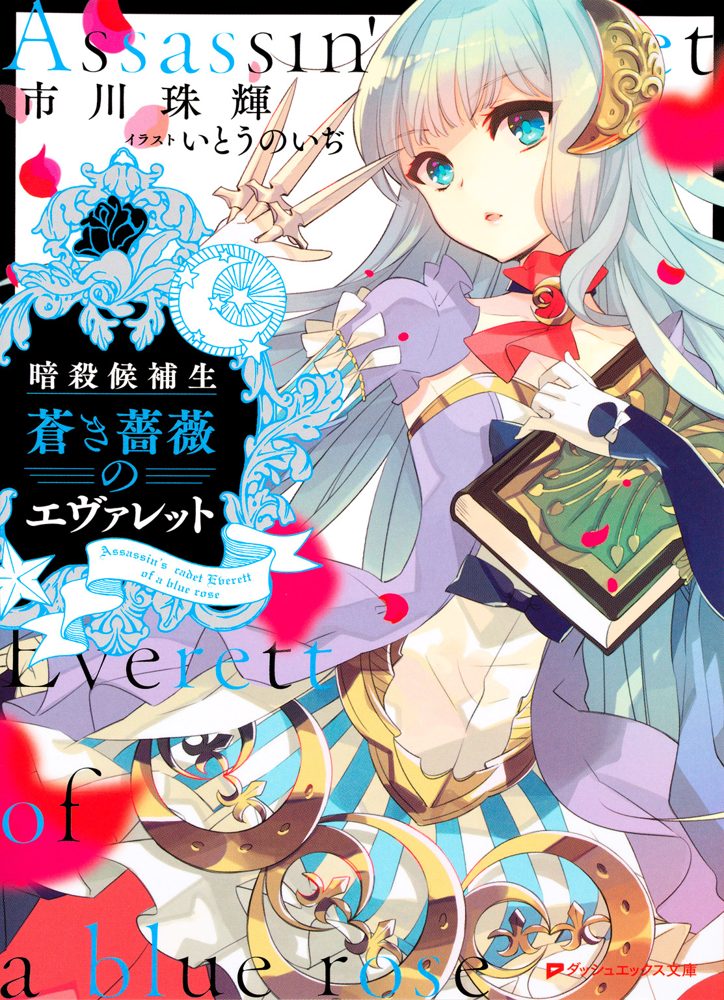
この本は縦書きでレイアウトされています。
また、ご覧になる機種により、表示の差が認められることがあります。
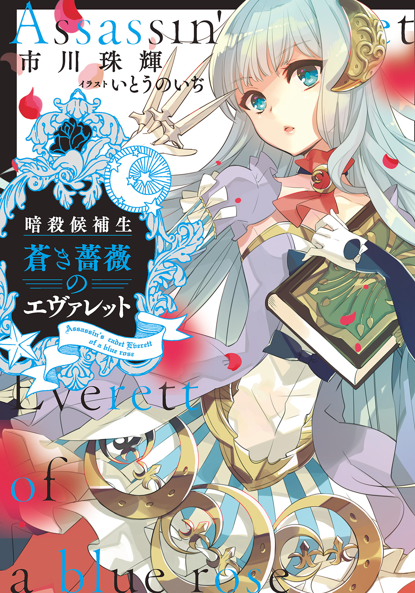
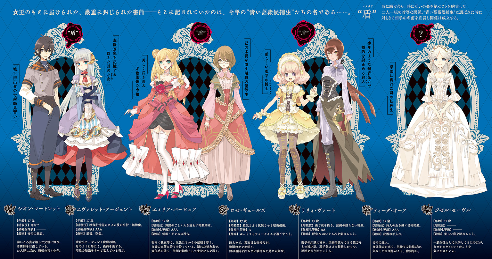
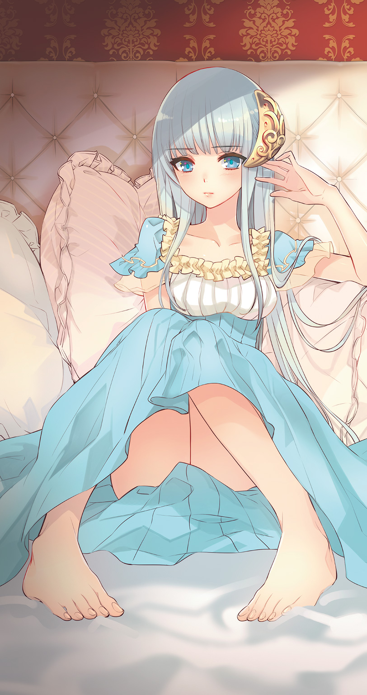
 ダッシュエックス文庫DIGITAL
ダッシュエックス文庫DIGITAL
暗殺候補生
蒼き薔薇のエヴァレット
市川珠輝
美しき女王は、朱に染まりし
闇の中で舞い踊り
王との約束を果たすため、我が身を影で焼き尽くす
その髪は小川の煌めき
花を摘むための指と、小鳥と歌うための唇
清らかな瞳を見た者は
他の美しいもの全てを忘れてしまうほど
美しき女王は、青に染まりし
その魂は不滅
決して枯れぬ薔薇は、青い炎の色を宿す
その爪で敵を切り裂き
歌うように相手を欺き 鋭い刃を胸にしまう
光を絶やさぬようにと
闇の中で蝶々のように舞う
王との約束を果たすため、我が身を影で焼き尽くす
それは決して枯れぬ、不滅の薔薇――
プロローグ 暗殺女王のハミング
群青の夜空に瞬く星の色は、悲しみを含んだ吟遊詩人の歌を思い出させる。
古い言葉で綴られた、この国に伝わる歌だった。
「......また、国が荒れるかもしれない」
真夜中の回廊を歩く影は、ひとつ――。
吟遊詩人の歌を口ずさみながら、女王は胸の内にある不安をなんとか打ち消そうとしていた。
女王として冠を戴いてからの日々は決して平穏ではなかった。十年前には第一子を出産後すぐに亡くし、齢三十を越してようやく、未来の王、第二子となる男子に恵まれたが、その王子が三つを迎える祝典をあげた矢先に国王が不治の病を患っていると知ったのだ。
ハイドランド王国の宮殿奥深くにあるこの場所は、女王と限られた人間しか立ち入ることができない。女王の視線が月光に照らされた庭へと向けられる。そこにはまだ蕾を固く結んだ薔薇が揺れていた。
「――わたくしの〝青い薔薇〟となる少女たちが選ばれる時期ね」
女王の問いに、柱の陰から凜とした声が返ってくる。
「はい。もう間もなくでございます。『アンブレイカブル・ガーデン』の少女たちの中から候補生が選ばれました」
「そう。わたくしもそろそろ......」
「いいえ、陛下。まだでございます。彼女たちが美しく咲くにはまだ時間がかかりましょう。何より『反女王派』がこのところおかしな動きを見せています」
女王の眉がわずかに歪んだ。
「よもや、国王のことが漏れ出たのでしょうか」
「確証は得られていませんが、『反女王派』の根は深くなっています」
「そういえば、あれから十年ね。わたくしのせいでこの国を乱してしまった......」
女王の脳裏に浮かんだのは、第一子を亡くしたことで起こった『反女王派』による反逆事件だ。女王はその時、共に戦ってくれた友や信頼できる従者の多くを失った。
そして十年前と同じように、国王の病は再び反乱分子が動き出す十分なきっかけとなる。
「あの時と同じように、彼がいれば......いいえ、このような日が再び来ることを予想して、彼は姿を消したのかもしれないわね」
女王は自分の手のひらを見つめながら、誰にも聞こえぬ小さな声で呟いていた。
「――女王陛下、〝青い薔薇候補生〟に対する『試練』についてですが、懸念すべき情報を耳にいたしました」
「......遠慮なく、仰いなさい」
「まだ正体も手段もわかりません......ですが『反女王派』が候補生に目をつけたという噂があるのです」
「なんということ......今年の〝薔薇の季節〟は異質なものになるでしょう。決して目を離さぬように」
「畏まりました」
女王は決してため息をつかない。
誰よりも強く美しく、気高く戦い抜き、青い薔薇を胸に刺し、ついにこの国を守る証である女王の冠を戴いた日から、たった一度も。
それは諦めに似ていたからだ。
女王は再び、夜空を見上げた。
＊＊＊
ハイドランド王国は、かつて〝太陽が沈まぬ国〟と呼ばれた大帝国領の一部であった。千年も続いたという大帝国の栄華は度重なる内乱によって分裂、衰退。その中で独立を勝ち取った国の一つとして誕生したのだった。
その王国は国境沿いとなる東側が山脈、西側は海に突き出た半島になっている。辺境の小国でありながらも、豊かな海から得る塩と海運貿易を武器にして栄えていた。
だが、その利得を狙う他国との戦争や独立反対派との内乱は避けられず、長きにわたる戦いは優秀な騎士を疲弊させ、権力争いは国の礎となる王家や貴族の信頼関係を揺るがし、国内に不穏な空気をもたらした。
そして百年前、ある事件をきっかけに訪れた、大暗殺時代――。
王室に仕えていた女官によって王が殺されるという未曾有の暗殺事件が起こった。その女官は他国が密かに潜り込ませた暗殺者であったことから、ハイドランド王国に与えた衝撃は大きかった。この事件が口火を切ることとなり次々と起こった王室内の暗殺未遂事件。王妃は愛する王と家臣を守ることができなかった自分の不甲斐なさに怒りを覚え、すぐに非常事態を宣言して、王位継承者を守るために、今までの慣習や常識を打ち破り、新たな女王制度を確立させた。
のちに、『不滅の薔薇』と呼ばれる王妃は、その時まだ齢十八。
その制度とは、暗殺の標的を王から逸らすため、王の権限や職務の主たるところを王妃に移譲し、君主を女王とするもの。そして王を〝神聖なるもの〟とし、上位貴族すらも目に触れられぬ存在として定めるものだった。
ここまでは国民の誰もが知るハイドランド王国の女王制度。
しかし、これには続きがある。
美しく微笑み、世継ぎを残すだけでよかったはずの王妃の役目は、暗殺者に対抗すべく、自らその技術と知識を習得して同等の力を得ることを義務としたのだ。そして、必要とあらば一兵士として、戦場に赴くことを拒めない立場とした。
さらに、王妃は自身を裏切らない従者を育てる厳格な教育制度も築き上げた。
女王直属の教育機関『アンブレイカブル・ガーデン』。貴族の令嬢はそこで教育を受け、最も優れた才能を持つ少女たちが、王国を守るための従者〝青い薔薇〟に選ばれる。賢く強く、権力に目が眩むことのない彼女らは、女王と命を共にし、戦争や権力争いのないハイドランド王国の未来を守るという王との約束を果たすために暗躍するのだった。
そして女王は〝青い薔薇〟から独断で次期女王を指名する権限をもつ。身分や家柄、爵位に関係なく、未来を託すに相応しい、王の代わりとなる女王という盾を。
多くの民は知らない。
美しく微笑む女王がその裏で血を流し〝青い薔薇〟と共に戦っていることを。
国を守る柱として少女たちが苛烈な訓練を受け、〝青い薔薇〟になることを――
そしてその先に女王の座があることも。
ただ吟遊詩人の歌声だけが古い言葉で綴っていた。
第１章
１．その日、俺は死んだと言われて
細く鋭い、銀色の針。
そんな視線がどこからか飛んでくる。はっと振り返っても人影はない。
誰かが俺を見ているような気がする――そんなことが、もう一カ月ほど続いていた。
今日もそうだ。午後の授業を抜け出す時に感じた。
ハイドランド城下街の隅にある、市民の子どもたちが通う学校。最初は、こっそり教室を抜け出したことに気づいた母が俺を尾けているのかと思った。だけどあの人にそんなまどろっこしいことはできない。
（じゃあ他に誰が......？）
思い当たる人物はいない。気のせいだと思いながらも、俺は街外れの丘へと走り出した。
その小高い丘の頂上に立つと、ハイドランドの様子が一望できた。正面には一般市民や商人たちの暮らす街が広がっている。三角屋根の細長い家が数えきれないほど並んでいて、風が強い日には家々の窓や軒先に干された洗濯物がはためき、まるで街全体が呼吸しているかのように見えた。そんな密集した住宅の合間を多くの路地が通り、商店や市場、学校などが並んでいる。そして街の中心部を貫く大通りの先にあるのが、王城だった。
国境に面した山の麓に立つ王城は、百年以上も前の戦いの跡が残るという堅牢な石造りの壁に囲まれている。王が住まう宮殿、国内外の来賓客をもてなすための広間、他にも王家に仕える何百人もの侍女や兵士たちが暮らす場所まであるという。
この国のどの建物よりも高くそびえ立つ王城は、晴れた日の夕暮れには黄金色に煌めき、誰もがその荘厳な光景に目を奪われた。
「今日も遠くまで、よく見えるな」
丘からの眺めは抜群だけど、細いあぜ道をずいぶん登らなければいけないせいで、やって来る人はほとんどいない。そんなところも俺のお気に入りだった。
数年前、俺は丘に立つ木々の中に良い場所を見つけた。それは枯れた太い木の幹に寄りかかるように建てられた小屋。森の中で狩りをする人が作ったようだが、長い間使われていない様子だった。
雨に濡れないように大事な物を隠せる、人が来ない静かな場所。
ここは俺が望んでいた隠れ家にぴったりだった。
俺は今日もいつもと同じように、夕暮れまでここで過ごす――はずだった。
森を通り抜け、目印となる丘の太い木が見えてきたその時。
「えっ......？」
乾いた、何かが爆ぜるような音がして、いきなり目の前に炎の柱が現れた。
それから、俺は何もできなかった。いつもの光景が突如として壊れる瞬間を、ただ立ち尽くして見つめるだけだった。
バチン、バチンと木が爆ぜ、火の勢いが増していく。
「噓だろ......本がまだ中にあるんだ！」
炎の中心にあるのは大きな乾いた木と、俺の隠れ家だった場所。
燃え盛る大木周辺は、近づくだけでもかなり熱い。自分の前髪が少し焦げた匂いがした。
「――ってえ、くっそ！」
炎の中に腕を突っ込んだ瞬間、鋭い痛みが襲ってきた。
「どうなってるんだよ......」
火の粉が舞い、息を吸うたび喉が焼ける感覚が襲ってくる。
だが俺は、火傷を恐れるよりも強い衝動に突き動かされ、もう一度炎の中に腕を伸ばした。
指先に、革張りの表紙が触れる。俺の宝物だ。何度もその本の頁をめくった。書いてあることはもう全て頭の中にある。それでも......どうしても失いたくない大事なものだった。
「君は、手を怪我することを恐れないのか」
低く静かな声がした。
振り返る間もなく、俺の体は勢いよく後ろに引っ張られ、炎の柱から引き離された。地面に転がったまま顔を上げると、声の主は、すぐ目の前に立っていた。
すらりとした長身の男は、俺から一瞬たりとも視線を外さなかった。冷たい切れ長の目から表情を読み解くことはできない。歳は四十くらいだろうか。上等なマントを肩に羽織り、何もかも見透かすような眼差しは相手の動きを制する強さを持っている。
「あの火を消してください......大事なものが、あの中にあって」
「そうだな。貴重な知識が形として残されている、最後の数冊だろう」
息を呑んだ。
この男は、炎の中にあるものを知っている。
「だがこの世に形として、あってはならないものなのだ」
「まさか、あんたが火を......」
俺はなりふりかまわず炎の中に飛び込もうとした。だが男に無理やり引き戻されてしまい、そのまま仰向けに倒された。
「この手を見ればわかる。君はもう覚えているのだろう？」
男は緩く握った拳を、俺の胸の上でトンと弾ませた。たったそれだけの動作で、俺の手足は縛りつけられたように動かなくなった。呼吸すら浅くなっていく。
「シオン・マートレット。私は君に無礼を働くつもりはない。私の名はジョセフ・アージェント。君たちはどうも違う名で我が家のことを呼ぶようだが」
「暗殺公......のアー......ジェント......」
百年以上続いた戦争や内乱の裏で暗躍した、暗殺に長けた一族。ハイドランドの歴史の中で、半ばおとぎ話めいた伝説の中に出てくる貴族がアージェント侯爵家だった。
なぜそんな貴族が、あの炎の中にあるものを、そして俺の名前まで知っているんだ？
「君はあの火事で死に、もうこの世にはいない存在となった。だが私は、君を生かしたいと思っている」
もはや声すら出ない。
ぐったりと脱力する俺の体を、アージェント侯爵はまるで荷物のように持ち上げた。
「私は君が知りたい。君が生きるに値する者なのかどうか――教えてくれないか」
かすかに馬のいななく声が聞こえてくる。
ぐらぐらと揺れ始める視界の中で、馬車らしきものが垣間見えた。
アージェント侯爵は無言のまま俺を馬車に叩き込んだ。蹄が地面を蹴る音が響くと同時に、俺は意識を失った。
＊＊＊
――シオン、この銀貨だとどのくらいのお菓子が買えると思う？
――いっぱい！
十年前。
まだ七歳だった俺が父と過ごした最後の記憶も、あの丘の上だった。
丘を越えた先は、切り立った崖になっている。
大昔から吹く海風に少しずつ削られてできたのだと、父は言っていた。崖から覗くと十数メートル下に塩田が広がり、そこは夕暮れになるときらきらと不思議な輝きを見せる。
――私の真似をしてうまくいったら、銀貨をやろう。好きな物を買うといい。
ふと見上げると父は崖の縁に立ち、腕をまっすぐ前に突き出していた。父の長い指の上で銀貨がくるくる回転しながら移動している。まるで生きているように五本の指を横断したあと、銀貨は俺の手の中へ落ちてきた。
――やってみる！
自分の指の上を転がし始めてすぐ、俺は後悔することになった。動かしそこなった銀貨が、あっという間に崖下へと転がり落ちたのだ。
――落ちたな。
幼い俺は泣き出しそうになった。お菓子を買えないことよりも、自分には父のような指さばきができないのだという思いが胸を刺した。
――まあ、最初はそうさ。父さんもずいぶん大事なものをなくしながら練習した。今度からは一番大事なものを指先に乗せているんだって思いながらやるといい。
そう言いながら父は俺の目の前で手を開いた。そこには一枚の銀貨が乗っていた。
――シオン。ここからは国中の道がどうなっているかよく見えるだろ？
俺は頷いた。賑わう商店通り、下町を囲む細い道、それらはみんなハイドランドの王城へと向かう立派な一本の道路に繫がっている。
――蜘蛛の巣みたいに見える。
――うまく繫がっているだろう。どうしてだと思う？
――どこへでも行けるから？
――ああ。そうだな。どこへだって行ける。シオン、今度はその意味をよく考えてみるんだよ。自分で道を選べ。そして道はひとつじゃないってことに気づくんだ。
俺の目を見ながら父は微笑んだ。傾き始めた太陽の光が、父の横顔を柔らかく照らしていた。
――わかんないよ。
――そうか。でもきっといつかわかるさ。
奇術。マジック。大道芸。様々な呼び方があった。父はいろいろな街や人々の前で奇術を見せることを生業にしていたらしい。らしい、なんて曖昧な言葉を使わなきゃいけないのは......父の記憶が十年前で止まっているからだ。
その翌朝、父はいなくなった。
どんなに行方を捜しても見つからず、母は身勝手な父の遺した物を全部焼いた。俺がなんとか隠れ家に運び出した書物以外、全部。
父のような奇術師になりたくて、父の真似をして、あの丘に立って俺は何度も銀貨を転がした。
父はひとたび街に出れば、いつも人に囲まれ、多くの人を笑わせていた。
俺の記憶の中の父は、いつだって笑顔で楽しげだった。
――なのに、どうしていなくなったんだ。
もしも俺が父と同じようになれたなら、その答えがわかるかもしれない。そう思いながら、指先で銀貨を回し続けた。
いつしか俺は、銀貨を地面に落とさなくなった。だけど、まだ答えは見つからない。
＊＊＊
ぴちょん、と何かが頰を濡らした。
誰かの涙かなと思ったけれど、どうやら違う。もっと冷たい何かだ。
薄く目を開けると、真っ白な光が差し込んできた。
それから、むせかえるほどの緑の匂い。ひんやりとした草の感触の上で俺は目覚めた。
「ここ......どこだよ」
馬車に押し込まれてから、そんなに時間がたってないはず。
俺は見知らぬ森の中にぽつんと投げ出されていた。幾重にも枝葉の重なった木々が、延々と広がっている。
聞こえてくるのは風と、かすかな鳥の羽音や小さな動物の走る音。街からどれほど離れているのか見当もつかなかった。
「落ち着け。足は......動くよな」
立ち上がると背中に痛みが走った。
だが手足や指先に痺れや麻痺はない。なんとか体は無事なようだ。
「あいつ――俺のこと、死んだって言ってたよな」
冷酷な眼差しが頭に蘇る。俺をここに放り出していったのはアージェント侯爵だろう。
でも、その言葉はおかしくないか。俺は死んでいない。気を失っている間にいくらでも殺せたはずなのに。
はっと、アージェント侯爵の別名が頭に浮かんだ。
――暗殺公。
暗殺者は、時に見せしめのように標的の死体を晒すという。
森の奥から、低い唸り声が聞こえる。
小鳥や小動物のざわめきがぴたりと止んだ。
本能がここは危険だと呼びかけ、全身に緊張が走る。
唸り声は少しずつ近づいてくる。素早く走る足音が複数。獰猛な野犬か、運が悪ければ狼かもしれない。どちらにしろ、間違いなく奴らは俺のほうへと向かってきている。
――君が生きるに値する者なのかどうか、教えてくれないか。
――さあ、走りたまえ。
頭の中でそう叫ぶ声が響き、俺は走り出した。
２．銀月色の髪は揺れ
靴底から、柔らかな土と草の感触が響いてくる。
走れば走るほど森は深くなり、木々の間から差し込んでいた日差しは次第に途切れ始めた。間違いなく昼日中のはずだ。だが時間がわからなくなるほどあたりは薄暗く、嫌な静けさに包まれている。
「ハア、ハア、ハア......くっそ、どこまで、行きゃ......っ、いい」
自分の呼吸音。草を踏む足音。心臓が大きく弾み、体中の血液が躍っている。
その合間に聞こえてくるのは、四本足の獣が数匹――俺を追う音だった。
きっとあれは本気ではない。回り込んで様子を窺うようにしながら近づいてきている。狩りの時の足音だ。
（つまりは、俺を喰おうってわけか）
おまけにそれは野生の動物が空腹を満たすためではなく。弄んで、引きずって、見せしめにするために追ってきている。
（なんで俺が、こんな目にあわなきゃいけないんだ）
おおおん、と一匹が唸り声をあげた。それを合図に獣の足音が速くなる。膝の痛みが限界へと近づいた瞬間、視界にいきなり光が飛び込んできた。俺はもんどり打って倒れた。
「――うがっ、痛えっ......」
顔を上げると、目の前には予想外の光景が広がっていた。
あんなにも薄暗かった森がいきなり開けて、丸く整えられた庭園が現れた。中心には石造りの噴水、その前には軽やかな水の音を聴きながらお茶ができるようなテーブルと椅子が置いてある。
「なんだ、ここ」
「ひっ」
ぽかんと口を開けるしかない俺の横で、女の子が短い悲鳴をあげた。
「お、驚かせてごめん......え、何、何でこんな所にメイド......？」
彼女は紺の長いワンピースの上に、シミひとつない白いエプロンをつけていた。
俺の問いかけに返事はなかった。さっき一瞬だけ見せた驚きの表情も消え失せ、メイドらしき子はテーブルクロスを手際よく広げ始める。まるで俺など見えていないかのように、彼女は淡々と自分の仕事をこなしていた。
「ここはどこなんだ？ あんた、こんな森のなかで一体......おい、おいおいちょっと待って」
続いて聞こえたのは、カチャカチャと陶器が触れ合う音だった。
振り向くとメイド姿の女の子たちが四人、バスケットや食器を手に並んで歩いている。
「ちょ、ちょっと待て、止まってくれ！ ここで何が始まるんだ？」
俺の声など気にも留めず、彼女たちはテーブルに食器を並べ始めた。
あの獣たちはまだ俺の後をずっと追い続けている。つまり、ここにやって来るってことだ。
足首まで隠れるほどの長いスカートと、かぼそい手足に目をやる。
（やばい。こんな格好の女の子、走って逃げられないぞ）
同時に、俺の中にもう一つの考えが浮かんでしまった。
（――逃げられるかもしれない）
何も言わずにここを立ち去り、、彼女たちを囮にしてしまえば、獣から逃げ切れるかもしれない。でも......メイドの彼女たちはどうなってしまう？ 想像するのは簡単だった。
「なあ、俺の声聞こえてるんだろ？」
「エヴァレット様、お茶の準備ができました」
メイドの一人が初めて声を出した。
そして全員が姿勢正しく一列に並び、全く同じ角度で頭を下げる。
「......えっ？」
エヴァレット――そう呼ばれた少女はいつの間にやって来ていたのだろう。
すぐ横を通り抜けるその姿を、俺は無言のまま見つめた。
こんなにそばにいたのに、彼女の気配に全く気づかなかった。
南方にある常夏の国に、こんな蝶がいるという。
音もなく、気づけば目の前に現れる幻のような存在。
銀色の細い月と同じ輝きを持つ髪が揺れる姿は、そんな風に見えた。
深い青の瞳は俺のことなど全く見ていない。切れ長の冷たい眼差しは強い意志を宿していた。貴族らしい豪奢なドレスを着ているのに、エヴァレットという少女が纏っている空気からはもっと違うものを感じた。
凜とした立ち姿の中にある誇りと、孤高。
剣も持たず、馬にも乗っていない。けれど俺の横を通り抜け、優雅に椅子に腰かけようとしている女の子は、どの国の王城の騎士よりも鋭い空気を放ち、誰もその横に立つことなどできないような圧倒的な気配に満ちている。
すれちがった瞬間、俺はその空気に胸を貫かれていた。
「いつもと同じように」
「畏まりました、エヴァレット様」
メイドのうちの一人、彼女たちの中で一番年長らしき子がバスケットの蓋を開いた。
そこから取り出されたのは、新鮮なハムや真っ白なパン。焼き立てなのか香ばしい匂いがあたりに広がった。
「って、今はやべえって！」
バスケットに伸ばした俺の手を、メイドは顔色一つ変えず払った。
「――野犬か狼がすぐそばにいるんだ、今すぐ逃げろ！」
どうしても俺をいない者としたいメイドも、さすがにぴくんと肩を震わせた。
それでも彼女たちは無表情のまま、そっと目配せをして主を庇うように立ち位置を変えた。
（ああ、もう巻き込んでしまった）
俺に降りかかってきている何かから、彼女たちは逃げられるだろうか。
どうすればいい。どうすれば彼女たちを、獣どもから逃がすことができる？
頭が熱くなっていく。何をどうすれば、一番良い道筋が見えるか。
ふと思い浮かんだ光景は、人々の前に立ち奇術を行う父の姿だった。幕が上がると同時に、興奮した数多の眼差しが飛んでくる。父だけでなく舞台に立つ者は皆、自分が何をすべきなのかを深呼吸しながら思い巡らせる。ほんのわずかな時間の中で。
「そんな格好じゃ走りにくいだろうけど......何とか頑張ってくれ」
俺はバスケットから出されたばかりのハムをわしづかみにして、自分の服にこすりつけた。肉の匂いがたっぷりついたあたりで、俺は口の中にハムを放り込んだ時――
「......あなたがた、下がって結構よ」
初めて、彼女――エヴァレットが俺のほうに視線を向けた。
じろりと、怒りを含んだ一瞥が浴びせられた。
「いや、違うんだ。腹が減ってたからじゃなくって、俺、肉の匂いをつけて、あんたたちと別の方向に走るからその間に」
「......約四十秒。西に向かって駆け足で。そこにわたしの馬車があるから中で待っていなさい。許可します」
エヴァレットの声には有無を言わさぬ威圧感があった。メイドたちは一礼すると、命令通りまっすぐ走り去っていく。思わず俺は心の中でカウントを始めてしまった。
「な、なあ、あんたも行けよ！ 獣は食いもんの匂いにつられるから、俺のほうに来てるうちに逃げろ」
「......もう遅いわ」
無機質な声だった。だが言葉とは裏腹に、エヴァレットから諦めの色は全く感じられない。
それどころか、メイドを逃した後も、エヴァレットはそのまま優雅に紅茶を飲み始めたのだ。
「そんなことしてる場合じゃないって！」
ザザザ、と草を踏み分ける音。低い唸り声。
約四十秒――エヴァレットは正確だった。
獣たちはきっちり四十秒後に辿りつき、円形の庭を見渡すように四方に分かれた。獲物を狙う気配があたりを包み、知らず知らずのうちに鳥肌が立っていた。
「くっそ......囲まれたか」
その時、ほんの一瞬だけ風向きが変わった。
つんと鼻の奥を刺すような......そう、薄荷だ。テーブルの脇に置かれた水桶の中からその匂いがする。
「薄荷の匂い、鼻の利く動物が嫌がるらしいって父さんの本に書いてあったな」
俺は水桶を両手で抱え、エヴァレットに向けて思いきり振り上げた。
（あ、でも。目に入ると大変なことになるから、なるべく下のほうに。それにたぶん......そのスカートだったら濡れても服が透けるなんてことにはならないはず）
「ごめん！ ほんっとにごめん！」
エヴァレットのスカートは、薄荷水でびしょ濡れになった。
「走ってくれ、お願いだから！ 俺のせいなんだ、わけがわかんないんだけど、誰かに殺されそうになっていて」
「......あなたは」
「獣に追われているのは俺だから！ だからあんたを巻き込むのは嫌なんだ！」
「あなたはこの薄荷水の使い方を知らない。わたしは無駄な行動を嫌悪するの」
「......へ？」
エヴァレットの唇が真一文字を描いた。
真っ白な肌の中でそこだけが薄い桜色になり、冷徹な彼女にも血が通っているのだと教えてくれる。わずかに嚙みしめられた唇は小さな怒りを含んでいた。
俺は、エヴァレットの表情らしきものを初めて見た気がした。
「それはわたしの髪を、整えるために存在したもの」
エヴァレットがすっと立ち上がった。風が、長い銀の髪を波打たせる。
真夜中、それも真冬の一番空が昏くなる時に見える月。あの月光をそのまま髪に宿している。
だけど、俺には髪に見惚れる暇すら与えられなかった。
ついに獣――四匹の猟犬が姿を現した。どいつも立ち上がれば俺の背よりも大きそうで、鍛えられた筋肉と鋭い牙を持っている。おまけに何日も餌にありつけていないような、飢えた目をしていた。
......この距離じゃ、どう走って逃げたって追いつかれる。
猟犬たちはじりじりと距離を詰めてくる。
突然襲いかかってきた理不尽な運命が、俺とエヴァレットを窮地に追い詰める。
もはや抗う方法は、たったひとつ。
俺は両手を拡げて、エヴァレットの前に立った。
「本気で逃げろ、転んでも服が破けても、走ってくれ――頼む」
返事はない。もちろん走り出す気配すらない。俺の言葉は、エヴァレットには何一つ届かないようだ。
俺の後ろに佇む、名前だけしか知らない、エヴァレットという少女。
俺と、会ったばかりの見知らぬ彼女はここで死ぬのか？
そんな巡り合わせ、あっていいのか。恐怖と怒りが体の奥でまざりあう。
「ハイドランド歴三七八年、フィン公爵が狩猟中に死亡。だがこれは南センダリ領の貿易商が差し向けた暗殺である」
背後から聞こえたのは、本の頁をめくる音だった。
振り向くと、エヴァレットは一冊の古い本を開いていた。
ぴんと背筋を伸ばした姿は、美しさと賢さを表す女神の彫像のように見えた。
「この暗殺には、何年にもわたる周到な準備ののちに行われた巧みなる【暗殺伎】のひとつが使われた。公爵が子犬から育て上げた忠実なる猟犬、まさかそれが暗殺道具になるとは誰も気づかない。だが猟犬たちは主も知らない、ある『音』によって躾けられていた――」
「......逃げろよ、お願いだから......俺みたいな奴の言うことでも聞いてくれ......」
「つまり、〝敵〟は躾けられた犬ではない」
「......はい？」
――一体、なんなんだ？ 何をするつもりなんだ？
３．エヴァレットという少女
ついに猟犬たちは大地を蹴り俺たちのほうへ飛びかかってきた。
俺に残された手段は、むやみやたらに手足を振り回すくらいだ。引きずり倒されたらおしまい。猟犬たちは止めを刺すため喉に牙を立てるはず。
俺が叫ぶよりも早く。いや、俺の声なんてあろうがなかろうが関係ない。
何の迷いもないエヴァレットの横顔が見えたのは、ほんの一瞬だった。
エヴァレットは細い半身を目にも留まらぬ速さでひねる。少し遅れて長いスカートが円を描いた。布地は水を含んで重みを増しているはずなのに、風に揺れる花びらみたいに軽やかだった。
そして、まっすぐに伸びる脚が見えた。
薄い絹糸で織られたハイソックスが太腿のあたりで留められている。
その留め金にあったのは――短銃。
エヴァレットはするりと短銃を手に取った。
乾いた音が四発。猟犬は己の足元で飛び散った弾丸に驚き、後ずさる。
再びエヴァレットが構えた銃口は......俺の頭を狙っていた。
「ちょ、ちょっと待ってくれ！ 違う、あの犬は俺が連れてきたんじゃない」
「......そう」
「あと、さっき、俺、あんたのふ、太腿とか、み、見てないから！ 俺に銃口向けてるの、そんなことが理由じゃ......ないよな」
「黙って、動かないで」
（ごめんなさい、噓をつきました。そう言ったら許してもらえるかな）
なんて考えが、俺の最期の言葉になってしまうのだろうか。
銃声が響くと同時に、頭の中に甲高い金属音がこだました。
「あ、熱っ！」
銃弾は俺の頰をかすめて森の奥へと飛んでいった。
エヴァレットの唇がかすかに動く。だけど声は聞こえない。たぶんさっきの銃声で鼓膜に異変が生じたのだろう。銃の仕組みのせいなのか、エヴァレットは何の影響も受けていないようだった。
頰から流れる血に触れたとたん、痛みがやってくる。
「......と......たはず」
「――なに？ 聞こえないんだ」
「動かないでと言ったはずだけど」
エヴァレットの視線は俺の頭の横をすり抜け、遠くを見つめている。
ふと辺りを見ると、あんなにも猛っていた猟犬たちが大人しく首を下げていた。さっきの銃声に怯えたからではない。明らかに、空気が変わっていた。
「お父様、一体何のつもりでしょうか。『午後のレッスン』にしてはずいぶん手が込んでいるように思えましたが」
エヴァレットの呼びかけに、木々の狭間から長身の影が現れる。
アージェント侯爵――俺をさらった、張本人だった。
「......お、お父様ってこの人......が？」
「黙りなさい」
エヴァレットが俺に銃口を向ける。今度の標的は間違いなく俺だ。
有無を言わさぬ命令に従い、俺は口を閉ざした。
「エヴァレット、今日はお前へのレッスンではない。この少年のための特別なテストだ」
アージェント侯爵は俺たちのほうへ近づきながら、右手を差し出した。手のひらの上に乗っていたのはバラバラになった陶器の破片。元の形を想像させるのは、筒状のかけらだけだ。
「射撃の腕は変わらず見事だ。それに真に打ち砕くべき物を見破る目は、我が娘ながら誇らしい」
「お父様、その犬笛は貴重なものでしょう」
「そうだな。これを作る技を持つ者はもうハイドランドにはいない。今後は彼らも楽しく兎を追う役目だけで済む」
アージェント侯爵はちらりと猟犬たちに目をやった。
特殊な音を出す犬笛から解放されたとたん、猟犬たちは人間に付き従う賢い顔つきでアージェント侯爵を見上げている。
「お父様！ 違います、わたしが聞きたいのはなぜ貴重なものを使ってまで......」
エヴァレットは言葉を切ると、一瞬だけ俺のほうを見た。
「一体何を試したというのですか」
あ、そうか。エヴァレットは俺の名前を知らない。微妙な声の空白は、俺のことを指しているようだ。
「彼が生きていては不都合が生じる。だが私は殺したくないと思っている。それは知っているね、エヴァレット」
――生きていては、不都合？
俺が口を開こうとした瞬間、銃口がぴくりと動いた。
行き場のない動揺を口のなかに押し込め、俺は茫然と目の前の二人を見つめるしかない。
「私やお前がリスクを負っても、彼が生きるに値する者かどうかを知りたかったのだ」
「......わたしに？ それは、どういう意味ですか」
「生かすべきでない者を、生かす。この常理に反する問題を解決できるのはエヴァレット、お前だけだ。彼を〝盾〟にしなさい」
「......エスクド？」
疑問が、思わず漏れてしまった。
慌ててエヴァレットの方を見ると――俺を狙っていた銃口は下がっていた。
「お父様！」
その声を聞いた時、エヴァレットが俺と同じ年頃の女の子なのだと実感できた。
驚きや戸惑いが、たった一言の声の中に籠もっていた。
「本気なのですか？ 〝盾〟になるということは、ずっと一緒にいるということ......お父様、わたしは候補生としてもうすぐ〝薔薇の季節〟を迎えることになっています。そこに男を連れて行くなど、不可能です」
「エヴァレット、我が家の掟は何だ」
「......当主に従うこと」
「お前の才能は、アージェント家の歴史の中でも一、二を争うほど素晴らしい。〝青い薔薇〟になるには全てを捨てなければならないのだ、エヴァレット。我が家を背負えるほどの才を捧げるつもりならば、最後に一つ、不可能を可能にせよ」
「それが、わたしが〝青い薔薇〟になるための条件ですか」
アージェント侯爵は頷き、続けた。
「彼にはもう帰る所がない。エヴァレット、彼に存在する理由を与えることを拒むなら、せめて苦しみを感じないように殺しなさい。お前ならできるだろう」
（えっ......!?）
帰る場所はない――はっきりとそう聞こえた。
「まさか、あんた......隠れ家だけじゃなくて......俺ん家まで......」
爆発しそうな怒りに突き動かされ、俺はアージェント侯爵に殴りかかった。だがアージェント侯爵はすぐさま身を翻し、俺の腕を摑みあげた。
「やはり、この手は父親にそっくりだ」
「......父さんを、知ってるんだな」
「帰る場所があると、まだ思っているのか」
何もかもを焼き尽くす、燃え盛る炎の柱。
大事なものが奪われていく光景が、鮮やかに脳裏に浮かぶ。
「ならば現実を見てくるがいい」
アージェント侯爵は手を放し、俺を促すように顎で示した。
その先にあるのは森の中へと続く細い道だった。
俺は、駆け出していた。
４．忘却は雷雨のごとく降りかかり
方角などわからなかった。だが森を抜ければどこかで街道にぶちあたるはずだ。
走って走って、やがて目の前に現れた道を駆け抜けてゆく。やっと遠くに街らしき屋根の連なりが見えて来た時、俺はあの森が何だったのかようやく気づいた。
迷路のように深い森の奥に尖塔が垣間見える。森は、古くからある貴族の城を守るために作られたものだった。
息があがり、肺が焼けるように熱くなっても、俺は足を止めなかった。
やっと見覚えのある街へと戻って来た時には、あちこちから夕食を作る良い匂いがたちこめてきていた。
「......あった」
毎日見ていた家の扉や窓。少し湿った空気の匂い。聞こえてくる隣家の赤ん坊の声。
当たり前に触れていた全てがそこにあって、でも、何故か懐かしく思えた。
最悪な予感は外れてくれたようだ。
「マートレットさん、今月もいつもの注文が入ったよ！」
聞き覚えのある太い声は、母が勤める仕立て屋の女将だ。両手に抱えた袋には、上等な綿布が入っている。毎月、母宛にやってくる注文だった。
「ほら、いつものお花もつけてくだすって。このお客がついてる限りあんたは安泰だねえ」
家から出て来た母は、袋とともに渡された花束に顔をうずめた。
「本当に良い匂い......なんて花なのかしら。いつもよりも鮮やかな色をしているわね」
「じゃあいつもの納期でお願いするよっ！」
ここ何年も、毎月一度やってくるこの注文を母は喜んでいた。
テーブルに置かれた花の匂いは、母が縫い仕事をしている間ずっと香っていた。そんな光景も、間違いなく俺にとって大事なものだった。
「......母さん！」
たぶん、数時間ほどだ。意識を失ってから、あんな目に遭うまでそれぐらいしかたっていないはず。そうじゃなければ、母はあんなに落ち着いていないだろう。
「あの、俺がいない間、何もなかった――」
「まあ、シオン。こんにちは、今日はお手伝いしてもらうことはないの。いつもありがとうね」
「......え？」
にこにこと笑う顔は、いつもの母だった。
目の前にいる母は、俺の名を間違いなくシオンと呼びながら――息子ではないような素振りをしている。何よりも噓をつくのが苦手な母が、こんな風に笑うなんて信じられない。
「ちょっと待ってくれる？ パンが焼いてあるから、持っていきなさいな」
噓はない。本当にそう思っているのだ。
「母さん？ どうしたんだよ、どこか調子悪いのか？」
「いいえ。私は元気だから、もういいのよ、シオン」
「良くないって。まさかおかしな毒でも盛られたのか？ それか、頭でも打って......」
「シオン。私を心配してくれて、母さんって呼んでくれるの嬉しい。でも無理はしなくていいの。息子のふりなんてしなくても、大事に思っているよ」
「何言ってるんだよ」
「こら！ あんたこっち来なさい！」
突然、ぐいっと襟首を摑まれ家の外へと引き出された。いつの間にか戻ってきていた女将の丸く力強い手が、俺をしっかり捕まえている。
「あんたねえ、マートレットさん家の手伝いするのはいいけどさ！ 亡くなった息子さんのふりするのはもうやめな。一時はあの人、本当に参ってたんだよ」
「......亡く、なった？」
「数カ月経ってやっと時薬が効いたんだ。人間、忘れなくちゃやってけないこともあるんだよ。さあもう家に帰りな」
「えっ......？ 一体何を言って......俺は今朝までこの家に......」
耳の中で何もかもが崩れ去る、砂の流れるような音がした。
炎の柱ではない、別の何かが俺の大事なものを焼き尽くした。
――いや、違う。焼き尽くされたのは、俺だ。
混乱した頭でもおぼろげにわかり始めた。
『彼には帰る場所がない』
言葉通りだった。俺がいたはずの場所、俺という存在がことごとく別の何かに書き換えられていた。母の知る『シオン』は俺ではない誰かになっている。母だけじゃない。俺を知っているはずの人たちに、不可思議な忘却が降りかかったのだ。
遠くで雷が鳴り始めた。空気が湿りだし、もうすぐ雨が来ることを知らせた。
通りに面した市場は、軒先に並んだ品物をしまいに出てくる人たちでにわかに慌ただしくなった。隣近所の家々の窓からも住人たちが顔を出し、干していた洗濯ものを取り入れている。何気ない、いつもの光景だった。
だけど俺には、全ての音が遠く感じられた。
お前はここにいるべきじゃない。お前の居場所はもうない。
遠雷がそう叫んでいるように聞こえた。
＊＊＊
丘の上の隠れ家だった場所に辿りついた時、空はすっかり暗くなっていた。
降り出した大粒の雨が、激しく地面を叩きつけている。
俺の目の前に真っ黒な炭の固まりがあった。さっきまでここに立っていた巨木の残骸だ。手で触れてみると、まだほのかに熱を帯びていた。
小屋に置いていた本は跡形もない。ガサガサとした灰が雨に濡れ、固まっていくばかりだ。
何も考えられなかった。俺には何も残っていない。
どこへだって行ける。シオン、今度はその意味をよく考えてみるんだ。
そう言った父は、指先の上で銀貨を躍らせていた。
――そして、父さんは何も言わず消えた。まるで奇術みたいに何も残さず。
人々を驚かせるショーなら、消えた人物はその後、予想外な場所から戻ってくる。それが一つの演目の終わりの合図。人々は胸をなでおろし、次の演目に目を奪われる。
――もしも父さんの失踪に、何か隠された意味があったなら。
そう、今の俺のように突然降りかかった何かに押し流されたなら......。
俺はベルトにつけていた小さなポーチに手を突っこんだ。幸いこのポーチは誰にも触れられていないようだ。
指先の感触だけで何がどこに入っているかわかる。
俺は一枚の銀貨を取り出した。
――父さんの失踪も、母さんが俺を死んだと思い込んでいることも繫がっているのか？
指の上で銀貨を転がす。磨き上げた銀貨は稲光を反射して眩しく輝いた。
――まるで、トリックの張り巡らされた大きな奇術に巻き込まれたようだ。
そのトリックが隠そうとしている真実を知りたい。そんな思いが体の奥から湧き上がる。
「......どうするの」
雷鳴をぬって、凜とした声が届いた。
エヴァレットが、馬に乗り佇んでいる。
なめし革でできたマントのフードを目深にかぶり、たった一人で。
「貴族のお嬢様が、一人で馬に乗るなんて初めて見た」
「誰もが同じではない。わたしは、特にそう」
「俺のこと、殺すの？」
「望むのならば、聞き入れるけれど――」
「望むわけない、死んだら何もわかんないだろ」
「そう」
「さっき、条件とかなんとか言ってたよな。俺を生かすか殺すか。どちらかを選ばないと、あんたはやりたいことができないんだよな」
雨粒がフードを伝わり落ちてゆく。その奥で、半月を描くエヴァレットの美しい眉がぴくんと動いた。鉱石のように頑なな心が、わずかに震えたように見えた。
俺は馬上のエヴァレットを見上げ、はっきりと言った。
「面倒なら、さっき背中から俺を撃てばよかった。あんなに上手なんだから間違いなく俺を殺せただろ？」
エヴァレットは今もどこかに銃を隠し持っているはずだ。その気になれば一瞬にしてその銃口で俺を狙い撃ちできる。でも、俺はまだ生きている。
「あんたは誰にも邪魔されず叶えたいことがある。だけど殺す術を持っているのに、邪魔な俺を殺さない。その理由は何なんだ？」
もしかしたらその問いが、俺の運命を死に傾かせるかもしれない、賭けにも似た言葉だ。
沈黙。雨音。雷鳴。エヴァレットが何を思っているのか、窺い知れない。
ただ青い瞳の中には間違いなく俺の姿が映っていた。
「古くから言い伝えられている。暗殺者が奪う運命の数は決められていると――真の敵を正確に射止めなければならない。でなければ、太陽どころか月からも忌み嫌われると」
「......暗殺公の娘だからって、あんたみたいな子が暗殺者に？」
「わたしが目指すのは〝青い薔薇〟。女王をお守りするために全てを捧げなければならない。だからつまらないことで人を殺したくはない」
（......つまらない。俺の運命はつまらないってことか）
「あんたの望みは〝青い薔薇〟になるってことなんだな。そのためには父親が言う命令に従わなきゃいけない......でも、あんたは無駄に人殺しはしたくないと」
「粗暴な言葉ばかりを選ぶのね」
「俺、あんたの夢に乗るよ」
「夢ではない、行かなければならない道――」
「道......だな。命が助かるってなら、俺はその道についていく」
エヴァレットは再び沈黙し、やがて深いため息をついた。形の好い眉が不機嫌そうに歪んでいる。
「え、もしかして気が変わったり......した？」
「わたしに〝盾〟などいらないと、何度も言ったのに」
今のは俺に向けた言葉ではなさそうだ。
「〝盾〟って......俺があんたのこと、守るのか？」
「今のは冗談？ それとも本気でそう思ったの」
風にあおられたフードの下から見えた顔は、本気で怒っていた。
「――冗談、です」
「わたしは〝青い薔薇〟になる......それだけ」
「交換条件、成立した？」
「いいえ」
エヴァレットは馬から降り、俺の前で人差し指を立てた。
「汚らしい呼び方はやめなさい。わたしの名を呼ぶことは許可します」
「へ......？ 汚らしいってどういう......あんたってやつか」
エヴァレットは嫌そうに頷いた。
「わかった。えーっと、エヴァレット......」
「不快ですが、許します」
「他にもまだまだ山ほどありそうだな、条件ってやつ」
「それについては、追って伝えます」
一体どれほどの条件があるんだろう。
「最後に一つ――必ずわたしに従うこと」
「わかったよ。俺の運命はあんた......じゃなかった、エヴァレットが握ってるんだよな」
「シオン、わたしはあなたを〝盾〟と認めたわけではないから。きっと永遠に認めることがないことも覚えておいて」
わかってる。俺もエヴァレットに言っていないことがある。
何もかも奪われて、まったく知らない場所で、得体の知れないお嬢様に付き従う理由。
俺のまわりで巡っている、長い長い奇妙な演目のトリックは何なのか。
十年前、父はどうして姿を消したのか。
その真相を知る舞台の幕を、やっとつかんだ気がしたからだ。
第２章
５．乙女の園での大きな噓
「なあ、確かに俺はエヴァレットの指示に従うって約束したよ？」
エヴァレットは長い銀の髪を揺らしながら、俺の数歩先を歩いている。
その背中は定規が入っているのかというくらい、ぴんとまっすぐ伸びていた。
「でもさ、さすがに俺にだって心の準備ってやつが必要なんだ。はっきり言うけど......俺は本当にここにいていいのか？ 絶対に違う感じがするんだけど」
俺が全身で感じている疑問をエヴァレットにぶつけた。
しかし、返事どころか振り返ってすらくれない。
今、俺に注がれているのはエヴァレット以外の視線だ。それも一つや二つではない。
数十人以上の眼差し。
長くまっすぐ伸びる廊下にずらりと並んでいるのは、貴族の令嬢たちだった。
（間違いなく俺を見てる、見てるよな......皆）
エヴァレットのドレスとは違い、彼女たちは揃いの制服らしい衣装だった。
上等であることが一目でわかる制服は、色も装飾も控えめだが、かえって彼女たちの気品を引き立ていた。そんな令嬢たちの美しく澄んだ瞳が、俺の動きを追っている。
全身を柔らかい羽でさわさわと撫でられているようなこそばゆさを覚える。
そして気になることはもう一つ。
この建物――『アンブレイカブル・ガーデン』の敷地へと入ってから一人も男を見ていない。同年代か年下の女の子ばかりなのだ。
彼女たちの息遣いとエヴァレットの靴音だけが響く中、俺は息を呑んだ。
（本当にここに来て良かったのか......？）
＊＊＊
俺の運命は、わずか三日間で何もかもが変わってしまった。
あの日――そう、帰る家すら失った俺は、エヴァレットのもとに身を寄せることになった。
アージェント侯爵の屋敷は、街から少し離れた丘陵地帯にそびえたっていた。敷地は森に囲まれ、俺がさまよい歩いた場所もその領地内だったようだ。
屋敷に着いたとたんエヴァレットは俺の前から姿を消し、代わりに現れたのは無口な使用人たちだ。俺は汚れた野菜みたいに体中を思いっきり洗われ、新しい服を与えられた。
今まで着たことがない柔らかな感触のシャツ、一筋のシワもないズボン。靴も丈夫な革製のもので、鏡の前に立つと、自分が今までとは全くの別人に見えた。
それはまるで、生まれ変わって見も知らぬ世界に叩き落とされたような気分だ。
ずっと腰につけていた小さなポーチだけは、なんとかそのまま持たせてもらえた。指先の訓練用の銀貨や、奇術に使う小さな道具を詰め込んだそれだけが、俺が存在している証だった。
それからの二日間は、更に目まぐるしかった。
屋敷の一角に閉じ込められた俺は、見るからに厳しそうな家庭教師と過ごすことになったのだ。俺に何ができて何ができないのかを見極めるように、学力や立ち居振る舞いを細かくチェックされた。通っていた学校で習っていたものとは比べものにならないほど難しい数学や歴史、聞いたこともない異国の言語で書かれた問題を解かされたり、お茶を飲む時のカップの持ち方や歩く姿勢まで口うるさく注意される。
朝から晩まで続いた苦行から解放された時には既に三日目の夜が明けていた――。
そして四日目の朝、ようやくエヴァレットが俺の前に姿を現した。
促されるままエヴァレットと共に馬車で向かったのは、山の麓に位置するハイドランドの王城――ではなく、その裏手にある〈王の禁区〉と呼ばれている森だった。王城の裏一帯は国境を守るように山岳地帯が広がり、貴族どころか王族たちですら容易に立ち入ることを禁じられている神聖な場所でもある。一般市民の俺が入るなんてもっての外だった。
やがて、突如視界が開け、湖に浮かぶ大きな城が現れた。
「こんな場所に城があったなんて......」
俺は思わず声を漏らしてしまった。
湖の中に立つ城は、四隅に監視用の櫓がある石造りの城壁に囲まれていた。
王城と違い無骨で頑丈な印象だったが、湖面に湧き立つ薄い霧に包まれる姿は人を寄せつけないような厳粛さを漂わせていた。
天然の堀とも言える湖と高い壁に囲まれた、秘められし場所――馬車はその城へと続く唯一の橋を渡ってゆく。
「な、なあ、ここは......一体何なんだ？」
「――アンブレイカブル・ガーデン」
「アンブレ......？」
「わたしの学び舎よ」
それ以上の質問には答えない。というように、エヴァレットは唇をきゅっと結んだ。
＊＊＊
（って......やっぱり、俺、絶対ここに来ちゃいけない人間だよな......）
〈王の禁区〉に囲まれた、湖上の城『アンブレイカブル・ガーデン』。
俺はエヴァレットと共にその敷地内へと足を踏み入れていた。
閉ざされた分厚い扉の先には、城下街の広場よりもさらに広大な敷地が広がっていた。
遠くまで続く大庭園が目を引き、手入れの行き届いた芝地に、居心地のよさそうな噴水と東屋が左右に立っている。
庭園の中央をまっすぐ伸びる石畳のはるか先には、王冠のような半円状の屋根をもつ大聖堂があった。屋根の頂には王が住まう城と神聖なる聖堂だけに許される特殊な飾り塔が見える。
（こんな山奥の森の中に大聖堂があるなんて......きっと誰も知らないだろうな）
大聖堂から俺たちがいる扉の方に向かって東西それぞれに、外廊下が伸びている。東側には、長机の並ぶ教室が連なっており、女の子たちが行き来していた。西側には、窓のない礼拝堂のような棟がある。どちらも外側から見た無骨な印象とは逆に、柱や扉、窓枠に至るまで細かな彫刻が施されていた。
エヴァレットが言うには、ここは学校らしい。
質問したいことは山ほどあったが、エヴァレットはさっさと前を歩き始めてしまった。
慌てて後を追いながら、俺はふとあることに気づいた。
（あの子たち......さっきからずっとこっち、見てるよな）
東側の、教室が並ぶ外廊下にどんどん女の子たちが集まり始めている。
彼女たちは皆、制服らしき揃いのドレスを身にまとっていた。ふんわりと膨らんだ袖が特徴的な濃い茶色のワンピースで、腰に巻かれた白いベルトが可愛らしさと上品さを感じさせた。
そんな清楚な制服を着た令嬢――俺と同じくらいの歳から、七つ以上は離れていそうな小さい子たちが皆、俺とエヴァレットを見ている。
「エヴァレット、ちょっと待ってくれ！」
エヴァレットはどんどん先に行ってしまう。
「なあ、少しは俺の話も聞いてくれ！」
俺がそう声を張り上げた時――
「どういうこと......？ エヴァレット様の後ろにいらっしゃるの、やっぱり男の方......？」
「今のお声、確かにそのように聞こえましたわ......で、でも」
「まさかそんなわけないわ。だってここは男子禁制、お父様ですら校舎内には入れないのよ」
一人の呟きをきっかけに今までの沈黙がいっきに破られ、ひそひそ声が波打つように広がってゆく。同時に、東側の外廊下にいた令嬢たちが、遠慮がちにこちらに近づいて来た。
「エヴァレット、どこに向かってるんだよ」
エヴァレットは一向に振り向かない。
「わかった、もういいよ」
俺は歩みを緩め、周りにいる令嬢たちに目をやった。
さっきまでは好奇心でいっぱいの眼差しを向けていた令嬢たちだが、俺のほうから視線を合わせると、皆、顔を背けていく。
よく見ると、制服は揃いであっても髪型やアクセサリーが少しずつ違う。そしてどの子の髪も街では見たことのないような、花や蝶の透かし彫りが施された髪飾りをつけていた。
（あれ......？ あの子、どうしたんだ？）
令嬢たちの中に、一人だけ様子が違う子がいた。おろおろと床のほうを見回し、今にも泣きそうな顔をしている。
（何か落として探しているのか――あっ）
スカートの裾に、銀色に光る楕円形のペンダントが引っかかっている。おそらく首にかけていた鎖から外れて落ちてしまったのだろう。
（だけど、今ここであの子のスカートに手をやったら......騒がれるだろうな）
よし、と一呼吸ついて、俺はポーチから銀貨を取り出し、声を張り上げた。
「さあ、これは魔法の銀貨！ あなたが手にすることができたなら、銀貨は宝物に大変身！」
俺の一声で、周囲の女の子たちの視線が集まる。
俺は手のひらに乗せた銀貨を、ちょうど彼女の目の高さに来るように数回投げる。
「さあ、取ってみて！ ほら、こっちに行ったりあっちに......」
彼女はきょとんとした後、銀貨を目で追い始めた。
銀貨を彼女の肩の上に乗せたかと思うと、左右に投げ、床に落としかけ――彼女が銀貨の動きに翻弄されている最中に、俺は素早くスカートに引っかかったペンダントを摘み上げた。わざと相手に触れて気を逸らしたり、他のものに意識を向けさせて狙った物を盗むスリの技術を使った手品だ。
「あっ！ 取れましたわ......！」
勿論、彼女が摑んだのは銀貨ではない。俺が隙を見てすり替えたペンダントだ。
「それじゃあ、手の中に何があるか調べてみて」
「......どうして!?」
ゆっくりと手を開いた彼女は、自分のペンダントが出てきたことに驚いている。
目を丸くしている彼女の手のひらを覗きこんで、俺もびっくりすることがあった。
ペンダントが、貝殻みたいに二つに開いたのだ。親指の爪ほどの小さな枠の中にあったのは、銀の髪と凜とした眼差しの肖像画――エヴァレットだった。
「これエヴァレットだよね。すごいな、こんなに小さいのにそっくりに描かれてる」
「あ......あ......それ......は」
「これって、エヴァレットのことが好きって意味？」
「や......き、きゃああああああああ！」
「ええええ！」
俺の言葉を耳にしたとたん、女の子は顔を真っ赤にして悲鳴をあげた。
「うわあ、ご、ごめん！ あの、変な意味で言ったんじゃなくって――」
「だ、だれにも、うう、見られちゃ、だめ、なのに......ううううっ」
かなりショックを受けたみたいだ。どこにでもいる小さな女の子みたいに、彼女は涙をぬぐいながら泣きじゃくっている。
「お顔をお上げになって」
「さあ、泣いてはいけませんわ。女王様のように強く賢く美しくですわよ」
「私のハンカチをお使いくださいな」
「誰もあなたのことを恥ずかしくは思いませんわ、わたくしだって......」
周りの令嬢たちが女の子を囲み、次から次へと心配そうに声をかけ慰め始める。ハンカチを差し出したりぎゅっと肩を抱いたり、中にはもらい泣きをしている子まで出始めた。
（こ、この状況――俺、どうすりゃいいのかわからないって）
ごくりと息を呑み、何とかしてくれよと必死にエヴァレットのほうに視線をやっても、気づいてくれる様子はない。
どんどんと広がってゆく令嬢たちの動揺を止めたのは、後ろから響いた一声だった。
「この騒ぎはなんですの？」
よく通る高く甘い声が聞こえたとたん、廊下は再び静寂に包まれた。
さっきまで俺に集まっていた視線が、そちらへと向けられる。
「大声で騒ぎ立てるなど、ここの生徒として恥ずべき行為です。お控えになってください」
まず目に入ってきたのは、蜂蜜が流れているような美しい金の髪だった。それから意志の強そうなはっきりとした眉と瞳。誰もが彼女の声に従い口をつぐんだ。
揃いの制服とは違う、柔らかな体のラインを目立たせる仕立てのドレスは色鮮やかで、宝石を砕いて織り交ぜているのかと思わせるほどの輝きを含んでいる。
長い脚を揃え、背筋を伸ばして立つ彼女はまるで大輪の花のようだった。
そんな、令嬢という言葉そのままの彼女は、俺の目の前まで来ると名乗りを上げた。
「わたくし、エミリア・パーピュアと申します。この『アンブレイカブル・ガーデン』の生徒の模範となるべく、皆さまを指導していますの。それから！」
エミリアの鋭い視線が俺をまっすぐ射抜く。
「言うまでもなく、ここは男子禁制の場所です。どんなご事情がおありかわかりませんが、無用な騒動を避けるため、あなたはここで動かないでくださいます？」
「は、はい......」
従わざるを得ない、圧倒的な存在感だ。
俺が頷いたのを確認すると、エミリアはエヴァレットを呼び止めた。
「エヴァレット、どういうことですの？ きちんと説明してくださるかしら」
さすがに彼女を無視することはできず、エヴァレットは振り向いた。
エミリアはきつい眼差しで俺を一瞥した後、再びエヴァレットをまっすぐ見つめる。
「ここにいる方は、『アンブレイカブル・ガーデン』の生徒ではありませんね」
「ええ。これはわたしの〝盾〟です」
「なん......ですって？ あなたは〝盾〟を持たないと仰っていたはずでは......」
今まで冷静に対応していたエミリアが、初めて驚きの声をあげた。それが伝わって周りの令嬢たちの間にも再びざわめきが広がる。
だがエヴァレットはそんな空気をものともせず、言葉を続けた。
「候補生の正式な発表は今日でしょう？」
「そ、そんな、ありえませんわ......だって」
「〝盾〟となる者を学園内から選抜しなければならないという決まり事はありません」
「違います！ わたくしが言っているのは......こ、この方が......〝盾〟なんて......」
俺の頭のてっぺんからつま先まで、エミリアの視線が上下した。
そして次にエミリアが言うであろう言葉は想像できた。
「男の方は、ありえませんでしょう......!?」
エミリアの声が廊下の端から端まで響きわたる。
俺とエヴァレットを囲む全員の気持ちが、はっきりと宣言されてしまった。
エヴァレットの表情が固まり、唇が真一文字を描いた。
（まさか何も考えてない、とかじゃないよな？ どうするんだよ、やっぱりここは男子が来ちゃいけない場所だったんだろ）
......とは、叫べない。むしろ何も言えない。
この場にいる令嬢たちの視線が一斉にエヴァレットに注がれる。
俺はその時、頭の上から大きな布でも落ちてこないだろうかとばかり考えていた。大きな布に包まれ、あっという間に皆の目の前から消えたい。種も仕掛けも、何もないけれど......。
「問題は、ありません。わたしの〝盾〟は......」
エヴァレットが沈黙を破った。そして続いた言葉は――
「......高度な訓練により、完成度の高い男装術を獲得しましたの」
しん、と空気が凍りついた。
（男装......って言ったか？ それって、俺が男の格好をしてる女だって意味、だよな？）
エヴァレットは眉ひとつ動かさず、大噓をついたのだ。
（無理だ！ それは無理すぎる設定だ！ 振り切れすぎだろう！）
俺はそんな思いを目いっぱい込めた視線をエヴァレットに向けた。だがエヴァレットはしれっと目を逸らすばかりだ。
「......そんな......信じられませんわ」
エミリアが肩を震わせながら俺に一歩ずつ近づいてくる。
（そうだよな、俺だって信じられないよ。ていうかそんな噓、通じるわけないだろ！）
「なんて......なんてことですの......こんなにも......」
（絶対バレた、これはバレた。最初から無理だったんだって......!!）
「こんなにも完全に男装されるなんて！」
「ちょ......え、えええええ!?」
エミリアは俺の手を取り、ぐっと握りしめた。
「先ほどの失言を謝りますわ。でもそう言わざるを得ないほど、あなたの男装は完璧だということですのよ？」
信じている。エミリアは完全にエヴァレットの大噓を信じている。
更にエミリアの行動は周りにも伝播していき、今まで距離を保ち沈黙していた令嬢たちが次々に声をあげた。
「さすがエヴァレット様の選ばれたお方、なんて素晴らしいんでしょう！」
「ねえ、どんな経緯でそんなにも高い技術を......？」
「今まではどこで訓練されていましたの？」
「この御髪、切られた時は心が痛みましたでしょう」
ありとあらゆる方向からの質問攻めに、俺はどんどん埋もれてゆく。
どの子もエミリアと同じように、俺のことを『実は男装している女』だと信じ込んでいる。信じられないのは、俺だけみたいだ。
「ちょ、ちょっと、待ってくれ――俺どうしたら」
エヴァレットはその様子を見て満足したのか、再び俺に背を向けて歩き始める。
「エヴァレット、待ってくれって！」
「きゃああ、お声も......どうすればあんなに本物の男の方みたいにできるのかしら」
「あ、あの、腕に触れてもよろしいですか」
「それはあまりにも不躾ではなくって？ そういうことはもっとお心を交わしてお友達になってからでしょう？」
黄色い声が左右から飛び交い、俺を囲んでいる令嬢たちの輪がじわじわ迫ってきた。
いくら彼女たちがこの大噓を信じ込んでいるとは言え、近くでまじまじと見られたり体に触れられたら見破られるだろう。
「ご、ごめん、ちょっと通してくれるか。エヴァレット、ちょっと話が......」
「お名前はなんて仰るのかしら」
「やはりお呼びする際も、男の方のお名前でしょうね」
「早くお伺いしたいわ、私、お父様やお兄様以外に男の方の名前を口にしたことありませんもの」
だめだ。一言話すたび、一歩進むごとに令嬢たちの質問で行く手を阻まれる。誰かの手が伸びてくるのは時間の問題だろう。
「皆さま、少し落ち着きになって。この『アンブレイカブル・ガーデン』の生徒としてふさわしい振る舞いをお忘れでは――」
「シオン、こっちに来なさい」
エミリアとエヴァレットがほぼ同時に声をあげた。
二人の声がまるで号令になったかのように、令嬢たちはぴたりと動きを止める。
（エミリアはなんだかまとめ役っぽいけど、エヴァレットも他の子と違う......別格みたいな雰囲気があるんだよな）
他の令嬢たちと違い、エヴァレットとエミリアはそれぞれ自分だけのために誂えたドレスを着ている。それに、さっきペンダントを落とした女の子......エヴァレットに憧れているような素振りにも見えた。
（あれ、どういうことなんだろう）
エヴァレットが、西側の外廊下へと足早に向かっていったので、俺も慌ててその背中を追いかけた。
（......ん？）
西側へと踏み入れたその時、突如空気が一変した。
さっきまであんなにも沸き立っていた令嬢たちの声が、一瞬にして遠のいたのだ。後ろを振り返ると令嬢たちは遠巻きに立っている。まるで透明な壁でもあるように、彼女たちは西側の外廊下へは近寄らないのだ。
そんななか、唯一こちらへ歩み寄ってきたのはエミリアだった。
「驚きましたでしょう？ 皆さま普段はもっとわきまえていらっしゃるのよ」
「え......あ、はい。ちょっとびっくりした......」
「びっくり......した......？ ふふふ、お言葉遣いまで面白いのですね」
「......お、おもしろい？」
揃いの制服を着た令嬢たちが入ることのできない、西側の外廊下――。
俺と、エヴァレットとエミリアは廊下の先へと進み、礼拝堂の内部へ続く扉の前に立った。
（教室でもない、他の子たちが入れない場所って......一体何のための部屋なんだ？）
エヴァレットが扉についたハンドルに手をかけノックする。
重厚な扉は俺たちを招き入れるように、軋みながらゆっくりと開いた。
＊＊＊
「ごきげんよう」
「ごきげんよう、少し遅くなってしまいましたわ」
エヴァレットとエミリアが軽く膝を曲げ、挨拶する。
俺はどうしていいかわからず、ぺこりと頭を下げるだけにした。
扉の向こうには、数百年分もの知識と歴史が詰め込まれたような、厳かな空気が漂う一室があった。天井まである書架が片側の壁一面に作りつけられていて、異国の文字で書かれた辞書や、色とりどりの装飾がなされた書物が隙間なく収められている。反対側の壁には高貴な人物が描かれた絵画が何枚も掲げられていた。足元の絨毯も複雑な模様が織り込まれた上等なもので、その上に立つだけで緊張してしまう。
だがそれは俺だけのようで、部屋の中央に置かれたソファに座っている三人の女の子はくつろいだ様子だった。彼女たちもエヴァレットやエミリアと同じく、揃いではない自分のドレスを纏っている。
「エヴァレット、三日も顔を見なかったけど、忙しかったの？」
「父の申しつけで、家の用事を済ませていました」
「そうか。で、その後ろにいる君は......男に見えるけど、何のつもりでここへやって来たんだ？」
ダン、と床を蹴る音がしたかと思った次の瞬間――首元にひやりと冷たい感触が走った。
「え、あ、あの......俺は......」
「ごきげんよう、あたしはティーダ・オーア。あんた何食わぬ顔してるけど、ここは男子禁制なんだ。知らなかったのか？」
ティーダと名乗った子は目にも留まらぬ速さでソファから飛び上がり、俺の背後に回り込んでいた。
背丈は俺と変わらず、首元に回された腕は簡単にはほどけそうにない。日に焼けた健康的な肌と引き締まった長い手足は並外れた跳躍力を裏付けるものだろう。恐る恐るその顔のほうへ視線を動かすと、まっすぐ通った鼻筋が印象的だった。
だけど......そんな彼女の手の中にあるのは小さなナイフだ。
「ダメだよお、ティーダ。ご挨拶もしていないのに、いきなり襲いかかっちゃ！」
「先にちゃんと名乗ったよ」
「でも、まだこの人の名前は聞いてないもの」
とことこと駆け寄ってきたもう一人の女の子は、ティーダと対照的にずいぶん小さな女の子だった。
「そうですわ。ティーダ、落ち着きになって。こちらは新しくここへいらっしゃった方です。お名前は――そう言えば伺っていませんでしたね」
エミリアが制してくれたおかげで、俺はティーダの腕から解放された。ほんの数十秒のことだったけど俺の背中には冷や汗が流れていた。
「俺はシオン。エヴァレットと一緒に、その......」
「わたしの〝盾〟です。それからこれは男装しているだけなので、ご心配は無用です」
――やっぱりここでも噓をつき通すらしい。
俺は覚悟を決めて、エヴァレットの言葉に大きく頷いてみせた。
それが功を奏したのかどうかはわからないが、目を丸くしつつも女の子たちはこの噓を信じ込んでしまったようだ。
「本当か？ そりゃすごいな。リリィ見てみろ、この腕あたしと同じくらい鍛えてるぞ」
「おおわっ、やめてくれっ」
ティーダが俺の服の袖をまくりあげたので、慌てて腕をひっこめた。さすがにまともに腕を見られたら噓がバレてしまいそうだ。
「ほんとだー。ねえねえ、これって鍛えただけなのかな。何か特別な......例えばお薬とか使ったの？」
薄いピンクを宿した指先が、いきなり俺の唇をつんつんと突いてきた。
「ちょ、や、やめっ」
「リリィの知っている中ではそういうのないの。ふっふふ、興味深ぁい、もっともっと知りたくなっちゃう人だねえ」
小さな女の子――リリィと呼ばれた子は俺の胸元に飛び込んできた。
振り払うわけにもいかず、俺はそのまま固まるしかない。
柔らかそうな髪と人懐っこい丸い瞳は、子猫のように見えた。ふわりと甘い香りを漂わせるリリィは、思わず抱きしめたくなるような可愛らしさを醸し出している。
「リリィ・ヴァートですっ！ あとね、こっちは......」
リリィがくるりと背を向ける。背負っているトランクにつけられていたクマのぬいぐるみが、俺の顔の真ん前でぴょこんと跳ねた。
「クマのアルフォズル！ よろしくねえ」
「アルファ......フォ？」
リリィはまた体の向きを変え、上目遣いで俺の顔を見つめている。子猫っぽいけど、その目はまるで今にも獲物の鼠に飛びかかろうとしているように感じられた。
「アルでいいよ。それよりも教えてほしいなあ。あのね、東の国には美しい声の男の子を大人にしない方法があるって聞いたけど、あなたはそれじゃないよね。雲雀みたいな声じゃないし」
「な、なんだそれ、大人にしないって」
「聞く？ ちょっとだけ長くなるけど、リリィが見つけた本の中にあった話でね」
「あ、あの、リリィさん......その話は......遠慮していただけたら嬉しいです......私、ちょっと苦手でして......」
おずおずと片手を上げながら、最後までソファに座っていた女の子が立ち上がった。
薄茶の長い髪を三つ編みにして器用にまとめている彼女は、他の子と比べてドレスもアクセサリーも、そして身に帯びる空気すらずいぶん控えめだった。少し猫背気味なせいか、彼女がもしもっと質素な服を着ていたら、街でもすぐに溶け込んでしまいそうだ。
「ロゼ、少し顔色が悪いわ。温かい紅茶を用意させましょうか」
「大丈夫です。ごめんなさい、前に聞いたリリィさんのお話を思い出してしまって......」
エミリアが心配そうにロゼって子のそばに寄り添った。
「ロゼは血がぶわーってなったり、ちょきんってなったりする話が苦手なの」
「って、さっきのってそんな話なのか？」
「うん、そうだよ。でもロゼが聞いちゃうとまたバタンってなっちゃうから小さい声で話すね。ええっと......」
「いや、俺もいいや。やめとく」
リリィはしょんぼりとしたけれど、嫌な予感がしたから遠慮しておこう。
「なんだか変な感じになってしまったわ。もっとちゃんとご紹介したかったのに......」
エミリアが俺に向かってすまなさそうな顔を見せた。
「いいじゃない、エミリア。どうせ今日は候補生の正式なお披露目があるんだろう？ あたし、ああいうの苦手なんだけどさ」
「ティーダ、この場ではいいですけど他の生徒の前ではもう少し丁寧な言葉をお使いになってね」
「はーい、わかってるよ。じゃ、シオンだっけ。これからは候補生同士よろしくな」
ティーダは俺の肩を叩くと、再びソファに深く腰かけナイフを研ぎ始めた。
「リリィも同じくですー！」
「あの......私、ロゼ・ギュールズと申します。よろしくお願いいたします」
リリィはにこにこしながらティーダの隣に座り、ロゼはおずおずとお辞儀をした後エミリアの後ろに立った。
はっと気がつくと――エヴァレットもまた椅子に座っていた。
皆が囲むソファではなく、本棚に近いテーブルで早速分厚い本を読みだしている。
（全く、どんな状況でも俺のことはおかまいなしなんだな）
俺はエヴァレットのそばに近寄り、小声で聞いた。
「さっきから彼女たちが言ってる、候補生って何なんだ？」
「......〝青い薔薇候補生〟のこと」
「あおい、ばら？」
「そう。ここは〝青い薔薇候補生〟のための場所。わたしたちは離される」
「離されるって......誰と？」
「羊と猟犬は一緒の小屋には戻せないでしょう？」
猟犬。そう喩えられると納得かもしれない。
この部屋にいる女の子たちは皆どこか――何かしらの牙を持っている気配がした。
６．青い薔薇
午後を過ぎるまで、俺はエヴァレットたちと厳かな空気に包まれた部屋で過ごしていた。
たくさんの書物と肖像画と高級そうな家具。だが豪華さだけで埋め尽くされているわけではなく、どこか粛然とした空気を持つここは〈候補生の間〉と呼ばれているらしい。
学校だと言っていたわりに彼女たちは勝手気ままだ。何らかの授業を受けるといった様子はまったくなく、それぞれソファに腰かけ自分の世界に入り込んでいる。
ティーダは湾曲した刀身のナイフをせっせと磨き、リリィはその横で大きなトランクの中を覗きこんでは微笑んでいる。あまりに楽しそうなので近づいてみると、無言で蓋を閉められてしまった。
エミリアとロゼはお茶を飲みながら何かを話し込んでいた。ロゼの声は俺以外に対しても小さいようで、聞こえてくるのはエミリアの相槌ばかりだったけど。
そしてエヴァレットは――俺の向かいで手元の本に視線を落としている。
「なあ、〝青い薔薇候補生〟って何なんだ？ さっきの説明じゃわからないよ」
俺が小声でそう尋ねても、エヴァレットは無言のまま分厚い本に没頭していた。俺の声などまるで聞こえていないのか完全無視で、その恐るべき集中力には驚かされる。
ずっとこんな様子で、エヴァレットの前には十数冊もの本が積まれていった。
（ここまで夢中になるなんて、一体何を読んでるんだろ）
俺はエヴァレットが読み終えた一冊にそっと手を伸ばしてみた。革張りの上等な表紙に触れると、炎に呑み込まれた父の本のことを思い出してしまった。俺も隠れ家にこもっては、父の遺した本を穴があくほど読み込んでいた。
「......って、おい」
頁をめくると、並んでいたのは見たこともない異国の文字だった。
「なんだこりゃ。これ、本当に全部読めているの？」
ぴくん、とエヴァレットの右眉が上がる。
「東方地域における戦略と情報戦をまとめたもの。三百七頁を開いてみれば、言葉がわからずとも読めるはず」
「......あ、これって」
エヴァレットに言われた頁を開いてみると、そこには図が載っていた。小さな黒い四角がいくつも並び、三角や矢印のような記号も描かれている。昔読んだ父の本でも同じような図を見たことがあった。
「もしかしてこれ、陣形？」
「それくらいはわかるようで何より」
「似たようなものを見たことあるから。それよりエヴァレットって何頁に何が書いてあるのか覚えているのか？」
エヴァレットはその時だけ俺のほうを見て、ちょっと不思議そうな顔をしてから頷いた。
「もしかして今まで読んだやつも全部？ 一度読んだだけで覚えられるのか？」
「そう、だけど」
俺は思わず息を呑み、目の前の本の山を眺めた。
「すごいな......そんな奴見たことないよ。他の子から憧れられるの、ちょっと納得した」
「......はい？」
頁をめくるエヴァレットの指先が止まった。
（あ、やべ。調子に乗ったこと言い過ぎたかな）
時間を止める魔法でもかけられたように、エヴァレットはしばらく無言で停止していた。
「別に、すごくないです」
「そ、そうかな。でも俺にはできない、絶対に」
「効率を考えれば当たり前のことです。時間は有限でしょう？」
エヴァレットはぷいっと俺から顔を背けると、再び読書に集中し始めた。
銃の扱いも記憶力も、エヴァレットは凡人とはかけ離れた能力を持っている。俺は改めて、自分の置かれている立場の特異さに気づかされた。
「ちょっとよろしいかしら」
「あ、は、はいっ――俺のこと？」
いつの間にかエミリアがすぐそばに立っていた。つられて俺も椅子から立ち上がる。身長は俺のほうが高いけど、溢れ出る気品――というか威圧感に近いものに思わず緊張してしまう。
（俺、何か悪いことしたっけ......？）
波打つ金髪の後ろから、ロゼが心配そうにおろおろとこちらを覗いていた。
（やっぱり怒られるのか？ いや、別に何もしてないんだけどな）
黙ったまま俺をまっすぐ見続けていたエミリアは、呼吸を整えるように小さく息を吐いた。
「まず始めに、誤解などされませんように申し上げますわ」
エミリアの高らかな声が部屋中に響き渡った。
「わたくしども候補生同士は、選ばれた瞬間より、全ての肩書きから解放されることはご存知でしょう？ 家柄も爵位も何ひとつ意味を持ちません」
「そ、そう、なのか......？」
「ですからあなたがエヴァレットの〝盾〟ということでしたら、わたくしたちは互いに同じ立場となります。これからはお名前でお呼びしますわね」
「えっ......あ、ああ......それって俺もってことか？」
「そうですわね。気兼ねなくお話ししてくださって結構です」
「えーっと、じゃあエミリア」
「は、はいっ」
エミリアは何故か驚いたような顔を見せた。だがそれも一瞬で、しゃんと背筋を伸ばし美しく微笑んだ。
「何でしょう？」
「一つ聞きたいことがあるんだ。俺、〝青い薔薇〟って何なのか全然わかってないんだけど......大丈夫かな」
「今、何と仰って!?」
「エヴァレットは全然教えてくれないんだ。俺、これから先どうすればいいのか全然わかんなくって――ぶわっ！」
突然目の前が真っ暗になった。
何かが俺の顔を覆っている。慌てて両手でそれを払いのけると、床にばさりと青い布が落ちていった。手に取ると、それは丈の短いマントだった。
「シオン、そろそろ用意なさい。あなたは他の人より手間取るでしょうから」
「はっ......？」
どうやらこのマントを俺に投げつけてきたのは、エヴァレットのようだ。
「先ほどの話は本当ですの？ 〝青い薔薇〟の意味がわからないと聞こえたような気がしましたけれど」
エミリアは目を丸くしていた。いや、エミリアだけじゃない。ロゼもティーダもリリィも、同じように驚いた顔で俺とエヴァレットを見つめている。
（どうするんだよこれ、だからちゃんと先に説明してくれって言ったのに......）
今日、二度目のピンチだ。また嫌な冷や汗が背中を流れ落ちていく。
「ええ、その通りです。シオンは何も知りません」
（ええええ？ そこだけ正直に言うのか？）
「〝青い薔薇〟がどういう責務を担い、何をしなければならないのか全くわかっていません」
絶句したのは、俺だけじゃなかった。
皆がぽかんと口を開き、エミリアに至っては斜めに上がった眉に怒りがにじんで見える。
「い、い、意味がわかりません！ エヴァレット、〝青い薔薇候補生〟になることがどういう意味を持つかわかっているでしょう？ ましてや〝盾〟として選ばれる重大さが――」
「シオンはわたしが〝盾〟として認める力を得るために、記憶を失ったのです。己を全て消し去らなければ、性別を完全に偽ることなどできませんから」
沈黙が部屋の中に広がってゆく。
こんな気まずい空気があるだろうか。
（エヴァレット......そりゃ......無理過ぎるんじゃないか......男装だの記憶喪失だの......誰が信じるんだ）
いよいよもって、泣きたくなってきた。
すがるような気持ちでエヴァレットの顔を見ると、その目には一切の迷いがなかった。俺の動揺などほんのわずかも気にかけていない。
「前もって説明する時間を取れず、申し訳なかったとは思います。エミリア、後でお時間を頂戴できればきちんとお話しいたします。でも今は......」
エヴァレットが言葉を切ったと同時に、扉に付けられたベルがリンリンと鳴った。
「時間ですね」
ベルは何かを知らせる合図だったのだろう。全員が表情を引き締めソファから立ち上がる。
そして俺に投げつけられたものと同じマントをさっと肩に回し、ボタンを留めていた。
「えっ......あ、あの、俺は......」
「ああ、これ慣れないと面倒なんだよな」
いち早くマントを羽織ったティーダが俺のそばに来て、手早くボタンを留めてくれた。
深い青色のマントは肩から胸元にかけて流れるようなラインを描き、裾や全体にかけて細かな刺繡が施されている。よく目を凝らすと、その刺繡は薔薇の文様を象っていた。
「へえ。あんたみたいな男の服に合わせても、格好がつくもんだね」
ティーダが笑いながら俺の肩をポンと叩いた。
『アンブレイカブル・ガーデン』に通う令嬢たちとは違い、エヴァレットたちは皆それぞれ異なった仕立てのドレスを着ている。
けれど、揃いの青いマントを身に着けたとたん、何かが変わった。
そして俺は、この後、特別な部屋に集められた五人がどういう立場なのかを目の当たりにすることになる。
＊＊＊
その光景は、思わず呼吸を忘れてしまうほどに衝撃的だった。
大庭園の正面にそびえ立っていたあの豪奢な建物の内部――百人以上の人が集まってもまだ余裕のある大聖堂は二階まで吹き抜けになっており、柱や天井に至るまで王家の紋章や神話に出てくる英雄や女神たちを象った化粧漆喰で設えられていた。アーチ状の天窓から柔らかな光が降り注いでいる。街で一番大きな教会の礼拝堂でも、ここまで荘厳ではなかった。
しかしそれ以上に、俺はこの場所に溢れる緊張感に鳥肌が立っていた。
今朝、廊下に並んでいた人数の倍以上の令嬢たちがこの大聖堂に集まっている。
おそらく十歳くらいから、俺と同じ十六、七歳ほどの女の子たちだ。
令嬢たちは微動だにせず粛々と並んでいる。俺たちは、ちょうど舞台の花道でも通るかのように左右に分かれた令嬢たちの間を縫って広間の奥へと向かった。
（なんなんだ、この雰囲気は？）
俺は息苦しさに、小さく息を吐いた。
自分の心臓の音がやけに大きく感じられる――それほどまでに、この大聖堂は静寂に包まれている。
（誰も息をしていないなんてことはないよな）
前を歩くエヴァレットの背中から視線を外し、俺は令嬢たちのほうを見た。
（......噓だろ）
誰もがわずかに膝を折りながらスカートの裾をつまみ、貴婦人が挨拶するように頭を下げている。その姿は優雅だった。だが端から端まで、ここに並ぶ全ての女の子たちが同じ角度の姿勢で揃い、微動だにしないのは異様な光景にも見える。
かすかに上下する胸元だけが、彼女たちが石像ではなく生きていることを教えてくれた。
「皆さん、お揃いですね」
大聖堂の一番奥には、三段ほど高くなった壇があり、その上に初老の女性がいた。女性は品のある微笑を浮かべながらも、他の誰よりも厳しく気高い空気を纏ってまっすぐ立っている。ステッキを持つこの女性が、学園の中でも高い位にいる人なのだと感じられた。
エヴァレットたちはその女性にお辞儀をしながらゆっくりと壇上に上がった。
「シオン、隣に立ちなさい」
戸惑っていた俺に向かって、エヴァレットが小さく囁いた。
足の震えを抑えながら、俺は言われた通りエヴァレットの隣に並ぶ。
目の前では百人以上の令嬢たちが前を見据えていた。その無言の緊張感に、眩暈を起こしそうになった瞬間――ダン、と床を打つステッキの音が大広間に響いた。
張り詰めた空気が波のように揺れ、目の前の令嬢たちの表情が引き締まる。
「この『アンブレイカブル・ガーデン』から新たな〝青い薔薇候補生〟が生まれる日が来ました。学園長としてこれほど誇らしい日はありません。この広間にいる全ての令嬢たちは日夜鍛錬を積み、学び、高い志を持っています。ですが〝青い薔薇〟になるには、選ばれなければなりません」
予想通り、彼女は『アンブレイカブル・ガーデン』の学園長だった。やや低い威厳のある声が頭上から降り注いでくる。
「時として命をも投げ打ち、己に課せられた使命を貫かねばなりません。天から与えられた才覚と、それを生かす強い意志を持つ者。彼女たちが女王の薔薇として美しく咲き誇る日が来ることを心より祈りましょう」
憧れ、畏れ、嫉妬――ありとあらゆる感情が自分たちに向けられている。
この場から逃げ出してしまいほどの圧力。
だが俺の隣に立つ候補生たちは、たった一歩前に踏み出すことで全てを跳ね返した。
「わたくしはパーピュア家の長い歴史を背負い、この日が来ることを生まれた時から待ち望んでいました。必ず〝青い薔薇〟となり女王陛下の御前へ参ります」
エミリアの声に、令嬢たちが思わず羨望のため息を漏らした。
「そしてわたくしは......使命を全うするために魂と命を互いに預ける〝盾〟の約束を、ロゼ・ギュールズと交わしました」
エミリアがロゼのほうに手を伸ばす。柔らかな白い手のひらに、ロゼはおずおずと自分の手を重ねた。
「私は......ただ......誰よりもエミリアがすごいと思っています......。だから、できる限り頑張ります」
ロゼの声はかすかに震えていた。どうしてあの子が、とでも言いたげなきつい視線が向けられる。だがエミリアがぎゅっと手を握った時、ロゼは再びまっすぐ顔を上げた。
「女王陛下のお力になれますように......そしてエミリアが私を選んでくれたことに恥じないように......！」
全ての重圧を跳ねのけるように宣言したロゼに小さくウインクしたのは、ティーダだった。
「あたしは、やりたいようにやっていくと決めた。まさかリリィが候補生に選ばれるとは思ってなかったからね。危なっかしくて見てられないから、この子の面倒も見ることにした」
ティーダも同じように手を差し出し、リリィは挨拶するよりも早く彼女に飛びついていた。
「たくさんのことを知りたいって、小さい頃から勉強していました。まだまだ知らないことがいっぱいあるし......」
リリィは何かを思いついたのか、うんと頷いた。
「リリィが知っている、世界中の毒や薬や人の体の中身のことを何かに生かせるチャンスって今まで見つけられなかったの......だから、やっとお役に立てそうで嬉しいです！ ふふっ」
令嬢たちは、リリィが他の候補生よりも年下ながら壇上に立つ意味を知っているのだろう。ぺこりとお辞儀する無邪気さに誰一人として笑みを零さなかった。
そしてついに――俺の横に並ぶエヴァレットが口を開いた。
「エヴァレット・アージェント。候補生としての責務を果たします」
凜とした声が大広間に響く。
一度だけ瞬きをしたエヴァレットの頰に、長いまつ毛の影が落ちる。深い青の眼差しが俺のほうへと流れてきた。そしてゆっくりとエヴァレットは俺へと腕を向ける。天窓から落ちてきた光がちょうどその小さな爪を照らして、真珠色に光っていた。
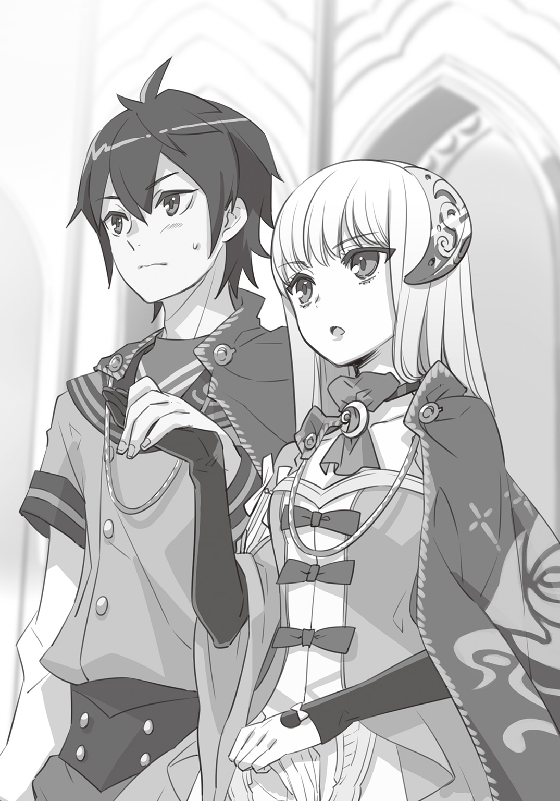
「そして、〝盾〟の約束を交わす相手としてこのシオンを選びました」
この手に自分の手のひらを重ねてしまって、いいのだろうか。
そんな風に迷っている俺の心を、エヴァレットは見透かしていた。
エヴァレットの手がぐっと伸びてきて、俺たちは他の候補生と同じように手を繫いだ。
「あなたは名前を言うだけでいい」
俺にしか聞こえないほどの小さな声だった。
「――シオン。シオン・マートレットです」
今まで聞こえてきたどのざわめきとも違う声が広がってゆく。
「静粛に！」
学園長のステッキが再び床を突き、一瞬にして静寂が戻ってきた。
「このハイドランドの栄光を守るために持つべき教養と強さと美しさを忘れずに。彼女たちと同じ眼差しを持って日々の鍛錬を行いなさい」
学園長の言葉に、令嬢たちは深々と頭を下げた。その動きもまた、誰一人として乱す者はいない。
そんな彼女たちの頂点に立つのが〝青い薔薇候補生〟――エヴァレットたちだった。
７．強く、賢く、美しく――
『アンブレイカブル・ガーデン』へと足を踏み入れてからの俺の生活は、緊張と驚きの連続だった。
朝になれば支度を終えたエヴァレットと共に『アンブレイカブル・ガーデン』へ向かう馬車に乗せられた。学園に着くと、エヴァレットはすぐに〈候補生の間〉に引きこもってしまう。
俺はというと、仕方なく広い学園内をあてどなく歩いてみることにした。
何日かうろつきまわって、俺はようやくこの学園がどんな場所なのかわかってきた。
学園の西側――〈候補生の間〉がある閉鎖的な建物と外廊下は、〝青い薔薇候補生〟と呼ばれる特別な生徒だけしか立ち入ることができない決まりとなっている。『候補生棟』と皆が呼ぶこの西側の建物には、〈候補生の間〉以外にも多くの部屋があるようだったが、その全貌は未だわからない。
東側は、『教室棟』と呼ばれ、外廊下沿いには大小いくつもの教室が連なっていた。窓からは令嬢たちが授業を受ける姿が見受けられる。どの教室も階段状になっていて、長机が並び教師の目が全体に行き届く造りだった。
「......ねえ、あの方。確かシオンというお名前でしたわよね」
「まあ、エヴァレット様の〝盾〟ですのよ。きちんとお呼びしないと！」
「そ、そうよね。シオン様って......でもお呼びできないわ！ だってあの方......本当に男の人みたいなんですもの！」
俺の行く先々、そこかしこから同じような囁きが聞こえてきた。いっそこちらから話しかけてみようかと思っても、俺が近づくと令嬢たちは足早に立ち去ってゆく。
（あの子たちとは仲良くなれそう......もないか）
そして夕刻になるとまた屋敷に帰り、今度は執事たちから食事の作法や美しく歩く所作等をこと細かく指導され、気を失ったように眠り、また朝を迎え――そんな毎日が繰り返されていた。
カーン、と乾いた鐘の音が鳴る。
これは俺が通っていた街の学校と同じもので、授業の始まりを伝える音だった。
令嬢たちは年齢順にそれぞれの部屋に分かれ授業を受けている。そっと様子を覗いてみると、授業内容は歴史から天文学や数学に至るまで、どれも俺が今まで習ったものより高い水準だった。
（俺も授業を受けてみたいけど、勝手に入ったら怒られるだろうな）
もっと窓ガラスの近くに立ったら、中の声が聞こえるだろうか。
もちろん、教室内にいる令嬢たちや先生に気づかれたら大騒ぎになるだろうから、そっと身を潜めて近づかなければならない。俺が忍び足で数歩進んだ時......。
「そのような仕草、淑女のとるべき姿ではありませんわっ！」
「わ、ご、ごめんなさいっ」
「あはははは、驚いた？」
思いきり後ろにひっくり返った俺の顔を、ティーダが覗きこんでいる。
「今のはエミリアの真似。なかなか上手だろ？」
「びっくりしてそれどころじゃなかったよ」
はっと振り返ると、窓ガラスの向こうから令嬢たちがこちらを見ていた。
「おっと、授業の邪魔なんかしたら本当にエミリアが飛んでくるな。ほら、あんたも立って」
ティーダに腕を引っ張られ、俺はその場を後にした。
＊＊＊
ティーダと共に辿りついたのは、教室棟の一番奥のほうにある、半円状の小さな中庭だった。そこにはこぢんまりとした噴水があり、その先には大きな扉が二つ並んでいた。
「この噴水にさ、よく小鳥が来るんだ。だから皆、談話室の前の中庭のこと『小鳥の庭』って呼んでるんだ。あたしもそういうのを眺めるのが好きでよくここに来るよ。で、右の扉は音楽室。今は授業で使われてないから静かなんだ」
「音楽室？ そんなのもあるんだ」
ティーダが音楽室の扉を開けて中を見せてくれた。
「そうだよ、ほら......他と違ってがらんとしていて、でっかいピアノがあるだろう？ ここはダンスの稽古で使うんだ」
「すごいな、こんな高価そうなピアノ見たことないよ」
「レッスンをしている時に見に来ると良いよ。まあ一息つこう」
ティーダは音楽室の隣にある部屋へと足を踏み入れた。広さは音楽室と同じくらいだが、こちらはソファや本棚、低いテーブルが並んでいる。
「で、ここが談話室」
「ここ、ちょっと〈候補生の間〉に雰囲気が似てるな。談話室って何する場所なんだ？」
「皆が息抜きするための場所だよ。まあ、だから〈候補生の間〉とか、自分の部屋にいるみたいにくつろげるような作りになってるんだろうね」
自分の部屋......か。
何十人もゆったり座れそうな広間に、小鳥や蔦を象った飾りや、真っ白な大理石のテーブル、そしてソファが並ぶ。目の前にある中庭からは野ばらの香りがうっすらと漂ってくる。
夢の中ですら見たことがないこの絢爛な空間が、令嬢たちにとっては自分の家のように感じられるらしい。いくらエヴァレットのそばにいても、俺にはまだ実感がわかない。
「なあ、ティーダ。候補生に選ばれたら、皆と一緒に授業を受けなくていいのか？」
「そうだよ。あたしたちはもう全部終えたんだ。リリィなんてとんでもなく早いんだぞ？ 普通は六年かかるところを三年でマスターしたからな。まあダンスはとんでもなく苦手なようだけど」
「ダンスまであるんだ」
「そう。リリィは【暗殺伎】の適応性が高かったから、大目に見てもらえたんだよ」
「......あんさつ、ぎ？」
「あんたは何が得意なんだ？ あのエヴァレットに〝盾〟の約束を交わされるなんてよっぽどすごいんだろ。その話も案内がてら聞こうと思ってさ」
ティーダがぐいっと距離を縮めてきた。その目はやけにきらきらしている。
（あんさつ......暗殺......だよな。確かにエヴァレットの家は暗殺公って呼ばれてるらしいけど）
「あたしの家はさ、元々異国で狩りを生業にしていた一族だったんだ。大昔に海を渡ってハイドランドに来た後、王様を守って騎士にしてもらったらしい。だからあたしも兄たちも皆、弓が一番得意」
「そ、そうなんだ......俺は......」
ティーダは期待に満ちた目で俺をまっすぐ見つめていた。
（なんだよ暗殺って、そんなの俺にできるわけないだろ）
汗の滲み出てきた手を後ろに回し、そっとシャツで拭う。その時、指先にポーチの留め金が当たった。
（――俺にできるのはこれしかないよな）
俺はポーチから銀貨を取り出し、握りしめた。
「ティーダ、これを見て」
ティーダの目の前で右の手のひらを開き、銀貨を見せる。再び手を握り目の前で腕を交差させ、素早く左手に銀貨を移動する。そんな動きを数回繰り返した後、俺は空っぽになった両手をティーダに見せた。
「......消えた？」
俺はさっと手を伸ばし、ティーダの耳元で指を鳴らした。
驚くティーダの前で指を開くと......そこには消えたはずの銀貨が転がっている。
「これは、どこから出てきたんだ？」
基本的な奇術の一つだったが、ティーダは目を丸くして感心していた。
「あたしの知らないものだ。あんたの伎、面白いね」
「えっと......これは練習みたいな動きなんだ」
「なるほど。あんたのやつは全部見せちゃいけないものなんだね」
「......ごめん」
なんだか残念そうに笑うティーダに、少し心が痛んでしまった。
「なあティーダ、ここにいる女の子たちは皆、その【暗殺伎】ってやつができるのか？」
「それは――......」
と、答えようとしていたティーダの顔色が突然変わった。ティーダは素早く振り返り、その手の中で鈍く光っていた物を勢いよく投げつけた。
「――っ！」
風を切る音。続いて何かを弾く甲高い金属音が数十歩先の所で響く。全てはほんの数秒の出来事だった。
ティーダの視線の先に、レイピアを携えたロゼが立っていた。
「ロゼ!? 怪我はなかった？ 急に殺気を感じたから......何かあったの？」
「ごめんない......あの......さっきまで剣のお稽古をしていたからかも」
ロゼの足元には、ティーダの投げたひし形の小型ナイフが突き刺さっていた。
「だめですね私、その時の気持ちがまだ残っていて......」
「あたしこそ、悪かったよ！ あんたが上手に避けてくれて良かった」
俺には見えなかったが、ロゼはあのナイフをレイピアで薙ぎ払ったというわけか。
何気なく話している二人だったけれど、俺の背筋にはさっと悪寒が走っていた。
「それでですね、あの......シオンさん」
「えっ、お、俺？」
突然名前を呼ばれて、思わず声が裏返ってしまう。
「私、シオンさんを捜していましたの......エミリアがお伝えしたいことがあるんですって......」
＊＊＊
ロゼの後をついて、俺は再び教室が並ぶ外廊下を歩いていた。
講義中の先生の声が漏れ聞こえてくる。先を歩いていたロゼは、壁に剣や防具が掛けられた教室の前で足を止めた。
「この大教室の中です......まだ授業中ですから、お静かになさってくださいね」
ロゼにそう促され、できる限り音を立てないように室内に入ると――
「はっ！ やっ！」
「......はっ!!」
令嬢たちの真剣な息遣いと、硬質な金属音が耳に飛び込んできた。
（剣を持っているのに、皆、いつものドレスで戦っている――）
体に防護するものを何一つ着けず、普段のままの姿で戦うことを、『アンブレイカブル・ガーデン』の令嬢たちは求められているのだ。
大教室は他の教室より二回りほど広く、窓の代わりに床から天井まで届く巨大な鏡がはめこまれている。その鏡に全身を映しこみ、十数人の令嬢が磨き上げられた床の上で軽快なステップを踏んでいた。
スカートが円状に丸く翻り、そこらじゅうで花が咲いているように見えた。だが令嬢たちが手にしているのは細い剣だ。
誰もがまるでダンスをするような身のこなしで、剣先を交えている。
そんな令嬢たちの様子を教室の端で見つめている背の高い先生も、恐ろしい気迫を持つ女性だった。
（女の子がこんなにも激しく剣の稽古をしているなんて......すごい）
街では絶対見ない光景だった。男の俺さえこんなに本格的な武芸の稽古などしたことがない。
そしてエミリアは、剣を振るう令嬢たちの中でもひときわ目立っていた。
「さあ、どうぞいらして」
金の髪をなびかせながら、エミリアはしなやかな身のこなしで幾人もの生徒の相手をしている。そして誰一人としてエミリアに近づけなかった。
「エミリア、誰にも負けないんだな」
隣にいたロゼが、はっとこちらを見てから小さく頷いた。
まるで自分が褒められたみたいに、はにかんでいる。
「やっぱり〝盾〟の約束を交わすだけあって、ロゼはエミリアと一番仲良いんだな」
「そ、そんなことは......エミリアはどんな方にも優しく親切ですから......あの」
ロゼは話題を変えたかったのか、珍しく自分から口を開いた。
「シオンさんはどうなのですか。エヴァレットさんとは小さい頃からご一緒に過ごされたりしたのですか？」
「えっ......!?」
予想外な質問だった。おまけに下手に答えられない内容だ。
「〝盾〟を『アンブレイカブル・ガーデン』以外の方から選ぶことは稀にあると聞きました。そういう時は大概、そのお家の慣習であることが多いと......」
「な、なるほどね。うん、まあ、そんな感じ」
これ以上詳しく聞かれたらどうしよう。
動揺する俺を救うように、タイミングよく鐘が鳴った。
「本日の稽古はこれまでです――」
先生の号令に、全員が姿勢を正し一礼した。
「ロゼ！ シオンを呼んで来てくれたのね」
あんなに激しい稽古をした後とは思えないほど、エミリアは涼しい顔で近づいてくる。
「わたくし、エヴァレットからお話を伺ってからずっと考えていましたの」
「何の......話だったっけ？」
俺に関する無茶な話が多すぎて、一瞬混乱してしまう。あるいは俺の知らないうちにまた新たな設定をエヴァレットが語ったのだろうか――。
「ですから、あなたがその完全な男装の術を習得する代わりに、記憶を失われた件です」
「あっ！ それね！」
「エヴァレットと〝盾〟の約束を交わすためにそのような大きな犠牲を払われるとは......わたくし心から感動しましたわ、シオン。あなたは素晴らしい人ね」
「う......うう......ありがとう」
と、しか言えなかった。
心の底から、本気で、エミリアはエヴァレットの話を信じている。
ほんの少し潤んだ瞳で俺をまっすぐ見つめ、エミリアは俺の両手をぎゅっと握りしめた。
「ですからわたくし、少しでもお力になれたらと思いましたの」
「......えっ？」
＊＊＊
エミリアとロゼと一緒に、俺は再び談話室へと戻って来た。
さっきまでそこにいたはずのティーダは、別の場所へと移動したのか姿が見えない。理由は、なんとなく察しがついた。
「エミリア様......何をなさっているのかしら......？」
「横にいらっしゃるのはエヴァレット様の〝盾〟に選ばれたお方ですよね」
「本当に男の方にしか見えないように振る舞われるの、感心いたしますわ」
談話室には俺たち以外にも、授業を終えた令嬢たちがたくさん集まっていた。
少し離れたソファやテーブルを囲む令嬢たちのひそひそ声が、あちこちから聞こえる。誰より目立つエミリアと、明らかにここのところ噂の的にされている俺が並んで座っているのだから、当たり前だ。
（......はあ。気にしないでいようって思ってもこれは無理だな）
俺のため息など気にせず、エミリアはにこにこと微笑んでいた。
「まずはお茶をいただきましょうか」
エミリアがテーブルの上に置かれた小さなベルを鳴らすと、シンプルな黒いドレスを着た女の子が現れた。彼女はどうやらメイドのような立場の者らしい。エミリアの用件を耳にすると一礼をして下がっていった。
「『アンブレイカブル・ガーデン』では基本的に侍女の同伴が許可されていませんから、身の回りのことを自分でしなければなりませんでしょう？ でも、談話室だけは別ですの」
「あの子は、エミリアの侍女？」
「いいえ。学園に仕えている侍女ですわ。談話室にいる時だけは家にいる時のようにいろいろ命じることができますのよ」
そう言っている間に侍女が戻ってきて、俺とエミリア、ロゼのぶんのお茶を淹れてくれた。
「あ、ありがと......」
カップから零れる紅茶の香りは、甘やかな林檎のようだった。
「全部お忘れになっているのでしょう？」
「な、な、何について!?」
「〝青い薔薇〟のことですわ。このハイドランドの女王陛下をお守りする誇り高き役目について、わたくしにできる限り、お伝えしたく思いますの」
エミリアは力強く頷いたあと、テーブルの上に一冊の本を置いた。
（これは......とんでもなく嫌な予感がするぞ）
その本は、どん、と音を立てるほど分厚かったのだ――。
＊＊＊
「......というわけで、百年前よりこの国に新しい女王制度が生まれましたの。同時に女王を補佐する任務につく特別な近侍として〝青い薔薇〟というお役目もまた必要とされたのです。おわかりになって？」
「う、うん......だいたいは」
俺がそう言うと、エミリアは満足げに分厚い本を閉じた。
エミリアが言うには――今から百年程前から始まった大暗殺時代、長い戦争で国力が衰えたところを他国に狙われて起こった暗殺事件以降、王家を守るために一人の王妃が立ち上がり、それまでの慣習を捨て女王が君主となる新たな女王制度を作ったらしい。
ただその制度には国民に知らされていない部分があった。それは、女王自身が暗殺者となり、神聖なる王の血に仇なす者を排除し、争いが起これば兵士たちを鼓舞するために戦場に立つことすら厭わない立場となったこと。そして決して裏切らない従者〝青い薔薇〟を育てる女王直属の教育機関『アンブレイカブル・ガーデン』を築き上げたことだった。
（ここにいる女の子たちは、そのために集められてるってわけか......）
『アンブレイカブル・ガーデン』で【暗殺伎】を会得する才能を持つと判断された令嬢だけが、〝青い薔薇候補生〟となる。
そしてこの新たな女王制度で最も重要とされたのが、次期女王の選出方法だった。女王は必要とあらば、枢密院や上位貴族たちの意向を汲まずに次期女王を独断で指名する権限を持つ。
身分や家柄、爵位に関係なく、女王が未来を託すに相応しい令嬢を、次期女王としてこの『アンブレイカブル・ガーデン』の〝青い薔薇候補生〟の中から選ぶのだ。
「......候補生になれるって、すごいことなんだな」
俺はハイドランドに伝わり続けるこの制度に、ため息しかでなかった。
「ええ。十歳になった貴族の令嬢は、特別な事情がない限り『アンブレイカブル・ガーデン』に入りますの。最初は皆、同じように学びますけれど、優れた成績を残した生徒だけが特別な教育を受けられますのよ」
「【暗殺伎】ってやつだよな。それって一体どんな......」
そう言いかけた俺を、エミリアがきょとんとした顔で見返した。
（そうか、俺が【暗殺伎】のことを何も知らないってのもおかしな話になるよな......そこまで記憶を失ってるって思ってくれるだろうか）
「あ、えっと......ごめん、こんな当たり前のこと聞いてさ......」
「いいえ。そんな風に仰らないで。シオン、あなたのこともお伺いしてもよろしくて？ 記憶はどこまで戻っているのかしら」
「そ、それは――その、俺が、エヴァレットの〝盾〟として選ばれたって話を聞いた時、かな」
エミリアは俺のその言葉に驚くと、今度はやや眉を寄せて悲し気な目になった。
「そうですの......ではこのお話をして何を思い出しても、ショックは受けないでくださいね。きっとあなたもその手で乗り越えてらしたことでしょうから」
そうしてエミリアは、【暗殺伎】について語ってくれた。
「【暗殺伎】は女王の勅命任務のみに使用できる、その名の通り、標的の命を密かに奪うための伎ですわ。剣や銃を使う術もあれば、薬や人の心を操るものもあります。わたくしたちはその伎を習得する能力があると認められた日から、候補生棟に移りひたすら伎を磨きますの」
「〈候補生の間〉って、選ばれた子たちだけが【暗殺伎】を練習する場所だったんだ」
「一年以上かけて伎を習得する間に、わたくしたちは自分と〝盾〟の約束をする相手を選びますのよ。でもわたくしは......最初から決めていましたわ」
エミリアがロゼのほうに目をやる。ロゼもまた同じタイミングで微笑みながら頷いた。
「シオンさんと同じように、私も変わった......候補生なんです。だって、本当は【暗殺伎】を習得する能力なんてないって判断されていましたから。それなのに、エミリアが私には必ず候補生に見合う才能があると......言ってくれたんです」
「ええ、そしてわたくしの目に間違いはありませんでしたわ。ロゼはその後立派に【暗殺伎】を習得しましたもの」
「その【暗殺伎】ってやつを習得したら、候補生になれるのか？」
「はい。それでやっと候補生の証たる青いマントを戴き、〝盾〟の相手を宣言するのです......エミリアは初めから私をと、決めてくれていました......」
はにかむロゼの言葉は、俺の胸の奥をちくちくと貫いた。
どうして、一見普通そうに見える彼女が、エミリアと〝盾〟の約束を交わしたのか。
〝盾〟の役割も、エミリアは話してくれた。それは女王と国に仕え、どうしようもない危機に襲われた時――互いを救いあい、もしもの時は命を絶つことを託す相手なのだという。
口にしてはならない秘密を守り通し、自分の身すら顧みず危険な役割をこなすために、互いの心臓に剣を突きたてる約束を交わした、対等なる関係。
女王の〝青い薔薇〟は常に死と隣り合わせの毎日を送らなければならないらしい。
（名誉あることだってのはわかる。だけど自分の命を奪ってもいい相手を、自分で選ぶなんて）
「どうされました？ 少し、顔色が悪いようですけど......」
「えっ、な、なんでもない。大丈夫」
ロゼが急に顔を覗きこんできたので、俺は思わず目を逸らしてしまった。
「さて。お話は終わりましたけど、他に何かお困りなことはございませんこと？」
「こ、困ってること......？ そうだな......うーん」
強いていえば、この空気だ。どこか遠巻きにされ、噂の種にされている感じ。これがずっとこそばゆくて仕方なかった。
「あ。わたくし、わかりましたかも。ふふ、そうですわよね。ロゼもずいぶん長い間、こんな感じだったことを思い出しましたわ」
ロゼがぱっと顔を赤くする。
なんだろうと思っていると、エミリアが立ち上がった。
「皆さん、どうぞこちらにいらして。楽しくお話しいたしましょう？」
エミリアの声に、談話室の空気がぱあっと華やぎ出した。
「本当はね、皆、お話ししてみたいだけなのですわ」
遠巻きにこちらを見ていた子も、ひそひそと呟きあっていた子たちも、揃っていそいそと俺たちのテーブルの周りに集まり始めた。
「あ、あの、エミリア様......刺繡のことお伺いしていい？」
「もちろんよ。今お持ちですの？」
「やだ、私だってお伺いしたいことたくさんあるの！ ま、待っていてくださいますか？」
「ええ、もちろん。どんなものをお作りになったのか楽しみですわ」
やはりエミリアは下級生から大人気のようだ。あっという間に囲まれてしまった。
「ふふ、エミリアは刺繡がとても得意ですから。本当にきれいなステッチなんです」
「刺繡の授業もあるんだ。ロゼは得意なの？」
「わ、私ですか？ 普通だと思います......それに刺繡は令嬢のたしなみの一つですから」
「〝青い薔薇〟になるためだけの学校じゃないんだな」
「......候補生になれるのは一握りですから。それ以外の子は、生きるうえでの強さと賢さを学び、家を守っていかないといけないんです」
多分だけど、ロゼは、俺に近い普通さを持っている。
もしもエミリアに選ばれず、候補生になれなかったら、ロゼは悲しんだのか、それともほっとしたのかどっちなんだろう。俺だったらほっとするかもしれない。
嬉しそうにエミリアを見つめるロゼの横顔を覗くと、そんな思いが湧き上がってきた。
「......あ。ほら、シオンさん」
ロゼが急に緊張した面持ちで、俺の後ろを指さした。
なんだろうと振り返ってみると――
「シオン様、私たちお傍に座ってもよろしくて？」
「お話をお伺いしたいのです」
「い、今は男の格好をされていますけど、それまではやっぱり私たちと同じような感じでしたの？ 刺繡や乗馬はされまして？」
（う、い、今の全部、俺に対する質問だよな!?）
エミリアが言っていた『お話ししてみたいだけ』ってこういうことか。
令嬢たちはティーカップを手に俺を囲み、きらきらした目でこっちを見ている。
そして何も答えないうちに、次から次へと質問を繰り出してきた。
（やべ、女の子っぽい感じってこうか？）
「まあ、そ、そんな風に急に話されると、困りますの......？」
いぶかしげな視線に、絶対に違うということだけはわかった。
「シオン様、だめです！ 私たちに遠慮なさらずに気を引き締めて男装なさってくださいな」
「そうですわ、本当の男の方みたいなお言葉をお使いになって！」
「え、えーと......」
その時、俺の襟首を後ろからガシリと摑む手があった。
周りの令嬢たちの凍りついたような笑顔を見ると、その持ち主はだいたい想像できる。
「シオン、こちらへ」
やっぱりエヴァレットだった。無表情に見えるが俺は見逃さなかった。右の眉がわずかに上がっている。間違いなく、怒っている。
エヴァレットは俺を引きずるようにして、談話室から西側の外廊下へと連れ出した。
そして辺りに人がいないと確認したとたん――
「何のつもり？」
ダン、と俺の体すれすれに腕を突き出し、壁に拳を叩きつけた。
「お、怒ってる......？」
「いいえ、先ほどの行動について質問しているの」
「さっきのは......あの、俺の中身が本当は女の子だっていう感じを出してみたくて......」
「あなたのやっているのは男装。男になりきっている設定です。女であったという記憶すら失っている完璧な男装。あくまで男らしく、できたら立ち居振る舞いは美しく。わかりますか？」
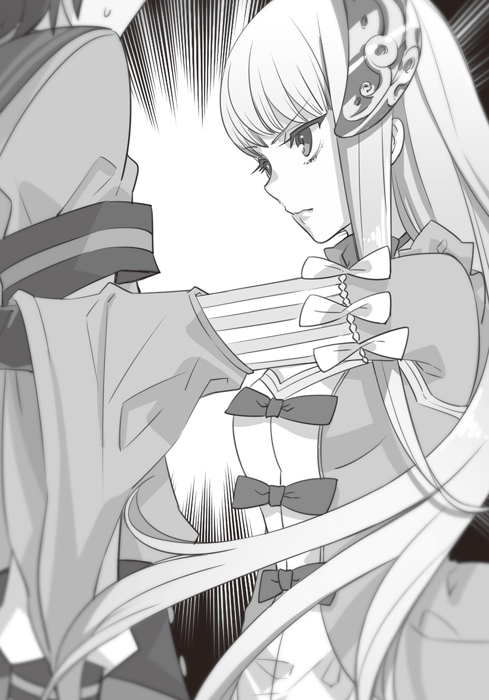
立て続けに溢れる言葉に、俺はただ頷き続けた。
「ますの、って何ですか。あれがあなたの目に映る令嬢の姿というのなら、それは愚弄と同じ意味だわ」
そう言い切った後、エヴァレットの唇が真一文字に結ばれる。
（なんでちょっとだけ、むっとしてるんだろう......）
「わたしの顔色を窺う前に、やるべきことをやって」
「ご、ごめん......要するに、無理するなってこと？」
「無理してください、男とばれないように。ばれたら、わたしがあなたを殺します」
冗談ではなく、エヴァレットは本気だ。
「決してわたしの邪魔をしないで」
ぶんぶんと、俺は思いっきり首を縦に振った。
それを見てやっと納得したのか、エヴァレットはくるりと踵を返し外廊下を歩き始めた。向かう先は談話室でも教室でもなく、おそらく〈候補生の間〉だろう。
「せっかくエミリアにいろいろ教えてもらったけど......」
『アンブレイカブル・ガーデン』のこと、〝青い薔薇〟とは何なのかということ。
何も知らない俺にエミリアたちはいろいろ教えてくれたが、そのぶん他の生徒との接触も増えた。それは正体がバレてしまう可能性も高くなったということだ。
「迷惑だよな」
エヴァレットの言う通り、〈候補生の間〉に閉じこもっているのが一番良いのかもしれない。
俺はため息をつきながら、もう見えないエヴァレットの後を追った。
そんな沈んだ気持ちのせいで、俺はもうひとつの足音に気づけなかった。
８．それぞれの思い
「どうしたの、エミリア」
ロゼは小さな変化に気づいていた。
ここ数日、エミリアの持つ太陽のような明るさに陰りがあった。
もちろん誰にだって気が塞ぐ日があることはロゼもわかっていた。どんな日も笑顔を絶やさないエミリアが、教室の片隅でぼんやりと窓の外を見ている時があってもおかしくはない。
それでも――ロゼは奇妙な胸騒ぎを感じていた。
「体の調子が良くないように見えるの......」
「えっ......そ、そうかしら？ 大丈夫、どこも悪くはないわ」
きゅっと口角を上げて笑みを浮かべるエミリアを見ても、ロゼの心は晴れない。
「エミリアは候補生になってからも、皆と一緒に稽古しているから疲れたのかも......ねえ、この後は〈候補生の間〉でお休みしてはどう？」
「でも――」
エミリアの声に含まれている戸惑いをロゼは聞き逃さなかった。
「何か、あったのかな。私でよければ何でも話を聞くから......」
この小さな違和感が勘違いであってほしいと、ロゼは心の底から願った。
「ふふ、本当にロゼは鋭い人ね。何もない、なんて噓は言えないわ」
エミリアの微笑みに、寂しげな影が差し込んだ。
「わたくし、今まで自分の行いを恥じたり、間違いだったと悔いたことはありませんわ。これからもきっとそう......でも」
ロゼは自分の心がかすかに軋む音を聞いた。
「正しいと思ってやっていたことが誰かの迷惑になってしまうなんて......思ってもみなかったの」
――一体、誰が。誰がエミリアの心を傷つけているの？
ロゼはその言葉を必死に呑み込んだ。
城壁の向こうでは、ちょうど夕陽が山の端へと吸い込まれようとしていた。
夕暮れの色に染まったエミリアの横顔を、ロゼはただじっと見つめることしかできなかった。
＊＊＊
〈候補生の間〉にある大量の書物。
エヴァレットは毎日毎日、ここに来てはそれらを読み漁っていた。
そして俺も、エヴァレットに正体がばれないようにしろと脅されて以来、学園内の探索を止めていた。
かといって俺にはやることもない。
あれから数日、俺は〈候補生の間〉で何をするわけでもない時間を過ごしている。
せめてもうちょっと〝青い薔薇〟やこの国の歴史について勉強しようと、本棚を探してみても――
「うっ......く、これも......また読めないじゃないか。こっちはどうだ！ ああああ、ダメだ」
どれもこれも、俺の手に負える内容ではなかった。
「はあ......やっぱりここの本も俺には無理なのか」
「シオン。それは上から三段目の右から十二冊目。秩序を乱さないで」
「......はい」
――男とばれないように。ばれたら、わたしがあなたを殺します。
あの時の本気の声。脅しというよりも宣言だった。
今、数歩先で俯き加減に本を読むエヴァレットの横顔からは想像もつかない。
（本当に、黙っているところを見てたら......真面目なお嬢さんって感じなんだよな。気が強そうではあるけど）
「......シオン」
「は、はいっ!?」
「人の顔をじろじろ見るのは失礼よ。もっと失礼なのは勝手な印象を抱くこと。覚えておきなさい」
「......わかったよ。って！ 今なんで俺の考えてることがわかったんだ？」
「人の感情は眉の角度や視線の動きを見たら、だいたいわかるわ」
「まあ......確かにそうだけどさ」
「おまけにあなたはわかりやすい」
「そうなの!? 困ったな......」
「困った事態を引き起こさないように、気をつけて頂戴」
（だいたい困る原因は、エヴァレットが作ったんだけどな）
と、考えているのもきっとバレる。そう思って顔を背けた時にはっと気づいた。
「なあ！ 今気づいたんだけどさ、エヴァレットって他人が考えてることにすぐ気づけるんだよな？」
「――だから、何」
「誰かが俺の正体に気づきそうになったら、すぐわかるってことだよな。だったらエヴァレットと一緒ならどこ行っても大丈夫じゃないか？」
我ながら名案じゃないか、と思わず拳を握った。しかしそんな俺とは正反対に、エヴァレットは眉をゆっくりと斜めに上げ――手にしていた本を勢いよく閉じた。
「......て、あれ？」
「どこに行こうと言うの」
「その......この前エミリアに俺、〝青い薔薇〟とか〝盾〟のことを教えてもらったんだ。でもまだ足りないと思う」
俺をまっすぐ見据えているエヴァレットの瞳は、冬の夜の月より冷たく感じられた。
「俺は教室に入れないからさ......せめて談話室でいろんな話を聞きたかったんだ。そうしたら、俺だってエヴァレットをちょっと理解できるかもしれないだろ？」
「わかりました」
エヴァレットがソファから立ち上がり、扉のほうへと歩み寄る。床を踏みつけるヒールの音がやけに高く響き渡った。
「好きなようにすればいい」
「いいのか？」
自ら重い扉を押し開けて、エヴァレットが外を指さした。
「どうぞ」
「エヴァレットも一緒に行く......んだよな」
その瞬間、まるで仕掛け舞台が一瞬で様相を変えるかのように、エヴァレットの周りの空気が一変した。
自分の心を他人が――俺が、理解したつもりになる。
それはエヴァレットに、耐えがたい屈辱を感じさせてしまったのかもしれない。
「あなた一人です。どうぞご自由に」
「え、ちょ、ちょっと待ってくれよ！ それじゃ意味ないじゃないか......！」
「たとえ一緒に行ったとしても、意味はありません」
エヴァレットは俺を無理矢理ぐいぐいと扉の外に追い出した。
「それからもう一つ。理解などしなくてかまいません......いえ、違うわね」
はらりと肩に流れ落ちる銀の髪を払いのけ、エヴァレットは言った。
「わたしを理解するなんて、できない」
目の前で扉が閉められる。
俺はたった一人、外廊下に放り出されてしまった。
＊＊＊
「なんであんなに怒ったんだ、エヴァレット」
〈候補生の間〉から追い出されてから、俺は久々に学園内を歩き回った。
授業中の教室にはやっぱり入れないし、大庭園を抜けて談話室の方へと向かう。今の時間だとさすがに人はいないだろうと思っていたけれど――
「......珍しいな」
談話室の前の小鳥の庭。そこに設置された噴水の縁にエミリアが腰かけていた。
あたりを見回してみたが、いつも一緒にいるロゼや他の令嬢たちの姿はない。エミリアがひとり考え事をしているようだった。
噴水の中を覗きこむようにしているせいか、俺がいることには気づいていない。
「ロゼ、わたくしを捜しに来てくれたの？」
（えっ!? 違うん......だけど......）
エミリアは顔を上げず、俺の気配をロゼだと思い込んで話し続けた。
「この前、何でも話してって言っていたでしょう？」
（ごめん、言ってない。俺は言ってない！ どうしよう、これ今すぐ違うって言うべきか!?）
「わたくし、もうここ何日も答えがわからない問題がありますの。こんなこと初めてですわ」
（ああああ、タイミング逃した......話始まっちゃったよ......どうしようほんと）
「ある方に迷惑をかけてしまったって、わかったとするでしょう？ たとえ自分が間違いを犯していなくとも、やはりそのままにしてしまってはいけませんわ。きちんと相手と向き合い心を分かち合うべきだと、わたくしは思うの」
（一体、誰と誰の話だ......？ まあでもあれだけの数の令嬢たちをまとめなきゃいけないんだから、悩みはあるだろうな）
深いため息とともに、エミリアは指先を水中に浸した。ゆっくりと円状の波紋が広がっていった。
（よし。今だ。話が途切れたこのタイミングだ！ 今しかない！）
「でも、シオンにそのことを言おうとすると声が出なくなってしまいますの」
「――っ!?」
「〈候補生の間〉にいるのもわかっています。朝のご挨拶ならなんとかできますわ。でも、でもお気持ちを伺おうとすると、足が止まって、指先が冷たくなって......喉にキャンディーが詰まったように苦しくなりますの」
（あ......ダメだ、これは、完全に俺が聞いてはいけない話だ。けど、これ間違って聞いちゃったじゃないか。今すぐ全速力で逃げろ、俺）
そっと、俺はその場から離れようとした。
ロゼがいると思って、独り言を呟いてしまったわ――とエミリアが思ってくれれば。
だが、現実はそんなに甘くもなく。
エミリアは顔を上げ、親友ロゼのほうを向いた......つもりだった。
「ねえ、どうしてシオンはわたくしのことを迷惑だなんて言ったのかしら？」
「いや言ってないし！ 俺、そんなこと言った!?」
「......シ、オン？」
しまった、と呟きそうになった。
だがそれより早く、慌てて立ち上がったエミリアの体が傾いた。
俺は考えるよりも先に飛び出し、エミリアの手を引こうとしたが――
「きゃあっ」
結局二人して、噴水の中に突っ込む羽目になってしまった。
「ど、どうして、あなたがいらっしゃるの!?」
「もっと早く声かけようと思ってたんだけど、タイミング逃した」
「どうして、そんな、ロゼだと思ってわたくし――どこまで聞いてしまったの......」
「そ、それより早くここから出よう」
俺がそう言うと、エミリアもやや冷静さを取り戻して立ち上がった。
二人してずぶ濡れのまま談話室に向かうと、エミリアが奥にある小さな部屋の扉を開けた。室内にはクローゼットと鏡、衝立が置かれている。
「汗をかいたり着替えが必要になった時は、ここで済ませますのよ」
エミリアがリンリンとベルを鳴らすと、侍女たちがやって来た。
さも当たり前といった様子でエミリアが両手を上げると、侍女たちは黙々とドレスのボタンを外し始めた。
（あ、やべ、こういう時出ていくのは怪しまれるのか？ でも完璧に男のフリするなら、出ていくべきだよな）
戸惑う俺の前で、侍女の一人が困ったように俺を見ている。
どうやら俺にも、エミリアと同じポーズをしろと無言で訴えかけているようだ。
「あ......俺は、いい」
「大丈夫ですわ。ここの侍女たちには着替えを命じても問題ありませんのよ」
「や......えーっと、その。俺、この体を見られるのが恥ずかしいんだ」
俺の中にある演技力をふりしぼって、できるだけ悲しげに言ってみた。
「ま、まあ、ごめんなさい。シオン、そうでしたわね......あなたは特別な体でしたものね」
エミリアは心底申し訳なさそうな顔をしている。思惑通りだ。そう思ってもらえたら、一人で着替えると言って立ち去れる。
「いいわ。下がりなさい、わたくしの着替えの手伝いも結構よ」
エミリアがそう言ったとたん、侍女たちは素早く部屋から立ち去っていった。
「いや、エミリアはちゃんと着替えさせてもらえよ。そんなにずぶ濡れじゃ風邪ひくだろ」
「もちろん着替えますわ。さて......シオンの背丈に合うドレスはあるかしら」
「はい？ い、今なんて......言った？」
「緊急事態ですもの。男装用のお洋服の替えはお持ちなの？」
「いや......持って......ない」
「では、わたくしがドレスを着せて差し上げます。シオンがどのようなお体でも、決して驚いたりはしませんわ」
誓いを立てるように強く頷いたエミリアが、早速手を伸ばしてきた。
「い、いいいい！ こんなの、そのへん歩いてたらすぐ乾く！」
「いけません。もうすぐ日も傾くでしょう？ それにあなたはエヴァレットの〝盾〟なんですから、わたくしのせいで体を壊されては困ります！」
「大丈夫だって、これくらいで風邪なんてひかないから――うわっ」
逃げ回ろうとする俺の肩にぶつかって、衝立がガタンと床に倒れてしまった。
その音に驚いたのか、エミリアはその場で固まり立ち尽くしている。
「......エミリア？」
「やっぱりそういうことですの？ わたくしに対して仰った迷惑だというお言葉の意味は......」
「いやいやいや！ そうだ、それ！ さっきも言ってたけど、俺、エミリアに迷惑だなんて言ってないぞ？」
「ええ、そうです」
ぽたり、と滴が落ちる音がした。
俺は最初、エミリアの髪を濡らしていた水滴が肩に落ちたんだと思った。
でも、違う。エミリアの目から、大きな涙の粒が零れ落ちていたのだ。
「わたくしは、立ち聞きしてしまったのです。シオンがそう呟いてらっしゃったのを......卑怯者ですわ！」
「ええええ!? ちょっと待ってくれ、それは誤解だ。だって俺、エミリアを迷惑だなんて少しも思ってないし！」
「......そう、ですの？」
「だってさ、俺にいろいろ教えてくれただろ？ あれだって嬉しかったぐらいだ」
おぼろげながら、やっと俺は自分の言葉を思い出した。
迷惑だよな――と、自分自身に呟いた言葉を、エミリアは立ち聞きしてしまったのだ。
（なんだよ、そういうことか）
やっと話が繫がって、この意味のわからないやりとりに納得がいった。
「わかってもらえて良かった、じゃあ、その......俺はこのまま......」
そっと立ち去りたかった。だがエミリアがそれを許してはくれなかった。
「えっ、ちょ、ちょちょちょちょエミリア!?」
エミリアが俺の胸元に飛び込んできたのだ。
ぎゅっと腕を回され、眩しい金の髪が俺の胸に押し当てられている。
「ごめんなさい、ほんの一瞬でいいの」
張りのあるいつものエミリアの声ではない。俺の胸元に触れている額が、ひどく熱く感じられた。何もかもが、俺の知っているエミリアではなかった。
「わたくし、どうしていいかわからないんです。物語に出てくるお姫様みたいに、あなたにこうしたいって......本当は女の方だというのに」
本当は女の方――その言葉が俺の背中をひやりとさせた。
「もう二度としません。この想いもきっと熱病みたいなものでしょう。明日には冷ませますから......」
（やばい。これはやばい。だって俺、服びしょ濡れじゃないか！）
「わたくし、男の方にこんなはしたない事したことなくってよ。お父様にだってみだりに触れませんもの。でも不思議ですわ」
エミリアが顔を上げ、俺を見つめた。
「こうしてお傍にいると、本当に男の方のように思えてなりません」
（だめだ。いくらエミリアが人の話を信じやすいって言っても、もうこれは物理的にばれる）
「あの、俺はその......ちょっとこういう問題には疎くて......本当、ごめん！」
悪いと思いつつ、俺はエミリアの体を引き離した。
「きゃっ！」
俺の目に映ったのは、きらりと輝きながら飛んでいく何か、だった。
エミリアの薔薇のブローチが俺のシャツに引っかかっていたのだ。勢いよく飛んだブローチと一緒に、俺のシャツがものの見事に破れてしまった。
「わ、わたくし、あなたがどんな体をしていても、お、お、驚きませんと言いましたわ」
「う、うん。言ってた」
慌てて両手で胸元を隠しても、もう遅かった。
「......っ」
俺の体をはっきり見てしまったエミリアは、ぽかんと口を開き茫然としている。
「......うぅ」
（そうだよな、何言っていいかなんて、わからないよな！ 俺もわからないってば）
「......あ、う......」
無言に近い間をとって、エミリアはこれから歌いだすかのように息を吸った。
「ど、ど、どういうことですかーっ!!」
「あああ、これにはいろいろと事情があって」
「どうして......あ、あなたは、その体っ......！ 本当に男性だというのですか！」
「ご、ごめん！ そうなんだ、男装じゃないんだ。でもこれバレたら、俺殺される......！」
「確かに、過去ここへ侵入したという不埒な輩は、身元もわからぬほど完全に処理されて井戸に捨てられたと聞きましたわ」
「うわ、処理って何だよ......」
「わたくしの口からはお伝えしにくいですが、どういたしましょう」
「やめてくれ、本当に困る！ 俺、頑張って男装って設定通すから......誰にも言わないでくれ」
「......困りますわ」
エミリアは俺を見据えたまま、首を横に振った。
（やばい。男だってことをバラされる。エミリアは噓とか不正なんてのを一番嫌いそうだもんな。俺、これからどうなるんだ？）
ビリビリに破れたシャツ姿のまま、庭園か大聖堂に引きずり出され痛めつけられる。この大噓の代償として、きっとありとあらゆる手段で責められた後、永遠に見つからないように捨てられるのだ。もうそんな未来しか思いつかない。
（ごめん、エヴァレット。俺亡き後はまた無茶な作り話でうまいこと乗り切ってくれ）
ゆっくりと目を閉じ、覚悟を決める。
「わかった、無理は言わない。大噓ついてたのは俺なんだから......ん？」
「どうしてですの？」
ぎゅっと指先を握られる感触がして、俺は目を開けた。
「どうしてあなたは本当に男性なの？ これではわたくしのこの気持ちは――」
エミリアの指はほんのり温かく、しっかりと俺の両手を握っていた。
「初恋ということになってしまいますわ！」
「――はあ!?」
目を潤ませ、頰をピンクに染めているエミリアの気持ちがどういうものなのか、さすがにわかった。乙女だ。まごうことなき、恋に落ちた乙女の眼差しだった。
（ええええええ！ 余計にややこしくなってきたぞ）
「でもこの気持ち、秘めなければなりませんよね。だってわたくしたちは〝青い薔薇候補生〟ですもの......心揺れている場合ではありませんわ」
「う、うんうん、そうだよ！ その気持ち、ほんっとに秘密にしておいて！」
「わかりました。わたくしもそうあるべきだと、自身にきつく言い聞かせますわ」
「あ、あと！ 俺の正体のこともできれば秘密に......じゃないと、〝盾〟でいられなくなるんだ」
「ええ。秘密......わたくしとあなただけの、秘密ですね」
「そういう......ことかな」
俺の言葉を聞いたとたんエミリアは息を呑み、胸元に手を添えて頷いた。
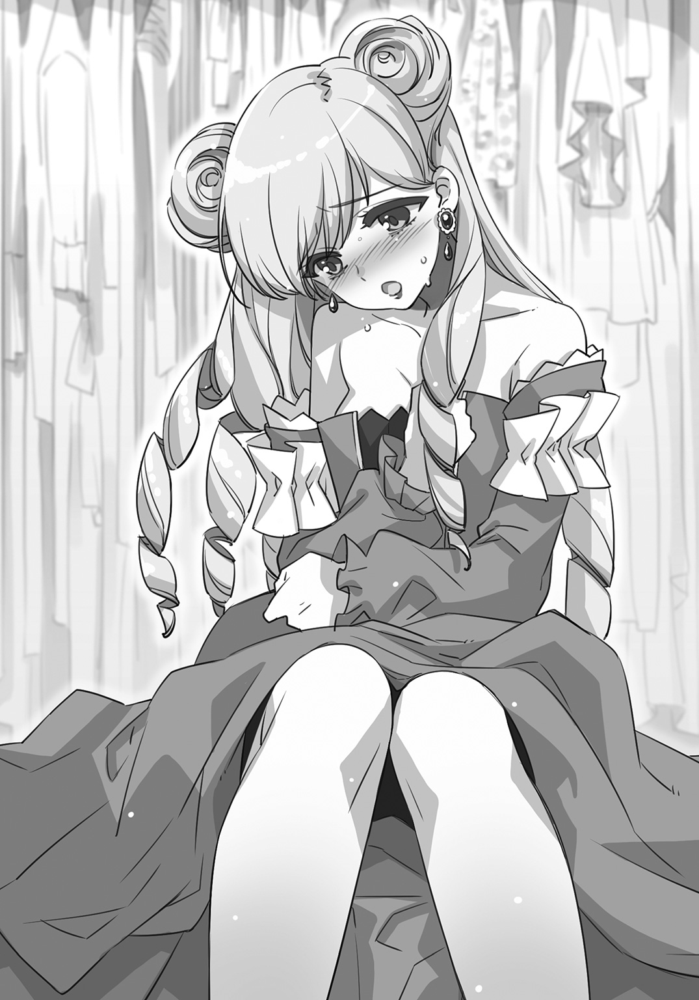
「どうしてでしょう、不思議と胸の奥が熱くなります。たとえこの世に生きる人間がシオンとわたくしだけになったとしても、この秘密、守り通しますわ。だって......わたくしだけのものなんですもの」
（やっぱり、ややこしくなってないか？）
しかし他にベストな考えなど思い浮かばない。
「俺、エミリアのこと、信じるから！」
こくんと頷いた後、エミリアは急に顔を赤らめ、クローゼットの中に手を突っ込んだ。
「い、いけませんわね。このような格好で男の方の傍にいるなんてはしたないですわ......」
「あ、ああ......うん。そうだよな」
渡された長いマントを羽織り、談話室のほうを窺う。
幸いなことに令嬢たちの姿は見当たらない。
「誰もいなさそうだし、俺、今のうちに〈候補生の間〉に戻るよ」
「ええ。わたくしも着替えたら......いつものように参ります」
気持ちを引き締めるように深呼吸したエミリアは、いつもの――令嬢たちが憧れる〝青い薔薇候補生〟の顔に戻っていた。
第３章
９．それは春を告げる陽だまりに似て
大きな噓をつきながら、令嬢たちの秘められた学園『アンブレイカブル・ガーデン』にやって来て少し経った頃。
その小さな変化は唐突にやってきた。
俺にとってだけでなく、エヴァレットにも〝青い薔薇候補生〟たちにも――いや、この学園に通う全ての令嬢たちにとって驚きの出来事だった。
いつものように俺とエヴァレットは学園に着くとまっすぐ〈候補生の間〉に足を運んだ。重い扉を開けると、珍しくティーダが一番乗りで来ていて、ソファにゆったり身を沈めている。
「おはようございます」
エヴァレットはほんの少し膝を折って優雅な挨拶をした後、本棚に近い椅子に腰かける。
「おはよう。ほんと、あんたたちって来るの早いんだね」
「確かに......朝一番乗りはいつもエミリアとロゼの二人か、俺たちかって感じだよ。ティーダが一番なのには驚いた」
「はは、だろうね。でも残念、あたしはリリィと一緒にやって来て三番目」
「じゃあやっぱり、先にエミリアたちが来てたんだ」
「そう。でもリリィは何だかいきなり鼻歌うたいだして飛び出してっちゃった。エミリアたちは学園長に呼ばれて出ていったけど」
「学園長に？」
「エミリアは候補生ってだけじゃなくて、生徒たちのまとめ役だからね。何かあるのかも」
ティーダはその先はわからないとばかりに両手をあげた。
俺がここに来てから今日まで、エミリアがわざわざ学園長に呼び出されることなど一度もなかった。
「なあ、エヴァレット。こういうのってよくあるの？」
俺がそう尋ねると、エヴァレットは面倒くさそうに俺を一瞥した。
「......具体的に話していただけますか」
「あー......つまり、エミリアが学園長に呼び出されることって、よくあるのか？ 俺が来てからは初めてだと思うんだけど」
「ありません」
「えっ？」
「エミリアが生徒たちの総代とはいえ、学園長に直接呼び出されることは稀です」
珍しくちゃんと答えてくれたエヴァレットだったけど、またすぐに本の世界へと入り込んでしまった。
稀なことが起こっている――それは俺に関することだったりするんだろうか。
昨日もその前の日も、学園内で何ら変わった出来事などなかった。『アンブレイカブル・ガーデン』の中の異物は間違いなく俺だ。
（俺、何かしたっけ......いやいつも通りだったよな）
首を傾げていると、扉が開きエミリアとロゼが戻ってきた。二人はソファにはかけず、エミリアがその場でぐるりと全員の顔を見渡した。
「皆さんにお話がありますの」
そっと俺のほうに視線をやったエミリアが、なぜか困ったように眉を寄せた。
「え、ちょっと待ってくれ、俺？」
エミリアが頷いたらどうしよう――。思わず立ち上がりそうになった時、エヴァレットが小さく咳払いをした。
「シオン、あなただけではありません。わたくしたち全員に関わることですわ」
「そっか......良かった......焦ったよ、本当」
ほっとする俺の態度もダメだったらしく、エヴァレットの厳しい一瞥が飛んでくる。俺は唇を一文字に嚙みしめて、椅子に深く座りなおした。
「この『アンブレイカブル・ガーデン』に、今日から新しい方が参りますの。お名前はジゼル・セーヴル」
「......へえ、セーヴル家ってまたずいぶん古い家の子が来たんだ。女の子がいるなんて知らなかった」
ティーダの言葉に、エミリアもロゼも頷いている。リリィは目をきらきらさせると、急にトランクの中を漁り出した。知らぬは俺ばかりというわけだ。
「なあ、古い家ってどういう意味」
「古くから王家に仕えているということ。セーヴル家はハイドランド建国当時から存在する由緒正しい家柄です」
「......って、ここにいる皆の家よりもずっと偉いってことか？」
エヴァレットは面倒くさそうにため息をつき、それ以上は答えてくれなかった。
代わりにぴょんと立ち上がったリリィが、俺の膝の上で一冊の本を開いた。
リリィはトランクから外したクマのぬいぐるみ・アルの手をつまんで、ある頁を指さした。
「アルの指さしてる......ここ！ ここ見てみて。ほらこの鳥の模様で囲まれている名前のところ！ えらいのとはちょっと違うんだ」
古びた頁に書かれた図にはいくつも名前が並んでいる。
「......家系図？」
「うん。リリィ、昔、どんな家にどんな子が生まれるのか調べるのに嵌ってたの。んーとね、セーヴル家は百五十年くらい前に王様の妹と結婚した人がいるんだね」
「そ。王家の血筋と交われるってのは、貴族の中でも一握りってわけ」
いつの間にかティーダも隣に来ていた。
「エミリアの家も、王家と婚姻していたよな」
「ええ。セーヴル家も、我がパーピュア家も誇りある血筋だと自負しておりますわ」
「あの、あの、皆さんに......お願いがあるんですよね、エミリア」
「はっ。そうでしたわ、ここからが本題ですの。本来ならば大聖堂の広間でお迎えするべきなのですが、ジゼル本人たっての希望で、自然に他の生徒たちに溶け込みたいとのこと」
珍しくエミリアが困った表情だったのは、そのせいだったのか。
ティーダとリリィも顔を見合わせ、どうしたものかと首を傾げている。
「わたくし、考えましたの。今日の午後、談話室で皆さんと一般生徒のみなさんでジゼルをお迎えして差し上げるのはいかがでしょう」
「わああ、どうしようー！ 午後なんてすぐきちゃうよお」
「リリィ。今あんたが目をキラキラさせてるのって、何か変わった子が来るのかもって思ってるからでしょ」
「だ、だってね？ この前はシオンだよ。男の子の女の子が来たんだもん。次はどんな子ってどきどきしちゃ――だめ？」
「今回は、あの、私たちと変わらない方......ですよ」
「そうなんだ......残念」
ロゼの言葉に、リリィは心底残念そうな顔をしていた。
だが俺はほっとした。ややこしい設定の奴は一人でいい。これ以上悩みの種が増えては困る。
「わたくしたちが『試練』を受けるまではまだ間がありますし、もてなして差し上げましょう」
「試練？ それって......俺たちが何かするのか？」
誰も俺のように疑問を差し挟まないようだから、候補生にとっては当たり前みたいだけれど......。
「ええ。わたくしたち候補生が、〝青い薔薇〟になるための最終試験ですわ。『試練』の詳細は女王陛下から賜りますの......そして、その試験期間のことを〝薔薇の季節〟と呼びますのよ」
（その中に俺も入っている......だろうな）
「〝薔薇の季節〟までに、ジゼルがこの『アンブレイカブル・ガーデン』に馴染むよう手伝って差し上げることも、候補生としてやるべきだと思いますの」
ぐっと拳を握るエミリアの横で、俺はエヴァレットの顔を覗き見た。
（エヴァレットって、こういうの......どう思うんだろ）
談話室に行く姿など一度も見たことがない。それどころか他の生徒たちの前に出ることもほとんどない。エヴァレットは椅子から立ち上がった。
「午後、一般生徒の方が授業を終える鐘の後ですね」
「ええ、そうね。わたくしはダンスの練習が終わり次第参りますわ。エヴァレットとシオンもご一緒にいかが？」
（一緒に誘うのか！ 俺とエヴァレットを、よりにもよってダンスに!?）
エミリアが純粋に好意で誘ってくれているのはわかる。
だが、俺はどう答えれば――
「結構です。わたし、少しやりたいことがあるので、失礼いたします」
「あ、う、うん。俺もちょっとそれに付き合わなきゃいけないんで、一緒に......っ」
「そ、そうですの？ それは残念ですわ」
俺はエヴァレットの背中を追って、〈候補生の間〉を後にした。
＊＊＊
「エヴァレット、ちょっと待って」
「......何か」
「ジゼルって子が来ることは知ってたのか？」
「いいえ。わたしも先ほどエミリアから聞いたのが初めてです」
「俺は......どうしたらいいんだ」
「どういうつもりで、そんな言葉を？」
エヴァレットはやっと足を止めてくれた。
だが俺に向けられた視線は冷たく、突き放された気持ちになった。
「あなたは勝手に、だけどわたしの邪魔にならないようにだけ気をつけて動けばいい」
「それちょっと矛盾してないか？」
「わたし、やらなければならないことがあるんです」
「そ、そこは本当なんだ......どこに向かってるんだ？」
「邪魔をしないでというのは行動だけではありません。わたしの思考の邪魔もしないで」
「......考え事、してたのか」
エヴァレットはぷいと前を向くと、足早に外廊下を進み大庭園へと向かった。
太陽が降り注ぎ、整えられた庭園の花や緑が風に吹かれ揺れている。
だがエヴァレットはそんな光景には一切目をやらず、東屋のベンチに腰かけた。
「気分変えて、今日はここで本を読むの？」
「気分など変えなくても本は読めます。それにわたし今、本など一冊も持ってきていません」
（確かにそうだな......じゃあ、何でこんな所に？）
そう聞いたらまたエヴァレットは怒るかもしれない。俺は仕方なく対面に座った。
心地よい陽射しと風が鼻先をかすめる。体を反らすと、東屋の屋根の向こうに青空が広がっていた。聞こえてくるのは風に揺れる木々のざわめきと、遠くを飛ぶ小鳥の鳴き声ぐらいだ。
（ああ、これは......昼寝したくなる気分だな）
視線を正面に向けると、エヴァレットは姿勢よく座ったまま目を閉じていた。
（あれ、エヴァレット......眠ってる？）
頰に落ちる長いまつ毛の影や、髪飾りから流れる前髪――エヴァレットの顔を正面からまっすぐ見るのは初めてだ。
（もしかして、昼寝がしたかったのか？ 皆の前で寝るのは恥ずかしいから出て来たとか）
別に〈候補生の間〉で昼寝しちゃいけないなんて決まりはない。いつだったか、ティーダがソファの上で思いっきり寝ていたこともあった。むしろ〈候補生の間〉は、令嬢らしい振る舞いから解放される場所だ。
（なのに、どうしてわざわざこんな所で寝てるのかな）
「寝ていませんけれど」
「う、うわあああああ」
「......うるさい」
「いつも思うけど、俺、今声に出して言ってなかったよな!?」
「気配でわかります。シオン、あなたのように何も聞こえていない人がうらやましいわ」
「え？ 耳は結構良いほうだけど......？」
「何でも言葉通りに受け取るのね」
エヴァレットが深いため息をついた。
「シオンは特別わかりやすすぎる。目や口や言葉を見聞きしていなくても何を考えているのかすぐ感じる」
前にも同じことを言われた気がする。
でも、俺が特別わかりやすいってことは――他の人のことも、だいたいわかるってことだよな。
「エヴァレットは何が聞こえているんだ？」
エヴァレットが目を開けた。
俺をまっすぐ見据えている瞳の色が、わずかに濃くなった気がした。
気のせいかもしれないけど、俺は今、殺されるかもしれない。本能が短い言葉で、そう告げてくる。
「あ......えーっと」
無言のまま、エヴァレットがすっと腕を上げた。
いつの間にか、指と指の間に薄く鋭いナイフが挟みこまれている。
「ちょ、お、落ち着け！ 落ち着いてくれエヴァレット！」
眉ひとつ動かさず、エヴァレットは俺を見つめ続けている。
「さっきの質問はなし！ なしにしてくれ。もう聞かないから！ 考え事の邪魔してごめん！」
「暗殺者は、五感が欠けた状態でも戦わなければならない時がある。わたしたちの最後の武器は自分の知識と判断だけ......だからこうして、心から雑音を消す方法を磨いているのよ」
ゆっくりと腕の角度が後ろに下がる。間違いなくナイフをこちらに投げる動作だ。
こんな至近距離で当たらないわけがない。たとえ遠くに走って逃げても、エヴァレットの実力なら狙いを外さないだろう。
「――ほ、本気なのか!?」
エヴァレットが腕を振り下ろす。
空気を裂く音と同時に、俺はぎゅっと目を瞑った。もしかして痛みは後でやってくるのかもしれない。心臓が二度、三度と鼓動を打つのを感じてから、俺はやっと目を開けられた。
「え......え？ 当たって......ない」
驚く俺の背後で、ばさばさっと小鳥の羽音がした。
振り向くと、地面にナイフと共に野苺の実が散らばっていた。小鳥は思いがけないおやつを見つけて喜んでやって来たようだ。
「そう、この感覚ね。なるほど......覚えておかないと」
今日二度目の初めては――エヴァレットの笑顔だった。
何を見ても、可笑しな話を聞いても、エヴァレットは笑わない。
社交辞令で微笑みを浮かべる以外の、笑顔。
それは唇をほんの少し尖らせながら、小さな弓を描く形だった。
（こんな顔して、笑うんだな......てか、こういう時しか笑わないのか）
「――今、わたしに関する余計なことを考えている気配がした」
「......ごめんなさい」
「今回は許します。以降、この煩わしさがわたしの頭の中に流れてこないようにする術を見つけてください」
「そんなに俺、煩かった!?」
「ええ。おしゃべりに夢中な人たちに囲まれるのと同じくらいに」
（あ......もしかして。エヴァレット、談話室でいろんな子に囲まれるのが苦手、なのか）
候補生はどこにいても注目されがちだ。
普段めったに姿を現さないエヴァレットが談話室に来たなら、誰もが気にしてしまう。
俺ですら、物珍しがられていることに気づいて、居心地の悪い思いをする時があるんだ。
エヴァレットなら――人の動きや口調や雰囲気で心を読む彼女なら、喧噪の中に飛び込むのと同じなのかもしれない。
「この感覚を摑むために、まだ二、三度体感する必要があるわ。シオン、もう一度無駄な思考を許可します」
「きょ、許可って、そんな急に言われても」
「いつもと変わらぬように、と言ったほうが早いかしら」
「じゃ、じゃあそうだな。前、談話室に一緒に行ってくれなんて言ってごめん。まさか苦手だとは思っていなくて――いっ!?」
ダン、とエヴァレットが立ち上がり、俺の両肩を摑んだ。
つりあがった真っ青な瞳が、どんどん迫りくる。
このまま額をかち割られるのかと震える俺に向かい、エヴァレットは言った。
「誤解しないで。わたし、思考を無駄づかいするのが嫌いなだけですの」
「わ、わかわかりました......はい」
「それからこの後あなたが言うであろうことへの答えも、先に伝えておきましょうか」
「......へ？ な、なに？」
「談話室でナイフは投げませんわ。これはあくまで感覚を摑む練習です」
「あ......うん。それ聞いて、安心した......」
再びベンチに腰を下ろしたエヴァレットは、瞑想してはナイフを投げ、野苺を落としていった。俺が自分の頰をかすめるナイフに怯えるたびに、小鳥たちの喜びの声が増えていった。
＊＊＊
午後の授業を終える鐘が鳴った。
エヴァレットが恐るべき『練習』を終え、一緒に大庭園から中庭へと移り、談話室に向かった。
数歩先を歩いていたエヴァレットに追いつくと、そっと横顔を覗いてみた。いつもと同じくエヴァレットの表情は読めない。
俺はあの恐ろしい時間と引き換えに、ふとあることに気づいたのだ。
この無表情な顔にも意味があるんじゃないかって――。
「なあ、エヴァレット。ひとつ聞いていいか」
「くだらないことでなければ」
「もしかしてエヴァレットってさ......普段どういう顔をすればいいのかわからないなって思ってる？」
エヴァレットの足が止まるのと、勢いよくこちらに顔を向けるのはほぼ同時だった。
「本当にくだらない質問だわ」
「......俺の推測、外れてた？」
返事はなく、エヴァレットは俺が隣に並ぶのを拒否するように早足で歩き始める。
結果としてその早足のせいで、エヴァレットの思惑は崩れてしまった。
俺たちが一番乗りで談話室に着いてしまったのだ。
授業を終える鐘が鳴った後も、音楽室からピアノの音が聴こえてきている。教室棟の他の生徒たちもまだ談話室にはやって来ていない。
がらんとした談話室を前にして、エヴァレットはため息をつき、そしていきなり体の向きを変えた。
（もしかして一度〈候補生の間〉に戻るつもりなのか!?）
無言のまま前を見ているエヴァレットは、頭の中でその往復時間を考えているようにしか見えなかった。
「シオン、わたしは一度......」
「一緒に待とうよ、エヴァレット」
「嫌です――わたし、このように振る舞うことを是としません」
「このようなって、他の人より早く来ただけじゃないか」
「自分でそうしようと決意して行動するのなら良いでしょう、ですが今は違います。偶発的です。まるでわたしが進んでやってきたように思われるのは許しがたい事態だわ」
エヴァレットの唇がきゅっと真一文字に結ばれる。
本人は気づいていないかもしれないが、エヴァレットはよく怒っている。俺に怒る時はもっとわかりやすいけど、自分に対して怒っている時はこうやって唇が結ばれるのだ。そして、俺は困ってしまう。
そんなどうしようもないタイミングだった。
「ごきげんよう」
たったそれだけの一声で、空気が光を孕んだ。
眩しい真夏の太陽ではなく、長い冬が明け、春を告げる陽だまりに似ている光だ。
温かで柔らかい声は、耳にしたとたん心を溶かす甘さを含んでいた。
（なんだろう......ずっと聞いていたいような声だ......）
左右には三つ編みを丸くまとめたシニヨン、ゆるやかに波を描く髪は肩に流れ、絵画の中に出て来る貴婦人めいたクラシカルな姿そのものだった。そのせいか、彼女は古い物語から抜け出てきたお姫様のように見えた。
「こちらが談話室でお間違いないかしら......？」
庭のほうから談話室へゆっくりと足を踏み入れてきた彼女の振る舞いは、完璧だった。『アンブレイカブル・ガーデン』に来てから幾人もの令嬢たちのお辞儀を見てきたけど、彼女は立っているだけで気品を感じさせる。
「ジゼル・セーヴルと申します。急な入学でしたから、普段のお洋服のままで失礼いたしますね。今日は私の我が儘でお時間を頂戴してしまって......本当に感謝していますわ」
「エヴァレット・アージェントと申します。候補生の一人として、新しくいらっしゃった方に円滑に滞りなくここでの時間を過ごしていただけるよう心がけます」
（あ、切り替わった。いつものエヴァレットだ）
無表情だけど、拒絶するわけではない。エヴァレットは、役目を果たそうとする凜とした顔つきになっていた。
「そちらの方は......」
「あ、俺、シオンです。えーっと、エヴァレットと〝盾〟の関係になっていて、それからこの格好はわけあって――男の格好をしているだけです！」
「そうですのね」
（信じて......もらえたのかな）
「エヴァレットとお呼びしてもよろしいかしら？ 私、そういう風にお友達を名前で呼ぶことなんて初めてですの」
「お友達？」
ジゼルは戸惑うエヴァレットの手を取り引き寄せた。そのまま押し切られるように、エヴァレットはジゼルと共にソファに腰かけた。
「あなたもいらして、シオン。ほら、少し詰めればもう一人座れると思いますの」
「俺も......？」
「他にはまだどなたもいらしてませんわ？」
ジゼルが微笑み、自分の隣をぽんぽんと叩いた。
「お、お邪魔します......」
三人掛けのソファで、ジゼルを挟み俺とエヴァレットが座っている。
もしもこれがエヴァレットの言う『許しがたい事態』の結果なら、予想をはるかに超えてとんでもない流れになっている。
（エヴァレット、ごめん。俺もどうしていいかわからなくなってきた）
と、伝えたくても伝えられない。
「エヴァレットの銀色の髪には、きっとお似合いですね」
「......は、はい？」
ジゼルが手にしていたのは、小さな青い花で作られた花冠だった。
「あのお庭、とても可愛らしい花が咲いているんですね。ここで初めてできたお友達に差し上げようと思って、作ってきましたの」
「わたしは、友達になろうというつもりで来たのでは――」
「ふふ、それでもかまいませんわ」
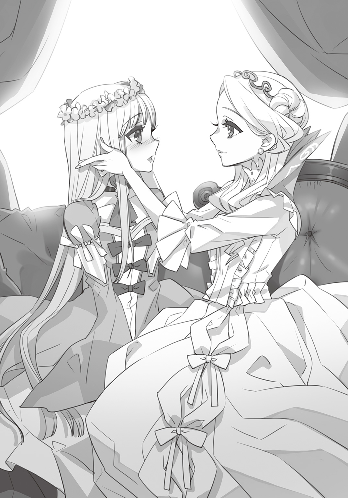
茫然としているエヴァレットの頭に、ジゼルが花冠をそっと乗せる。
「私が、エヴァレットと友達になりたいと思いましたから」
言葉も声も、しとやかな指先の動きからも、わかる。ジゼルの世界は柔らかな色を持つ花がたくさん咲いている。そこに迷いこんだら誰もがほっと息をつき、心を解いてしまう。
「ですから、許してくださいね。怒ってらっしゃるかしら......」
ジゼルは少し困った顔をしながら、エヴァレットの頰に手をやった。
俺が同じことをしたら、この瞬間に命はない。と、思う。
だがエヴァレットもまた、俺と同じく――停止していた。
「べ、別に怒ってはいません」
「本当に？」
「本当です！ ど、どうしてわたしが噓をつかなきゃ......！」
「良かった。そのお顔、どうしていいかわからないって感じでしたものね。私も同じでしたのよ。どうすればお友達になってくださるか、ずっとそればかり考えてましたから......嬉しい」
ジゼルは微笑みながら、エヴァレットをぎゅっと抱きしめた。
ジゼルの肩越しに見えたエヴァレットは、真っ赤になっている。
（エヴァレットでもそんな顔、するのか）
わずかに顔を左右に揺らしているのは、俺に『見るな』か『違う』のどちらかを伝えたいのだろう。だが俺もまた次の瞬間、同じ顔をする羽目になった。
「もちろん、シオンさんもお友達。一度にお二人とお友達になれるなんて、胸が躍りますわ」
俺のほうを振り向いたジゼルが、ばっと両手を拡げた。
「あ、あの、俺はその、もう友達ってことで――はうっ！」
「ありがとう、これからよろしくお願いしますね」
ぎゅっと抱きしめられた瞬間、初めてジゼルの体の柔らかさと甘い匂いに気づいた。
ぱん、と頭の中が弾けるような感覚がした。
エヴァレットは唇を真一文字にしながら困った顔をしている。
でもそれは怒りじゃなくて――きっと俺と同じだ。
予測不可能な出来事に出くわして、本当に困ってしまったのだ。
エヴァレットは、自分の思考の中にあった『友達』という頁にいきなりジゼルの名前が現れて、どう処理していいかわからないようだ。
それからのことははっきり言って、頭の中に全く入ってこなかった。
午後の授業を終えたエミリアたちがやって来たのも、他の生徒たちがたくさん集まってジゼルや俺たちを囲んだのも、エヴァレットが談話室にいることを珍しがる囁きすらも。
＊＊＊
ジゼルが来た日から、何かが変わったのかと言われたら、特に何も変わってはいなかった。
本来ならば十歳から受けなければならない『アンブレイカブル・ガーデン』の教育を、ジゼルは十分クリアしていると聞いた。一般生徒として教室棟で授業を受けているけれど、かなり優秀だと話してくれたのはエミリアだ。
あの日以降も、エヴァレットが談話室に行くことはない。
わずかにエヴァレットを困らせているのは、ジゼルから届く何気ない手紙だった。
「......はあ」
その朝、屋敷から『アンブレイカブル・ガーデン』へと向かう馬車の中で、エヴァレットがため息をつくのはこれで三度目だった。俺は最初、エヴァレットの手元にある書きかけの手紙が原因だと思っていた。
ジゼルの手紙には、別に談話室に来てくれとか、お茶をしましょうという誘いの言葉はなく、日々の移ろいが綴られたものだった。返事が欲しいとも書いてない。
「あの、いっそのこと、もう手紙の返事を出さないで会うってのはどうかな」
「......はあ」
四度目のため息は、俺の意見は却下だという意味だったのだろう。
エヴァレットは返事をしたためようと考え込んでいたが、ついに続きを書かないまま折りたたんでしまった。
「......シオン、話があるのだけれど」
エヴァレットの声色が変わった。
「手紙のこと？」
「それはもう終わりました。シオンに話すまでもないわ。聞きたいことがあるの。あなた、剣の稽古はどれほどしていた？」
「エヴァレットのお屋敷に来てから、時々教えてもらったよ。執事の爺さん強いな！ 昔、騎士でもやってたのか？」
「勝てました？」
「ううん、全然」
エヴァレットは今までで一番深いため息を零した。
「いや、だってさ、子供の時に騎士ごっこくらいしかやったことないんだから」
「わかりました。もう間に合わないということね......」
「いや待って。なんだか嫌な予感がするんだが」
「命を落とすことはありませんから――おそらく」
「おそらくって！ 死ぬ可能性があるって意味じゃないか！ 本気で言ってるのか!?」
再び沈黙。エヴァレットは窓の外に目をやる。
「って、そこで黙られると本当に困るんだってば」
「一つお話があるのだけれど」
（この流れ......絶対、悪い話だ）
「今日、『アンブレイカブル・ガーデン』で一般生徒と候補生による模擬戦があるの」
「......い、今。なんて言った......？ 候補生ってことは、〝盾〟の俺もだよな」
「ええ。戦うの。その意味はわかるでしょう？」
すぐに頷くことはできなかった。
相手が令嬢ばかりとはいえ、彼女たちが日々鍛錬している姿を見てきているのだ。敵うわけがないと体が感じている。
「模擬戦はだいたい〝薔薇の季節〟が始まる日と重なるから、おそらく学園に知らせが来るはず」
「それが始まったら俺たちは......」
「わたしたちは、〝青い薔薇〟としてふさわしいかどうか――試される」
そう呟いたエヴァレットの視線は、今までになく澄み渡っていた。
＊＊＊
その日の午後は、全ての授業が取りやめになっていた。
大庭園には日よけ用の大きなパラソルと長椅子がいくつも並び、『アンブレイカブル・ガーデン』に通う生徒たちが座っている。長いスカートを風に揺らしながら談笑する姿は、まるでピクニックのように見えた。
だが令嬢たちが手にしているのはバスケットではなく、一本の剣。
模擬戦は、一般生徒の中から剣術の優秀な子たちが選ばれ、候補生たちと戦うという形だった。普段、エヴァレットたち候補生はめったに一般生徒と剣を交えることはない。ましてや【暗殺伎】と呼ばれる特殊な戦い方が公にされることはほとんどない。
（ほとんどないってところが、怖いんだよな......）
大庭園につくられた、候補生が待機するテントの中。
俺は剣を持つ自分の手を見つめてため息をついた。
「お、なんだか浮かない顔だな。シオンは実戦が嫌いなのか？」
今日一番目を輝かせているのはティーダだった。
「嫌いっていうか、苦手っていうか......うん」
「まあ、さすがに本物の武器を使うわけにはいかないからなあ。あたしだって自分で磨いたナイフを使いたいもんだよ」
（いや、そういう意味じゃないんだ）
ティーダは両手に持つ大きなナイフをひらひらと揺らした。形はティーダが好むナイフと同じだが、よく見ると刃は偽物だ。
「基本はフツーに戦うだけだけど、こりゃヤバいってなったら【暗殺伎】も使いな」
「そ、そりゃ......使う必要があったら、使うよ？」
「なーんてね。【暗殺伎】は女王陛下から賜った任務以外じゃ禁じられてるんだから使っちゃだめだよ。ちょっとシオンの伎を見てみたかったからさ、あはは」
「わ、笑いごとじゃないから!!」
「あーあ。リリィのトランクも全部調べられたよお......」
むくれたリリィが、背中のトランクを揺らしている。心なしかいつもよりも軽そうだった。
「すぐ死んじゃうお薬と、三日後に死んじゃうお薬と、心だけ死んじゃうお薬はダメだって」
「し、死ぬのか!?」
「うーん。簡単に説明すると、そんな感じかな？」
（恐ろしくて詳細な説明なんて聞けないな......）
ティーダとリリィだけじゃない。細い剣を手にしているエミリアとロゼ。そして前を見据えて立つエヴァレット。もしここに並ぶ相手と戦えと言われたら、俺はすぐさま逃げ出すだろう。
「そんなに緊張することはないって。安心しな、シオン。やるべきことをやればいいだけだ」
ティーダは俺の肩をぽん、と叩いて笑った。
「......時間ですわ」
エミリアがそう呟いたのと同時に、テントの幕が開いた。
まだ眩しい陽射しがいっきに入り込み、視界が真っ白になった。
そして顔を上げると――大庭園の大通りには模擬戦用の防具をつけ五人一組に分かれた一般生徒たちのチームが五組。候補生はそれに対するように横並びとなり、俺もそれに加わる。
（まさか......後ろに立っているのは、ジゼル？）
一番端に並んでいる一般生徒たちのチームに、ジゼルの顔が見えた。
緊張する他の生徒たちとは違い、初めて会った日と同じ柔らかな表情でそこに佇んでいる。
（どうしてだろう、まさか間違って選ばれたとかじゃ......ないよな）
隣に並ぶエヴァレットたちの顔をそっと覗いてみたが、誰も俺と同じ疑問を抱いていないようだ。むしろ、皆の眼差しはもっと遠くを見つめているようだった。
「また、この時が巡ってまいりました」
学園長が、全員の前で高らかに宣言した。
「今朝、女王の庭に薔薇が咲きました。ついに〝薔薇の季節〟が来たのです」
ぴん、と空気が張り詰める。全ての生徒にとって、この言葉は重い意味を持つ。
学園長は、一語一句嚙みしめるようにゆっくりと続けた。
「候補生たちはこれから〝青い薔薇〟になるための『試練』を受けます。この『アンブレイカブル・ガーデン』は王国を支える令嬢を育てる場でもあり、女王陛下をお守りする職務に就くのにふさわしい者を見出す場――候補生たちが立派な薔薇となることを祈りましょう」
たくさんの羨望と期待の眼差しが一気に押し寄せてくる。
候補生はこの学園に通う令嬢たちにとって明るく輝く星なのだと、改めて実感した。
「そして次期候補生を見定めるために行われるのが、今日これから始まる模擬戦です。〝青い薔薇候補生〟と対等に剣を交えることのできる機会はこれが最後です。存分に戦いなさい」
激励された一般生徒たちは、無言のまま頷いた。
（彼女らは、次の候補生になるかもしれない子なんだ......）
息苦しいまでの緊張感の理由――それはこの模擬戦が一般生徒たちの剣術の試験であり、名誉ある次期候補生に選ばれるための一戦だからだ。エミリアが言っていた【暗殺伎】を習得するにふさわしい才能があるかどうか見極められるのだろう。
向かい合う候補生側と一般生徒側に、侍女たちがしずしずと歩み寄ってきた。侍女は皆、一輪の薔薇を載せたトレイを手にしている。学園長の隣にいた審判が声を上げた。
「模擬戦のルールはたった一つです。胸につけた薔薇を落とされれば負け。その時点で戦線を離脱してもらいます。それ以外に離脱する理由はありません。たとえ相手に武器を奪われようとも薔薇を落とされていなければ戦い続けて構いません」
審判は太陽を指さした。
「試合の勝敗は候補生の薔薇が全て落ちた場合、あるいは一般生徒側の薔薇が全て落ちた時につくとします。また、勝負がつかず日暮れを迎えた時は胸に残った薔薇の数が多い方を勝者とします」
侍女たちが全員の胸に薔薇を付けたことを確認した審判は、深呼吸をし、大きなハンドベルを振り上げる。
「では、始め！」
カーン、と乾いた音が鳴り響く。
次の瞬間。
多くの生徒たちが息を呑む音が聴こえた。
と、同時に、俺の視界からエヴァレットたちの姿が、消えた。
「えっ、う、噓だろ!?」
俺はやっと、この戦いに懸けられた意味の重みと、候補生たちの実力を体感した。
彼女たちは皆、目にも留まらぬ速さで駆け出したのだ。そして一般生徒が候補生の胸の薔薇を落とそうと疾走してくる。もちろん、俺のほうにも――
「やっ！ はああっ！」
一人の令嬢が飛び込んできた。俺はギリギリで攻撃をかわしたものの、思いきり後ろに倒れてしまった。あまりの手ごたえのなさに令嬢はきょとんと俺を見下ろしていた。
「えっと、あの......」
「やああああっ！」
容赦なく振るわれる剣に目を瞑ってしまったその瞬間、鼻先で風が吹いた。
「予想はしていたけれど、困ったものね」
「エヴァレット！」
俺の前に立つエヴァレットの剣の先に、令嬢の薔薇が刺さっていた。
「......ま、まいり......ました......っ！」
令嬢は負けたことより、エヴァレットの戦いぶりを間近で見られて喜んでいるように見えた。
「シオン、あなたは下がって。庭園の端まで行って身を潜めなさい」
「そんな、でも――うわっ！」
別々の方角から、いっきに四人もの令嬢が飛びかかってきた。
エヴァレットはぐいっと俺の肩を摑み、重心をかけ弾みをつけると、俺と入れ替わるようにくるりと円を描きながら、相手をなぎ倒していく。
（す、すごい！ 俺も何か役に――）
俺が剣を構えるよりも早く、最後の一人が運よくエヴァレットの攻撃をすり抜けた。
彼女は胸の薔薇を死守しながらも、再び俺たちのほうへと向かってくる。
「シオン様、もらいますっ！」
（狙いは俺だったのか――）
せめて一撃でもと突き出した俺の剣を弾いたのは、エヴァレットだった。
エヴァレットは更に剣先を返しながら、令嬢の薔薇を切り裂いた。
結局、エヴァレットは併せて五人もの相手をあっという間に倒していた。
「本当に邪魔ですから、動かないで！」
「や、でも俺だって、一応エヴァレットの、えっと、〝盾〟ってやつだから」
「その意味を、ちゃんとわかっていない――わたしには必要ありません」
今まで投げかけられたどの言葉よりも胸に突き刺さった。
（あ......俺、思ったよりもダメージ受けてるな）
剣を持つ手に力が入らない。もしも今誰かが襲ってきたら、もう機転も何も利かず、あっという間にこの胸の薔薇を落とされるだろう。
（......役立たずな奇術師見習いじゃ、エヴァレットと一緒に戦うことなんてできない）
エヴァレットが銀の髪をなびかせ、高く飛び、手にした剣を振るう。
誰とも馴れ合わず、何を考えているのかわからない実力者――エヴァレットはその気高さに違わぬ戦いを繰り広げ続けた。
数人で飛びかかってきた相手には、スカートの中に潜ませていた投げナイフを使い一気に薔薇を落とした。まっすぐ勝負を仕掛けてきた生徒の剣はあっという間に地面に突き刺さった。
次から次へと生徒たちの薔薇を落としてゆく姿は、鮮やかな翅を持つ蝶が飛んでいるようだ。
誰もエヴァレットのそばには近寄れない。
つまり、俺に襲いかかってくることも、不可能に近い。
「ぼうっとしないで、せめて戦っているフリをしなさいっ！」
「わ、わかった」
「もう残りは少ないわ......わたしの邪魔をしなければ、それでいい。それがあなたの役目」
エヴァレットと背中合わせに立ち、辺りを見回す。
気がつけば、もう薔薇を付けている一般生徒は残りわずか三人だ。剣を構えたエヴァレットに、再び挑戦しようとする子はもういなかった。
ロゼに挑んだ残りの一般生徒たちは、巧みな剣さばきに翻弄されたあげく、エミリアにも追い込まれて負けた。ティーダとリリィの周りにも、同じようにいくつもの薔薇が落ちている。
日没を待たずして、勝負はついた――誰もがそう思っていた時。
草を踏む音に続いて、緩やかな長い髪が波打つ姿が見えた。
「――ジゼル！」
俺は息を呑んだ。
もう一人、最後に残っていた一般生徒――それがジゼルだった。
弓なりに体を曲げ、恐ろしいまでの跳躍力でジゼルは空を舞っていた。
そしてそのままくるりと回転し着地したかと思うと、ジゼルはリリィへ飛びかかったのだ。
「リリィ！」
ティーダが駆け寄るよりも早く、ジゼルの左手がリリィの肩を摑み引き倒した。
だがリリィも完全に油断していたわけではない。小さな手につけた鉤爪がジゼルの顔前に突き出された。その爪に仕込まれた毒に、一瞬で全身を痺れさせる力があることはリリィの前に倒れていった何人もの生徒たちが証明している。
だが、ジゼルは逃げなかった。
鉤爪に搔かれ、頰からかすかに血を流しながら――ジゼルは剣を構えた腕をリリィの胸の薔薇へと突き立てようとしている。
その時、俺は気づいた。ジゼルの手首のブレスレットから垂れた細い鎖が、しっかりと剣に結びついていたのだ。
（まさか、体が痺れることも計算して......剣を構えていたのか!?）
体の自由が利かなくなっても剣を手離さないように。
自分の意志で動かせなくても、倒れるままに相手の薔薇と刺し違えるように。
（でも、あのままじゃ――薔薇だけじゃない、リリィの体まで！）
間に合うわけない。
そう思っていても、俺は走り出していた。
「――っ！」
ジゼルの体が傾いたのも、それと同時にリリィの胸元に剣が落ちていったのも、数えてみれば瞬き数回分もないほどの時間だった。
はやる気持ちのまま飛び込んでいった俺の目の前で、ティーダがリリィをかばうように自分の左腕をかざした。ジゼルの自重がかかった切っ先が、ティーダの腕にめり込んでいく。
わずかに眉を歪めた後、ティーダがジゼルの剣を薙ぎ払うと、ジゼルはそのまま、地面に転がった。
「......間に合った。あんた、なかなか賢いな」
ティーダは笑みを浮かべてそう言い、ナイフでジゼルの胸元の薔薇を落とした。
カーン、と鐘の音が中庭に響き渡る。
この戦いの終わりを告げる音だ。
「ティーダ！ お、お前、今、腕に剣が......」
「お前って言うな！ シオン、こっちに向かって走ってきてどうする！ シオンはエヴァレットの〝盾〟だろ？ 油断するな」
「――えっ？」
驚く俺の前で、リリィが体を起こした。
リリィは真っ白なハンカチを取り出すと、汚れることも厭わない様子でティーダの腕を縛り止血する。
「うん......あのね。リリィたちが本当に危ない時にやらなきゃいけないのは、二つだけなんだよ。死すらもなかったことにするか、ティーダが助けるか」
「なかったことって......そんな、窮地の時に助けに入っちゃいけないのか？」
「シオン、こちらにいらして。ティーダたちは何も間違ったこと仰ってはいませんわ」
エミリアが後ろから声をかけてきた。
「それになかったことというのは見殺しにするという意味だけではありません。もしも生き残ることがより大きな苦しみを生むような場合は、命を絶つという意味もあるのです。だからわたくしたちは対を成さなければなりません」
「それが、〝盾〟の約束......？」
言葉では何度も聞いた。
互いを守り、いざという時には自分の命を託す相手。
だがそれが血の匂いを含んだ現実として突きつけられたのは、今日が初めてだった。
10．〝薔薇の季節〟の到来
なんだか良い匂いがする――そう、温かなスープの匂いだ。
よく煮た豆の香ばしさに腹がぐうぐうと音を立てる感覚で、俺は目を開けた。
「......え？」
窓の外はすっかり真っ暗になっていた。
模擬戦を終えアージェント家の屋敷に戻ってすぐ、俺は眠り込んでしまったようだ。部屋に食事が運ばれてきていたことすら、気づかなかった。
焦ってベッドから飛び起きると同時に、扉がノックされた。
「す、すみません！ 俺、うっかり寝てしまって......！」
「――そう。別にいいけれど」
「えっ？ エヴァレット、なのか？」
扉が開き、エヴァレットが顔を覗かせる。
エヴァレットと屋敷内でこうやってきちんと言葉を交わすのは初めてだった。
「まだ食事も終えていないということだったのね」
「......ご、ごめん」
「食事を済ませたら、必要なものをまとめておきなさい」
「ちょ、それ、どういう意味だ？」
「準備を終えたら侍女に声をかけなさい。すぐにわたしの部屋に案内させます」
「待て待て、さらにわかんないんだけど、今、なんて言っ......え？」
（わたしの部屋――エヴァレットの部屋に俺が行くって意味なのか？）
エヴァレットはそのまま背を向け、ばたんと扉を閉めて出て行ってしまった。
＊＊＊
命じられた通り、俺は荷物をまとめた。
とは言っても、服も靴もここに来てから与えられたものばかりだし、鞄一つで間に合うほどだった。エヴァレットの言いつけに従い、俺は侍女と共にある部屋の扉の前に辿りついた。
まだ信じられないが、ここがエヴァレットの部屋らしい。
侍女がノックをすると、エヴァレットのどうぞという短い返事が戻ってきた。
「......失礼、します」
緊張しながら足を踏み入れると、そこは思っていたよりも普通の少女の......貴族の令嬢らしい部屋だった。
天蓋付きのベッドや、大きなクローゼット、花のレリーフの彫られた化粧台など、どれも侯爵家にふさわしい豪華なものだ。だが俺の知っているエヴァレットとは、どうもうまく結びつかない。
「こちらの部屋の準備は、侍女と済ませたわ。シオン、今からあなたに手伝ってもらいたいことがあります」
エヴァレットが指さしたのは、天井からタペストリーがつり下がった壁だった。
「......これを外すの？」
「いいえ。この奥の部屋。侍女をここに通すわけにはいかないから」
エヴァレットがタペストリーを捲り上げると、壁にうっすらと切れ目が入っていた。それはちょうど人一人が通れるくらいの大きさだ。エヴァレットの言う『奥』はこの先のことなのだ。
「わたしの後についてきて」
エヴァレットが片手で押すだけで、壁は切れ目に沿って奥へと開いた。この屋敷の中でおそらく一番小さな扉をくぐり奥へと行くと――
「これ......全部......」
「わたしだけの物ではないわ。長きにわたりアージェント家に伝わる物のほうが多いの」
室内はエヴァレットの部屋とほぼ同じ大きさだった。
壁一面がキャビネットになっていて、その中にはナイフや弓矢、短銃が並んでいる。一目見て武器だとわかる物だけではなく、ネックレスやパイプといった日用品にしか見えない物もある。だがアージェント家に伝わる物ということは、それらも暗殺に使われる道具なのだろう。
窓はなく、ランプの明かりだけで浮かび上がる薄暗い光景は幻のように見えた。
「明日から候補生は全員『アンブレイカブル・ガーデン』で過ごすの。〝薔薇の季節〟の間中はずっとそう」
「だから荷物をまとめろって言ってたのか......って、ここにある物、全部持っていくつもり？」
「まさか。これらはお父様よりも前の時代に使われていた物ばかりよ。わたしの物はもうまとめてあるから......来て頂戴」
エヴァレットは部屋の一番奥に置かれた一人がけのソファに腰かけた。
他に椅子は見当たらない。俺は無造作に置かれたクッションを尻に敷いて、床に座りこんだ。
「これよ。しばらく本格的なお手入れができないから、今晩中に全て済ませたいの」
革張りの平たいトランクケースの内側は、紺色のビロードが敷き詰められていた。そこに置かれているのは、エヴァレットが愛用しているナイフだ。手のひらほどの大きさの物から、小指くらいの小さなものまで数十本並んでいる。
「もう研いではあるの。最後に余計な油や埃を払うだけよ」
エヴァレットが俺に手渡してきたのは、柔らかななめし革のハンカチだった。
「これで、ひとつずつ磨くの」
「今から、全部？ 明日の朝までだよな」
「だからシオンを呼んだのよ。本当は一人で済ませたかったけれど、調べものをしていて時間が足りなくなったの」
ソファの後ろに置かれた蔵書の山。
ついさっきまでエヴァレットがこれらを読んでいた姿が目に浮かんだ。
「......わかった。やり方、ちゃんと教えてくれよな」
「ええ、もちろん」
エヴァレットに手入れの仕方を教わり、俺は丁寧にナイフの刃先を磨いた。
隣に座るエヴァレットも俺と同じ動きを繰り返している。
静かな時間とともに、この部屋の暗く重苦しい空気が俺の中に降り積もってきた。
（――この部屋は、エヴァレットそのものだ）
アージェント家に伝わるという知識がつまった蔵書。数えきれないほどの剣や銃。
言葉もなく漂ってくる、死と戦いの匂い。その匂いの染み込んだ糸は百年以上の時を超えてエヴァレットに続いている。
「エヴァレットは子供の頃からこの部屋にいた？」
「......ええ」
「なあ、エヴァレットは怖くならないのか？ 死ぬかもしれないことが。ここに座って同じようにナイフ磨いていたらさ、どんどん何かが体の中に入り込んでくる気がしたんだ」
命を投げうつ覚悟というのが正しいのかもしれない。
美しく、強く、誇り高き魂――だけど俺にはそれが、月のない夜より昏く恐ろしいものに思えた。
エヴァレットが手を止め、俺のほうを見た。
「......それが、わたしよ」
迷いのない、はっきりとした答えだ。
「死を恐れてはならないわ」
そうだろうとは思っていた。
この部屋に来たことで、俺はエヴァレットの心を覗いてしまった。
「でも、俺はエヴァレットに死んでほしくない」
「そうね。それは誰もが抱くあたりまえの感情だわ」
「死んでもいいと思いながらやるなんて、おかしいよ」
「わたしが身を置く先は、命を賭けた殺し合いがある場所。あなたとは違う」
「俺だって――」
頭の中に、たくさんの光景が流れこんでくる。
俺は父の言葉を思い出す。
「奇術だって、命を賭ける。何も違わないだろ」
「......違うわ。あなたにはわからない」
「どうしていつも、俺にはわからないって決めつけるんだ。今すぐとか、全部とかそんな風に言ってない。でも絶対わからないなんて言うなよ」
「シオン――」
エヴァレットの瞳が、まっすぐ俺を映していた。
ソファに腰かけたままゆっくりと体を屈め、その顔が俺のほうへと傾いてくる。ちらちらと揺れる明かりに銀の髪が照らされて、エヴァレットの輪郭がぼやけて見えた。今にも鼻先が触れてしまいそうなほど近くにいるのに、少しでも目を離せば搔き消えそうだった。
「もしもわたしが、あなたの道を絶つ者だとしたら、わたしを殺すかしら」
「そんなこと、できるわけない！」
自分の胸の内から溢れ出た感情は、思いがけないほど激しい怒りだった。
「誰の命だって、ましてエヴァレットをなんて......できるわけないだろ」
だがエヴァレットは静かに一本のナイフを両手で持ち、俺の目の前に差し出した。
磨き上げられたナイフは鏡のように、俺の目元を映している。
「わたしは違う。もしも必要ならばあなたの命を奪うわ」
結局、俺とエヴァレットはその後一度も言葉を交わすことなく、〝薔薇の季節〟が始まる朝を迎えた。
＊＊＊
〝薔薇の季節〟は、候補生たちが生活の場を『アンブレイカブル・ガーデン』に移すことから始まる。〝青い薔薇〟にふさわしいかどうかを見定める『試練』が行われる間、候補生は学園内の限られた区域で生活を共にする。一般生徒たちと交わることはもちろん、屋敷に戻ることすら許されない。
俺は鞄一つだけで済んだが、令嬢となればそういうわけにもいかない。
エヴァレットですら身の回りの物は最低限にまとめていたものの、【暗殺伎】にまつわる物を収めたトランクは閉まらないほどに膨れ上がっていた。
「こんな広い場所、まだあったんだな......」
外から見ると、まるで収容所のようなこの場所を令嬢たちは〈試練の塔〉と呼んでいる。
いつも俺たちが過ごしていた〈候補生の間〉の奥からしか入れない扉の向こう。そこはがらんとしたロビーになっていて、上階へ続く幅の広い階段が目に入った。
「エヴァレット様、シオン様。お荷物は後ほど部屋のほうへと別の者がお運びいたします」
一人の侍女が恭しく頭を下げ、俺たちを出迎えた。
「わかりました。塔の中を少し歩いてもよろしくて？」
「上階のみでしたら、候補生の皆さまはご自由に出歩くことを許されています」
「......そう」
エヴァレットは侍女に短くそう返し、階段を上り始めた。
「シオンは好きにしていいわ」
「一緒に行くよ」
〈試練の塔〉の二階にあたるこの場所が、候補生の生活の場にあたるようだ。
一般生徒たちの教室棟のちょうど半分くらいの広さだろうか。扉は廊下を挟んで左右に二つずつある。行き止まりにある扉は、他と違い仰々しい鍵がついている。たぶん、行ってはいけないとされる他の階への階段があるのだろう。
エヴァレットは遠慮なく、手前から扉を開いた。
「勝手に開けていいの!?」
「さっき自由にしていいって言われたでしょう？」
扉の向こうにあったのは、食堂らしき部屋だった。談話室ほど豪華ではなかったが、候補生たち全員が座れる長いテーブルと椅子が置かれ、奥にはキッチンが見えた。
「そっか。ここで寝泊まりするんだから、食事も作れるようになってるんだな」
「......作らないわよ」
「えっ!? じゃあ何を食べるんだ、俺たち......まさかそれが『試練』なのか？」
「馬鹿なことを言わないで。あなたは料理道具が揃えられていないことに気づいていないの？」
「あ、本当だ、食器くらいしかないな。じゃあさっきの侍女さんが作ってくれるのかな」
「別に、そんなこと気にする必要などありません！」
エヴァレットはぷいと顔を背けて、さっさと隣の部屋へ向かってしまった。
（俺、なにか今、怒るようなこと言った？）
隣の部屋に入ったエヴァレットを追いかけ、おそるおそる隣に並んでみると――
「素晴らしい」
（......えっ？）
さっきとは打って変わり、青い瞳が丸く見開かれ、きらきらと光っていた。
目の前に広がっているのは、片側一面が鏡となった大きな部屋。造りは教室棟にある大教室とほとんど同じだ。ただ一つ違うのは、もう片側に銃や剣、弓矢、そしてその的にできるような木製の人形が並んでいること。
「戦いの練習をする場所、だよな」
「ええ、そうよ。【暗殺伎】を磨くにふさわしい。本当に素敵だわ」
（......エヴァレット、こういうのに心躍るんだな）
エヴァレットの頰がわずかに赤くなっていることに、俺は気づいてしまった。
「エヴァレット様、シオン様――お荷物のご準備ができました。〈試練の間〉においでくださいませ」
侍女の声が響き、エヴァレットははっと表情を引き締める。
「〈試練の間〉って、反対側の部屋のことかな」
「そうでしょうね、行きましょう」
＊＊＊
（え......っ？ 本当にこんな場所で大丈夫なのか？）
〈試練の間〉と呼ばれる部屋に入った時、俺は驚きを隠せなかった。
そこは部屋というよりも、大広間に近い。大教室を二つ繫げても足りないくらいだった。
足元の絨毯や天井にあるシャンデリア、人数分のベッドやクローゼットは令嬢が暮らすのに十分な設えだったが、それらは一部屋に集められていて――寮の相部屋のようだった。
俺は、トランクを確認しているエヴァレットのそばに近づいた。
「エヴァレットはこういう風に、皆と一緒に過ごすのは平気なのか？」
「〝薔薇の季節〟がどのように行われるかは知っているわ」
「そう......ならいいけどさ」
言葉通りの意味だけのぎこちない会話だ。それでも、無視されなかったのにはほっとした。
俺たちが着いて間もなく、他の候補生たちもこの〈試練の間〉へとやって来た。
「お！ なかなかいいじゃないか。あたし、こっちの壁側使ってもいい？ ほら、コレを飾りたいんだ」
そう言いながらティーダが取り出したのは、大きな角を持つシカの骨だった。
「わあ、それ持ってきたんだあ。ティーダのお気に入りだもんね。リリィもおなじー！ ティーダの隣にお部屋作っちゃおうっと」
リリィが大きなトランクの蓋を開けると、熊やウサギのぬいぐるみが何体も飛び出してきた。どんどん積み上げられていくそれらに、ティーダはやれやれとため息をついている。
「たくさんあるんですね」
トランクから溢れて転がっていったぬいぐるみを、ロゼが拾い上げた。
ロゼの荷物はシンプルにまとめられていて、あっという間にクローゼットの中にしまわれていった。
「ロゼのところにもリリィのくまくま、一つ貸してあげようか」
「ふふ、そうですね......こういうのがあるのも、素敵かもしれませんね」
リリィから受け取ったぬいぐるみをロゼはふにふにと弄び笑っている。
「そういえばさ、エミリアが最後だなんて珍しいよな」
「あの......もうすぐだと思いますわ。少し大変そうで......」
ロゼの苦笑いの理由はすぐにわかった。
エミリアの荷物は、他の誰よりも多く、クローゼットがまるまる一つ運びこまれたのだ。もちろんそれ以外にも大ぶりなトランクが三つもあった。
「不覚ですわ、支度にずいぶん時間がかかりましたの」
（予想通りというか、やっぱりすごい荷物だな）
「わたくし、このクッションだけはどうしても手離せませんの」
エミリアが大きなクッションをベッドに置き、ついでにシーツを伸ばし始めた。いつもは侍女がやるのが当たり前なのだろう。エミリアの手つきはおぼつかなかった。
「こっち引っ張ったほうが良いと思うよ」
俺はベッドを挟んでエミリアの反対側にまわり、シーツの端を引っ張った。
「な、なるほど！ 覚えておきますわ。シオンのお荷物はとても少ないのですね。あちらのベッドをお使いに......」
にこにこしていたエミリアが、急に口元を押さえた。
なんだろうと思う間もなく、頰から耳まで赤く染まっていく。
「お待ちになって。そうよ、そうだわ......だって仕方ないもの、決まりですから」
「どうしたんだ？ 何か忘れたのか？」
「違います。シオン、あなたもここで――お過ごしになる......の？」
「......あ」
他のことばかりに気を取られて、すっかり頭から抜けていた。
俺もここで、過ごすのだ。仕切りのないこの部屋で候補生たち全員と一緒に、だ。
慌てて部屋を見渡すと、〝盾〟の関係の二人組が並びでベッドを使っている。
エヴァレットの隣のベッドは、俺のためとばかりに空いていた。
（いやいやいや、それはダメだ。なんとかしなきゃ、なんとか......ん？）
部屋の隅になぜか一台だけ離れて置いてあるベッドがあった。
もしかしたら壊れているのかもしれない。でも、それでもいい。俺はあそこにあるのを使わせてもらう――と踏み出そうとした時だ。
「失礼いたしますわ」
扉が開き、旅行鞄を片手に持つ人影が現れた。
「遅ればせながら、私も候補生の一人として〝薔薇の季節〟をご一緒させていただくことになりましたの」
ジゼルがそこに立っていた。
「急なことでしたから、〝盾〟を持たないままでの参加になりましたの。皆さんにご迷惑はおかけしないよう、十分に気をつけますわね」
全員が茫然とするなか、ジゼルは室内を横切っていく。
「あ、ここは......」
「ごきげんよう、こちらを使わせていただきますね」
俺が使おうとした部屋の隅のベッドの上に、ジゼルが自分の鞄をぽんと置いた。
＊＊＊
――夜。
食堂で夕食を終えた候補生たちの顔には、さすがに少しばかり疲れが浮かんでいた。
（そりゃそうだよな、ここじゃ全部自分でやらなきゃいけないんだし）
候補生たちは、剣術の稽古や【暗殺伎】の腕を磨くことを日課とされた。
更に、普段侍女に任せている身支度も全て自分自身でやらなければいけない。
侍女たちに用事を頼めるのは、食事と午後の休息の時間だけだった。
「ああう、リリィ......もう眠いです......」
目を擦りながらベッドに飛び込もうとするリリィを慌てて押さえたのはティーダだ。
「そのまま寝ちゃだめだろ。ちゃんと着替えてから！ ほらっ！」
「はーい......うう、やっぱり無理......ティーダ、引っ張って......」
ティーダはため息をつき、たくし上げられたリリィのドレスを引っ張り上げている。
（あんなに大量にボタンがあったら、着替えも大変だなって――あっ）
気がつけば、ロゼもジゼルも同じように着替え始めていた。
そうだ。夜だ。今から皆ベッドに入るため、寝間着に着替えるのは当たり前のことだ。
「......い、あ、どうしよう......かな......」
動揺する俺と目が合ったのは、エミリアだ。
エヴァレットを除き、この状況のまずさを理解している唯一の人物――エミリアは勢いよく頭を左右に振って、壁側を指さした。
（わ、わかった。あっちを向いていればいいんだな。うん、見ないから）
俺も無言のまま頷き返し、顔を壁に寄せて立った。
（どれくらい？ どれくらいこうしていたらいい？ 皆が着替え終わって明かりを消したら振り向いていいのか？）
「何しているんですか、シオン」
「......っ！」
「早く着替えなさい。そこに立たれていては気になって眠れないわ」
無慈悲な声の主は、エヴァレットだった。
おそるおそる振り返ると、エヴァレットはすでに着替えてベッドの端に腰かけていた。薄いブルーのすとんとしたシルエットの寝間着は、足首まで覆う長さだった。その下は裸足だ。
日に焼けていない真っ白な指先が、ほんの少し苛立っていることを表すようにきゅっと内側に押し込められている。
「エヴァレット。大事な質問がある」
「......はい？」
「俺はどこで寝ればいい」
「それくらいわかるでし......」
エヴァレットはやっと俺の危機的状況に気づいたようだ。
その時、消灯の時間を告げるベルの音が鳴った。他の子たちが次々とベッドに入っていく。隣同士――わざわざ〝盾〟と二人で並んで眠れるようにと配置されたベッドの中に。
「――噓！」
「う、噓っていうな！」
エヴァレットは周りに聞こえないように声を漏らし、目を丸くしている。どうやらエヴァレットの頭の中からも、俺の無茶な設定がすっかり抜け落ちていたようだった。
「ど、どうすればいいんだ。俺、床で寝ればいいのか」
「それはだめ、おかしいって思われるでしょう？」
「だってベッドはここしか......エヴァレットの隣しか空いてないんだってば」
エヴァレットは顎に手をやり、しばらく考えこんだ後――
「わかりました。隣のベッドを使うことを許可します。ただし！」
エヴァレットが人差し指で俺のベッドの縁をなぞった。
「絶対にここより先に入らないこと。入ったら殺します」
（う、これは本気の声だ。脅しじゃない。絶対にやるという決意がこもっている）
「眠る時も眠った後もわたしのほうを向くことを禁じます」
「って、それちょっと条件きつくないか!?」
「わかりましたか？ 返事は？」
「......はい」
エヴァレットが頷くと同時に、部屋の明かりが消えた。
（絶対、絶対に間違って寝返りうたないようにしないとな......）
そう考えだすと、逆に目が冴えてしまいなかなか寝つけない。
ベッドに入り枕に頭を押しつけてからどれくらいたった頃だろうか。ふと目の前に立つ人の気配に気づいた。
「え、エヴァレット......!? お、俺、ずっと反対側向いて寝てたから、絶対そっち見てないって......」
「しいっ」
「え、エミリア、何かあったのか......んっ!?」
エミリアは俺の口元に指を押しつけ黙らせると、もう片方の手をこっちについて来いとばかりに小さく振った。
＊＊＊
心もとないランプの明かりとともに、エミリアは俺をつれて食堂に足を運んだ。
薄暗い食堂で俺と向かい合うエミリアから、いつものような饒舌さが消えている。
「こんな時間に、一体どうしたんだよ」
エミリアは無言のまま食器棚の一番上を指さした。そこには白磁のティーカップが置かれている。
「もしかして、これを取ってほしかったとか？」
「......」
一声も発さず、エミリアはこくりと頷く。
俺は棚の上に手を伸ばし、ティーカップを取り出してテーブルに置いた。そこまでやってようやくエミリアは動き始めた。だがすぐ困った顔をしながら、しゃがんでは立ったりを繰り返している。
「......う」
（もしかして、お茶が飲みたいのか？）
令嬢たるエミリアには、炉に火を入れて薬缶で湯を沸かすという手順がわからないのだ。
「俺がやるよ、そんなに上手じゃないけどさ」
「......はい」
少しばかりしょんぼりしたエミリアには椅子にかけてもらい、俺は棚の中にあった茶葉を使って二人分の紅茶を淹れた。
「どうして俺を起こしたんだ？ その......本当は男だし......普通避けるんじゃ......？」
エミリアの前にカップを置きながら俺はそう尋ねた。普通に考えたら、こんな夜中に令嬢が男と一緒にいるなんてありえない。
「......嫌だったんです」
紅茶を一口飲んだ後、エミリアは少しだけ唇を尖らせて言った。
「自分の家でないから、落ち着かなくて眠れないなんて、わたくし......誰にも知られたくないんですもの」
「俺ならいいのかよ」
「い、嫌ですわ！ だから一人で行こうとしました！ でも、その......」
「そうか、カップの場所に手が届かなかったから」
「......」
「え、もしかして......暗いのが怖かったからとか？」
エミリアの頰が薄桃色に染まったのが、暗い中でもわかった。
「なんだ、そうだったんだ。はは、そっか」
「笑わないでください！ もう、そういうのがわたくし、嫌だったんですの」
「ごめん、なんだか意外でさ。でもさ、だったらロゼを起こしたら良かったんじゃないのか？」
「そ、それは、ですね」
エミリアはカップに残っていた紅茶を一気に飲み干してしまった。
「シオンがどんな顔で寝ているのか、見てみたかったのです！」
「......っ!?」
「わたくしの心を初めて奪った対価です」
エミリアがぷっくりと頰を膨らませる顔が見られるなんて、俺は思ってもみなかった。
いつも優雅で気品ある振る舞いをしていて、誰もが憧れる令嬢の中の令嬢。
だけど今目の前にいるエミリアは、等身大の、どこにでもいる女の子だった。
（......エヴァレットもこんな顔、することあるのかな）
いつも緊張感を纏い、自分に厳しく、心のうちを明かすことがないエヴァレット。
決して隙なんか見せない。
だけど、俺はふと気づいた。
（そうだ。そうだよ。見せないけれど――だからって、心がないわけじゃない）
俺とエヴァレットは、性格も育ち方もまるっきり正反対だ。
だけど一つだけ同じところがある。
遠くてなかなか辿りつけない場所を見ていること。
エヴァレットは、誰よりも強い〝青い薔薇〟になって、女王を守りたい。
俺は、どこにいるかもわからない父のような奇術師になりたい。
届くはずと信じて、ひたすら走り続けていて、でも――誰にもわかってもらえない。
わかってもらえなくてもいい。それでも、その道を行くんだと決めている。
そういうところが、同じなんだろうと俺は思う。
すとんと、胸の中に何かが落ちていった気がした。
父の行方の手がかりを見つけられるかもしれないと、俺はエヴァレットと一緒にいることを選んだ。だけどそれだけじゃない。走る速さは違うし、俺がエヴァレットに追いつけるかどうかなんてわからない。
でも、同じほうを見ている気がする――だから俺は、一緒にいたいと思ったんだ。
「......シオン？ どうかされまして？」
「あ、ううん、なんだかいろんなことが頭の中に浮かんできて、いっぱいになってた」
「そう、ですか。でもそこにきっとわたくしは......」
エミリアが勢いよく椅子から立ち上がった。
「お茶、ごちそうさまでした」
「エミリア？」
「もう戻りますから！ それから先ほどのこと、誰にも言わないでくださいね！」
「わ、わかったよ......」
＊＊＊
『試練』は、前触れもなく始まった。
昼食を終え、それぞれが自主的に体を動かし始めた頃だ。
候補生たちの前に、学園長がやってきたのだ。
「ここでの生活はもう慣れましたか？ 屋敷にいる時とは勝手が違うから大変でしょう」
学園長の口調は柔らかだったが、背筋がぴんと伸びる緊張感を漂わせている。
候補生たちは姿勢を正し、学園長の前に並んだ。
「そんなに緊張しなくてもいいのですよ。今日は午後のお茶にお邪魔しに来たのです」
学園長が合図を送ると、侍女たちが人数分のティーカップや、お菓子を載せた皿を運びこんできた。
「さあ。おかけになって。お茶をしながらこれからのお話をしましょう」
誰もが、何かが始まるのだという予感に触れた。
「では、あなたがた候補生が乗り越えなければならない幾つかの『試練』についてからお話ししましょうか。まず始めに受けていただくのは、『鼠』と『猫』に分かれ戦うというもの」
話を呑み込めない俺たちの前に、学園長が手を差し出した。手のひらの上には小ぶりの鈴がころんと置かれている。
「あなたがたのうち、『鼠』となるのは六人。その六人にこの鈴をつけてもらいます。あとの一人は鈴を持たない『猫』」
「あれれ、猫さんじゃなくて鼠ちゃんのほうが鈴、つけるんだ」
リリィの素直な疑問に、学園長は笑みをこぼしながら続けた。
「ええ。『鼠』は『猫』の鈴がうらやましくて、盗んでしまいました......なんておとぎ話みたいでしょう？ 『猫』は大事な鈴を『鼠』から奪い返したい」
学園長の声のトーンが下がる。
ここからが本題なのだろう。
「おとぎ話と違うのは、どちらも剣を持ち戦えるということ。鈴を持たぬ『猫』が負けるのは剣を落とした時。『鼠』は鈴を落とされれば負けとなります。勝負が決まるか時間切れになるまで逃げ切ること。制限時間の中でどのように考え、動き、戦うのか――全ては自由」
「学園長。今のお話を伺って、気になることがありますの......」
ジゼルがカップを置き、小さく手を上げた。
「構いません。どうぞおっしゃい」
「そのルールですと、数の多い『鼠』が圧倒的に有利ではありませんか？」
ジゼルの言葉に俺も頷いた。
あなたがたの中からということは、俺がその『猫』役になる可能性だってある。エヴァレットたちに剣で挑んで鈴を取り返さなければいけないなんて、想像するだけで背筋が寒くなった。
「ふふふ、そうですね。言葉だけで説明すると、そうなります。ですが全てが想像のままに運ぶとは限りませんよ」
学園長はカップに残っていた紅茶に口をつけ、柔らかに微笑んだ。
（こんな風に笑うのは――）
ふと、懐かしい光景が頭の中に浮かんだ。幼い頃、父が広場で奇術を披露している横顔だ。まだ小さかった俺のほうに顔を向けた父は、優しく笑いながら言った。
――誰かを騙したい時は、とびきり優しそうにするか、悲しげに目を伏せなさい。
（どうして俺、今、そんなこと、思い出してるんだ......）
どこか遠くでガシャンとカップが落ちる音がした。
（えっ、どうしたんだ......今の......俺が持ってた......カップなのか）
こぼれた紅茶が膝を濡らしてゆく感触があった。自分でも気づかぬうちに、手にしていたはずのカップを落としていた。
「――シオン」
揺れる視界の片隅で、エヴァレットが腕を伸ばしてくる。
俺の体を支えようとしてから、エヴァレットの瞳が左右に大きく動いた。
カップを落とす音、誰かがテーブルに伏せるような音が続き、最後に見えたのはまるで何かを納得したようにため息をつくエヴァレットだった。
そして、俺の意識は真っ暗闇の中へ落ちていった。
11．第一の試練――〈暗闇の猫と鼠〉
ふいに、瞼に冷たい何かが触れた。
頭に重りを乗せられたような嫌な感じがする。肩や背中に軋んだ痛みが走った。
そして目を開けると――暗闇が続いていた。
（俺、目を覚ましたのか？）
まばたきをしている自覚はあったが、闇が広がるばかりだ。自分の目が見えなくなってしまったのかと恐ろしくなった時、俺はようやく薄らとした明かりに気がついた。
（夢じゃない、よな）
天窓に打ちつけられた板の隙間から、わずかに星空が見える。天井の高さは三階分ほどあるようだ。がらんとした吹き抜けの建物だが、窓が全て塞がれているせいで真っ暗だった。
（いつの間に夜になったんだろ......こんなこと、前にもあったな）
俺はエヴァレットと会った日のことを思い出した。あの時は数時間しか経っていなかったのに、やけに長く感じられた。今度も同じなのだろうか。
さっきまでティーカップを持って優雅に午後のお茶会なんかやっていたはずなのに――。
「......ここは、どこなんだ」
俺は辺りを見回した。もちろん何も見えやしない。手のひらの下にはざらざらとした石畳のような感触がある。そっと撫でるだけで、床に埃がたっぷりと積もっているのがわかった。
どうやらこの建物は長い間手入れされていない廃墟のようだった。
（なんでこんな場所に連れて来られたんだ？ 他の皆もここにいるのか？）
ゆっくりと体を起こし、前に進むと――
「うわわっ」
いきなり足元に段差が現れ、俺は前のめりに転がり落ちた。
「......痛っててて、なんでこんな所に段差があるんだよ」
幸いなことに、深さは腰くらいの高さしかなかったようだ。縁に手をかけると、どうやら円形の穴になっているらしい。
（ただ単に掘ってあるってわけじゃない、きちんと計算されて作られている穴だ。まさかここは風呂......なわけないか）
穴から上がろうとした時、俺は初めて自分の足につけられた何かに気づいた。
――ちりりん。りん。
右の足首につけられた金属製の輪。そこに小さな鈴が二つつけられている。
そして、暗闇のはるか向こうから同じようにかすかな鈴の音が響いてきた。
音の響きからこの建物の広さの想像はついた。大聖堂とまではいかずとも、その半分ほどはありそうだ。
（俺だけじゃない、誰かがいる。そいつの足にもコレがついているんだ）
俺たちが気を失う寸前、学園長は一つめの『試練』について話していた。
（学園長が言っていた、想像のままに運ばないとはこのことか......）
猫と鼠に喩えられたルールは、この真っ暗な閉鎖空間で行うためのものだった。
わざわざここへ候補生たちを連れて来るために、気を失わせたのだろう。
（『試練』ってやつ、もう始まってるのか......？）
そう、息を呑んだ時――
「そろそろ目が覚めましたか」
天井に近い高さから、学園長の声が響き渡った。
「あなたがたに見せてもらいたいのは、ただ一つ。全てを失っても戦えるか......この闇の中で唯一の手がかりとなるのは鈴の音だけです。ですが『猫』だけが音を持たず、闇に紛れ逃げることも、『鼠』の場所をかぎつけることもできる」
ぼんやりとオレンジの光を灯すランプが天井に吊るされた。どうやらランプ時計らしく、あの光が消えるまでが制限時間なのだろう。心もとない灯りは俺たちがいる場所までは照らしてはくれず、闇を揺らすばかりだ。
学園長はついにその号令を発した。
「始めっ！」
沈黙。
鈴の音どころか、誰かの呼吸の音すら聞こえない。皆が一様に息を殺しているのだ。耳に届くのは、建物のどこかで滴り落ちる水音だけだった。埃が舞う闇の中、重苦しい緊張感が漂っていた。
（剣って、言ってたよな。そんなのあったか？）
俺はもう一度自分の周辺を手当たり次第探ってみた。
石畳が割れているらしい所に指先が当たり、それをどかすと何かが一瞬煌めいた。
（あった――）
剣に手を伸ばした瞬間、わずかに体勢が崩れて一歩踏み出してしまった。
ちりりん、と鈴が鳴る。
同時に、ヒュンと目の前の空気が切り裂かれた。
「......うぐっ！」
その一撃をかわせたのは偶然だった。
『猫』がすぐそばにいる。音を頼りに、俺を捜しているのだ。
どうにか音を立てないように、この場を離れなければいけない。俺は両手を地面につき、這うように動き出したが――
「うああっ」
ガクン、と石畳が崩れ足を取られた。
とっさに口元を押さえたが、漏れ出た悲鳴はもうとっくに俺の居場所を明らかにしていた。
手元にあったはずの剣がない。体勢を崩した時、手で弾いてしまったのだ。
（そんな遠くにはいってないはず......！）
俺は周囲に手を伸ばした。だがそれより先に、見てしまった。
カツ、カツ、カツ――と微かに床を踏むヒールの高い音。
誰のものかわからない、白い足首が一瞬見えた。そこに鈴はない。その足の持ち主は、狙いを定め俺のほうへとゆっくり歩み寄ってくる。
（どうすればいい、武器を捨てて逃げるべきなのか......!?）
自分の心臓の音が、頭の中で耳鳴りのように響いている。
捕食者に狙われた生物が、全身で感じる恐怖だ。
じっとりした汗が首筋を落ちていったその瞬間――近くでりん、と鈴が鳴った。
（リリィ!!）
柔らかな髪の感触がした後、鼻先をかすめるほどの距離にリリィの眼差しが見えた気がした。
「剣を早く取って。『鼠』なら剣を落としても負けじゃない、でしょ」
リリィは全身に力を込めて、俺の体を押しやった。脱力していた俺は簡単に弾き飛ばされ、床を転がった後、突然水の中に落ちた。
「う、ぶわっ、くっそ、なんでこんな所に......っ」
たぶん床に配水管のようなものが伸びているのだろう。割れた石畳から管がむき出しになり、脆くなって水が出ているのかもしれない。
（剣、俺の剣、どこだ!?）
リリィは俺を庇ってくれたのだ。
「ここは大丈夫、剣を見つけて、もう一度戦って......！」
闇の中で火花が散っている。
リリィのすばやい身のこなしは、激しく鳴り続ける鈴の音で感じ取ることができた。だがそれはリリィの戦う相手――『猫』も同じだ。
（リリィ、俺もすぐに......剣を......！）
だが俺の剣はどこにも見つからなかった。
（そうだ、燐寸があったはず......！）
一縷の望みをかけて、俺はポーチの中から燐寸箱を取り出した。ずぶ濡れになって使い物にならない燐寸をより分けていくと......一本だけ、乾いたままで残っていてくれた。
「――あうっ！」
すぐ近くで短い悲鳴と、鈴が落ちる音がした。
リリィが負けてしまったのだ。
（俺のせいだ......リリィごめん！）
暗闇の中に静寂が戻る。そして、再び『猫』が動く気配がした。
『猫』には俺が跳ね飛ばされた場所の見当がついているのだ。
切り札にと、手にしていた燐寸の最後の一本を、ズボンのポケットにしまった。
（せっかくリリィが助けてくれたのに、すぐに倒されてしまったら何の意味もないじゃないか！）
俺は剣も持っていない。
たとえ持っていたとしても、まともに戦っては勝ち目などない。
（じゃあ、俺には何ができる？ どうすれば、『猫』を負かすことができる!?）
一人では絶対に勝てない。俺が今しなければならないのは、仲間を見つけることだ。
目の前にあるものすら見えない闇の中、俺は古い記憶を思い出していた。
幼い頃、街で俺が迷子になると父はすぐに見つけてくれた。どうやって見つけるの、と尋ねると、父はこう言っていた。
『シオンの好きなものの匂いを、ちゃんと覚えているからね』
俺は静かに、深く息を吸い込んだ。
記憶していることすら気づかない、いつもそばにある――エヴァレットの匂い。
建物の中でも、わずかに空気は揺れている。俺はある方向に目をやった。
（向こうだ、きっとエヴァレットはこの先にいる......）
だが、真っ暗なうえに足元もおぼつかない場所を移動するとなると、鈴の音で必ず勘づかれるだろう。
（この鈴の音、隠す方法って――）
そばにあった壁に手をついた時、俺はかすかな振動に気づいた。
薄い壁の向こうで水が流れている。
（これしかない！）
『猫』に気づかれず動ける時間は、ほんのわずかだ。
俺は渾身の力をこめて、壁を蹴り上げる。
俺の鈴の音に引き寄せられ、『猫』が近づいてくる気配がした。
（頼む、崩れてくれ......!!）
ひび割れた壁の隙間から、勢いよく水が噴き出した。
「やった！」
推測通り、壁の向こうにも配水管が通っていたのだ。
そして壁全体が脆くなっていたのか、その先は簡単に崩れ落ちた。
「これで行ける――！」
滝のように流れ出した水音に紛れ、俺は闇の中を走った。
＊＊＊
「......エヴァレット！」
がむしゃらに走り続けた先にエヴァレットの輪郭がぼんやりと見えた。
激しい水音に俺の声も鈴の音もかき消されていたが、それでもできるだけ小さな声でエヴァレットに話しかけた。
「エヴァレットが『猫』だったら俺はすぐさま失格だ。どっちなのか、聞いていいか？」
エヴァレットは無言のままわずかに足首を傾けた。そこには俺と同じ、鈴のついた輪がはめられている。
「どうして私の場所がわかったの？」
「そ、それは......」
答えづらい問いかけだった。
「に、匂い、かな？」
予想通り、エヴァレットの眉が不審そうに歪んでいるのがうっすらと見えた。
「待って待って、話を聞いてくれ！ 街ん中じゃ、いろんな匂いがするんだ。だから良い匂いにはすぐ気づく！」
「何故そんなに匂いに敏感なの」
「奇術師だった父さんが言ってたんだ。集まったお客たちがどんな仕事をしているか知れって。どんな服や靴を身につけ、どんな匂いをさせているのかいつも気にかけてろってさ」
「なるほど......でも匂いを辿るという話はおかしいわ。わたし、香りのするもの何もつけていない」
「でも、わかるんだってば。ふわふわって良い匂いがいつもしてる気がする」
「......変態としか受け取れないような言葉ですが、一応ほめておきます」
「そりゃ、嬉しい」
ほっとしている暇はなかった。
また、りりんと鈴の音が響き、続いて激しく剣が交わる音が鳴った。
「は――くっ!!」
（今の声は......ジゼル？ いや、あんな一瞬じゃわからない......）
一撃、二撃、と二つの刃が打ち合い、火花が飛び散っている。
その場所は俺とエヴァレットがいるところからそれほど離れていない。流れ落ちる水音に紛れ、俺たちは気配を押し殺した。
（一体誰と誰が戦っているんだ......？）
一旦戦いが始まってしまえば、足につけられた鈴に気を取られる必要はない。
闇の中で激しく鳴り響く鈴の音は、両者が固い石畳の上で器用に動き回り剣を振るっていることを教えてくれる。俺には到底できない、信じられない戦闘力だ。
（俺も、あんな風に直接戦うのか？ それとも......逃げきるほうが良いんだろうか）
エヴァレットは目を閉じ、暗闇の向こうから流れてくる気配に集中していた。
俺の目もこの暗さにやっと慣れてきたのか、エヴァレットの輪郭をしっかりとなぞることができた。
（エヴァレットは何を考えているのだろう）
――りりりん、りりりりん。
また、別の方向から鈴の音がした。
俺たちのいる場所より少し離れた所から聞こえた。
近くで戦っている二人とは違う――わずかに高い鈴の音。
高音の鈴を響かせる『鼠』が、今俺たちのそばで戦っている『鼠』に加担して『猫』を倒すために動いた。ルールに沿うならば、そうだろう。だが違った。
鈴の音は一つではなかったのだ。
「な、なあ、今......離れたところで二つ、鈴が鳴った......？」
エヴァレットは俺の口元の前で手を止めた。
「しっ。何も考えてはだめ。その気配で気づかれる」
激しく動き回っているのではない、全く読めない響きが絡み合っている。
闇の奥で、何かが鈍く光りながら宙を舞った。
俺たちのすぐそばで戦っている二人とは別に、もう一組、剣を交えている者たちがいるのだ。
「この間合い、速い......」
静かに闇を見据えるエヴァレットの口元が、わずかに笑みを浮かべている。
その理由を尋ねることは、できなかった。
それよりも前に、遠くで二つ鳴っていた鈴の一つが床に落ちたからだ。
『鼠』が『鼠』に、負けたのだ。
＊＊＊
（どうして――？）
エミリアは剣を構え直し、わずかに身を引いた。
目の前にいる見えない敵の動きは、エミリアの予測通りだった。どう動き、引き、剣を振るえばいいのか。たとえ目隠しされて戦おうとも、勝てる自信があった。
だがそれよりも気にかかることがある。
（鈴の音......今、どうして向こうから......？）
心の揺れは一瞬にして勝負を決めてしまう。
エミリアは深く呼吸をしながら、目の前にいる敵に再び集中した。
（全てを失っても、とは――こういう意味だったのね）
視覚も、敵の情報も〝盾〟の関係をも奪われ、たった一人で戦うということ。
エミリアは自身が剣そのものであるかのように、感覚を研ぎ澄ませていった。
だが、さっきまで剣を交えていた相手は一向に動かない。
「......そう」
水音に紛れて、誰の声かはわからなかった。
相手がわずかに身を退く気配が感じられた。
ぴんと張りつめていた空気が緩む。何かを考えるよりも前に、戦わねばという意識がエミリアを突き動かした。
「――はっ！」
弧を描きながら刃がしなった。
相手の動きを予測し、どの方向に避けられても反応できるように全身の筋肉を緊張させる。エミリアのいつもの戦い方だ。
（絶対、逃さない......っ！）
りりりん、と鈴が鳴る。
エミリアの一撃が、闇の中で火花を散らせた。
＊＊＊
「......くっ」
バシャン、と派手な水音とともに、俺たちのほうへ人影が飛んできた。
床に転がり伏せているのは――ジゼルだった。
「だ、大丈夫――」
「大きな声を立ててはいけないわ」
顔を上げたジゼルが、俺の言葉を制する。
エヴァレットはジゼルの傍に跪き、傷ついた腕を手に取った。
「裂傷はひどくないですね。ジゼル、鈴を失いましたか」
「ええ、失格ですわね」
ジゼルは足首に手をやると残念そうにしていた。
「それにしても、すごいですね。水音で鈴の音を消そうだなんて。シオン、あなたがやったの？」
「え、ああ。壁の向こうから水の音がしたから......」
こんな戦いの最中だというのにジゼルの笑顔は柔らかく、そこだけほのかに光っているようにさえ見えた。
「私を含め三つ、鈴が落ちた音がしましたわ」
「残りは四人......まだ『猫』は残っているんだよな......待てよ」
「シオン、聞いていたでしょう」
「......鈴の音だよな」
エヴァレットが頷く。
初めに聞こえたのはすぐそばで戦っていた二人の鈴の音――その内の一人はジゼルだった。相手に敗れ、俺たちのそばまで飛ばされてきたのだ。
だが俺もエヴァレットも聞いていた。
ジゼルが勝負に負ける一瞬前、別な場所でもう一組が戦っており、鈴の落ちる音がしたのだ。
俺の知る限り、リリィも『鼠』だった。ジゼルも同じく負けてしまった『鼠』。
俺とエヴァレット以外で残るのは、ティーダ、エミリア、ロゼ。だがこのうちの誰か一人は、すでに――そう、ジゼルよりも前に鈴を落とされている。
闇の向こうにいるのは、『猫』と『鼠』が一人ずつ。
「これって......『鼠』同士が戦っていたってことだよな」
「そう考えるのが自然ね」
「......もしかして『猫』と『鼠』が結託しているってわけか......？」
「いいえ、それはありえない。それでは『猫』だけが得をしてしまう」
エヴァレットも自分の中で確かな答えをすぐに導きだせないようだ。
「なあ、エヴァレット。もし結託していないなら――どっちも『鼠』を狙ってるってことだよな。ルール通りに獲物を探す『猫』も、何故か仲間を倒している『鼠』も......」
「......ええ」
「じゃあさ、格好の標的を見つけたら、どっちも動き出すんじゃないか？」
エヴァレットは俺の考えついた作戦にすぐ気づいたようだ。
「あなたが囮になって、二人を引きずり出すというのね」
「そして、エヴァレットが『猫』を倒す」
「シオン、その策には一つ厳しい点があるわ。この暗闇の中で瞬時に『猫』を見極めなければならない」
「エヴァレットは怒るかもしれないけど......一か八か俺の賭けに乗ってくれないか？」
俺は天井から下げられたランプ時計を見た。
『試練』の制限時間を示しているランプ時計の光が、次第に暗くなり始めている。残された時間はそれほど長くはない。そしてもう一つ――
（水の音、少しずつ弱くなってきている）
俺たちの会話や居場所を隠してくれていた水流の勢いが弱まり始めたのだ。もしかしたら、張り巡らされた配水管がどこかで詰まりを起こしたのかもしれない。
「......わかったわ、シオン。やりましょう」
＊＊＊
ついに水の流れが途絶えた。
暗闇の中に静寂が広がっていく。
（これから先は、言葉を交わすこともできない）
俺はまっすぐ前を向くと、ランプ時計の吊るされた方向へと思いきり走り出した。足元で水を蹴る音と鈴の音がけたたましく鳴り響く。
（――来た！）
音もなく恐ろしいスピードで近寄ってくる気配、そしてもう一つは、りん、と一度だけ鳴った高い鈴の音。
（なんだ......って）
相手の足につけられている鈴の音は、ほんの二、三度鳴っただけで距離を詰めてきた。それは『鼠』が恐ろしい跳躍力で近づいてきている証拠だ。
俺はランプ時計の下で立ち止まり、全神経を集中させた。
（エヴァレット、頼む！）
だん、と思いきり床を蹴る音。それがエヴァレットからの合図――
次の瞬間、彼女の投げナイフが命中し、天井にあったランプ時計が落下した。
激しく砕け散ったガラスとともに、油が俺の足元へと流れてくる。
瞬間、頭上で鋭い風がうなる。『猫』と『鼠』が俺をめがけ一斉に剣を振り下ろしてきた。
（今だ!!）
俺は一本だけ無事だった燐寸を靴底の金具に擦りつけた。摩擦でついた燐寸の火は、すぐさま油に燃え移る。
「――っ！」
「ロゼ......！」
俺を狙っていた二人の姿が、燃え上がった火の光に照らされる。
闇に浮かび上がったロゼは、仮面が貼りついたような無表情な眼差しで、俺の足首を見据えていた。一方、エミリアは驚きを隠せない顔でロゼを見ている。どうして鈴をつけた『鼠』であるロゼが、同じく『鼠』の俺を狙っているのかわからなかったのだろう。
俺の目にはその一瞬が、やけに長く、ゆっくりと映っていた。
エヴァレットの剣が一閃し、『猫』であるエミリアの剣を薙ぎ払ったのは、瞬きするほどのわずかな時間だった。
エミリアの剣が床に叩きつけられる音が響く。
俺とエヴァレットが力を合わせて挑んだ賭けは、見事成功した。
「シオン、立ちなさい。終わったわ」
＊＊＊
『第一の試練』が終わった。
建物内のランプが灯され、俺たちがどんな場所で戦っていたのかが明らかになっていく。
高い天井を持つこの空間の中心には、段差のある楕円形の広い窪みがあった。ここはおそらく何年も使われていない大浴場なのだろう。何度も足を取られつまずいたのは、浴槽やあちこち欠けた床石、そして柱の残骸のせいだった。
戦いが済んだ瞬間から、ロゼはいつもの......少し自信なさげな曖昧な笑顔を浮かべた表情に戻っていた。
途中で失格したリリィやティーダ、ジゼルたちも俺たちのほうへと歩み寄って来る。
「シオン！」
ティーダがいきなり俺の肩に手をかけ、抱きよせた。
「あたし見てたよ、エヴァレットとの連携、見事だった。あんたなかなかやるじゃん！」
「いや、あれはエヴァレットがすごいんだと思う」
「ねえねえ、シオンはエヴァレットのこと、どうやって見つけたの？ リリィが負けた後、音がわからなくなったし！」
「えっと......その......匂いっていうか......匂いで嗅ぎ分けた......みたいな？」
「ほ、ほほほほ本当!? 今の話、ほんとーにそうなの!? シオン、み、見せて！ シオンのお鼻よーく調べさせてほしい！」
「ちょ、わ、わわっ」
何かのスイッチが入ったのか、リリィは俺の体をよじ登ろうと胸元に手をかけようとした。
「や、やめろって、何でもないから！」
「何でもないことないー！」
やばい。これではエミリアにバレた時の二の舞になってしまう。
何とかしなければと思っていると、俺の襟首をエヴァレットが思いっきり引っ張り上げた。
「シオン！ こっちに来なさい、反省点が多々あります！」
「は、はいっ！」
生徒を叱る先生のようなエヴァレットの勢いに圧され、リリィもぱっと手を離してくれた。
（助かった......）
「エヴァレット――一度はっきりお伺いしたいことがありますの」
（助かってなかった......!?）
今度はエミリアが、エヴァレットの前に立ち塞がった。
「何でしょうか」
「〝盾〟とは主従ではなく、対等な関係性だということは説明するまでもありませんけれど」
「ええ、そうですね」
「ですがエヴァレットのシオンの扱いは......まるで従者に対するような態度に見えますわ」
「きっと気のせいですね」
（いや、当たってるんだけど......その通りなんだけど......本当のことは言えないんだ）
「気のせいって、でもわたくしには！」
「シオンはこういう言い方が一番慣れているのです。どうぞお気になさらずに」
エヴァレットが淡々と切り返すせいか、エミリアは言葉を呑み込み、ぷいと顔を背けた。
俺はもう、どっちの顔を見てもややこしくなる予感を察し、ただ床を見つめていた。
「ふふふふ、シオンもなかなか大変ですね」
そんな俺を見て笑いを押し殺していたのは、ジゼルだ。
さっきまでこの場所に流れていた、緊迫した空気はもうどこにもない。
「候補生の皆さん、『第一の試練』は、これにて終了しました」
始まりを告げる時と同じように、天井のあたりから学園長の声が聞こえてきた。しかし、どこにも姿はない。
「あなたがたが、この暗闇の中でどのような判断をし、戦い方を選び、どう動くのかよく見させていただきました。勝ち負けという結果だけが全てではありません。あなたがたが取った行動のひとつひとつを、今後の糧にするように」
学園長の言葉が終わるとともに、建物の大きな扉が開いた。
その先はロビーへと続く階段。ここは〈試練の塔〉の一階にあたる場所だったのだ。
「皆さん、ご覧になって。あそこの窓から少し外が見えますわ」
ジゼルが指さしたのは、ロビーの天井あたりに並ぶ明かり取りだった。
その向こうには、夜明け前の空が広がっていた。
第４章
12．ベルガモットの秘密
「ぐりぐりーっと。えいっ！」
「ちょっと、もういいって！ リリィ、それじゃ塗りすぎだ」
「そうかなあ、ティーダにはこれくらいが一番良いの。ねえ、シオンもそう思わない？」
リリィはそう言いながら、ピンセットでつまんでいる綿花をゆらゆら揺らした。綿花にたっぷり染み込んでいる薬は、いつも背負っているトランクの中に収められている。
「確かによく効いたよ、ほら」
俺は袖をまくり自分の肘を見せた。そこにあった擦り傷の痕は、リリィが薬を塗ってくれたおかげで早くも薄くなっている。
「でしょお！ じゃあティーダ、もう一回」
「あたしの傷も治ってるってば！」
「うー......もうちょっと、ぐりぐりしたかったのになあ......じゃあ、エミリアは？ 痛いところない？」
「わ、わたくしですかっ？ 大丈夫です」
「ほんとに？ エミリアもいっぱい擦り傷あったよ？」
「い、いえいえいえ！ お気遣いは結構ですのよ？」
急に自分のほうへと駆け寄ってきたリリィを、エミリアは両手で摑んで止めようとしていた。
『試練』のすぐ後に薬を塗られた時も、エミリアはぎゅっと目を瞑り顔をしかめていたのだ。
（エミリアって怖いものなしに見えたけど――案外そうじゃなかったんだな）
それを知ってか知らずか、突進をやめないリリィに声をかけたのはジゼルだった。
「ふふ、では私がお願いしてもよろしい？ 昨日指先を切ってしまいましたの。見てくださる？」
「はあい！ リリィがきれいに治してあげますよお！」
ジゼルのほうへと方向転換したリリィを見て、エミリアがほっとしている。
あの『第一の試練』から数日――。
皆、打撲や擦り傷をどこかしらに負ってはいるが、大怪我をした者はいなかった。
『試練』の告知もさすがに立て続けにはやってこず、候補生たちは傷を癒しつつ日課である自主訓練をこなしながら日々を過ごしていた。
午後の数時間は昼食を挟み自由な時間が与えられ、その間は大抵、私物の置いてある〈試練の間〉に集まって来るのだけれど――
（エヴァレット、いないな）
いつもならベッド脇に置かれた椅子に座り、本を読むエヴァレットの姿が見当たらない。
「......あら、どちらにいらっしゃいますの？」
「ちょっと、歩きたくなって」
不思議そうに首を傾けるエミリアを背にし、俺は〈試練の間〉から食堂のほうへ歩き出した。
（急にどこ行ったんだろう）
午前中、エヴァレットは俺を相手に渋々剣術の稽古をする。
〝盾〟として互いの身を守り合うためには必要で――エヴァレットにとっては噓を取り繕うために必要だった。
だがそのうちエヴァレットは俺の動きに呆れたようにため息をつき、するりと俺の相手をジゼルやエミリアに押しつけて自分の世界に入るのだ。
誰にも邪魔をされず、深呼吸で精神統一してから剣を振るうエヴァレットの姿は、美しかった。銀の髪が音もなく揺れ、素早く空を蹴るしなやかな動きはダンスのようにも見えた。
月光の下で羽ばたく蝶に出会えたなら、きっと戦うエヴァレットの姿に似ているはずだ。
だけどその美しさを目の当たりにするたびに、俺がその羽ばたきの邪魔をしているんじゃないかって思えてならなかった。
（俺もいつか、あんな風に戦えるようになれたら......なんて言ったら、怒るだろうな）
食堂に立ち入ると、長いテーブルの隅に二つの人影があった。
一人は、俯き加減になって膝の上で片手を動かし、椅子に座っているロゼ。その隣にはティーポットを持ちながらロゼの手元を覗きこんでいる侍女がいた。幾人かいる侍女はどの子も無表情な印象だったが、彼女は自分の妹を見守るように、ロゼに微笑みかけていた。
（何してるんだろう？ でも、声かけちゃ邪魔になりそうだな）
「......シオンさん？」
俺がそっと引き返そうとしたのと、ロゼが顔を上げたのはほとんど同時だった。
侍女はまたいつもの無表情な顔に戻ると、そそくさと食堂から出ていってしまった。
「ごめん、邪魔しちゃったよな」
「いいえ、お気になさらないでください......お茶を召し上がりにいらしたのですね」
「あ、そ、そうじゃ――」
「ちょうど私も飲み切ってしまったところでしたから......新しく淹れましょうか」
ロゼは立ち上がると、侍女も呼ばずに自分で紅茶を淹れはじめた。その手つきは慣れたもので、たちまち柑橘系の匂いがポットから溢れだした。
「ベルガモット、私が一番好きなお茶です。どうぞ......」
目の前にカップを差し出され、このまま立ち去るわけにはいかなくなった。
俺は紅茶を飲みながら、ロゼの手元に目をやった。
「それ、刺繡？ さっき何か作ってたのはそれだったんだ」
木でできた丸い刺繡枠に挟まれた真っ白なハンカチ。そこに薄いブルーの糸で飾り文字のイニシャルが綴られているようだった。
「はい。今度一番上の姉の輿入れが決まったので......せめて何か贈り物でもと」
「そうなんだ！ おめでとう。って、直接お祝いはしてあげないのか？」
「その日に帰ることができるか、わかりませんから」
ロゼの言葉に俺ははっとした。
〝薔薇の季節〟がどれくらいの期間なのか、『試練』を終えた後に候補生たちはどんな日々を送るのか――俺は少しもわかっていない。
「......シオンさんは刺繡はお得意？」
「いや、まさか！ そんなのやったこと......」
ないと言いかけて、俺は自分のついている噓を思い出した。
「そんなにきれいな刺繡、やったことないよ」
「......ありがとうございます。早く仕上げたいのだけれど、なかなかうまく刺せなくて」
ロゼは再び顔を俯かせ、ゆっくりとハンカチに糸を刺し始めた。
静かな呼吸のリズムを聞きながら、俺は胸の奥に引っかかっていた疑問を口にした。
「なあ、ロゼ。どうして『猫』じゃなくて他の『鼠』を先に倒そうと思ったんだ」
指先の動きが止まった。
ちょい、と眼鏡の位置を直してからロゼは顔を上げ、俺を見た。
「戦ってみたかったんです」
「......え？」
「エミリアと。相手が誰かわからなければ、きっと本気を出してくれるから......いつも私と手合わせする時、手加減してくれているんです」
ロゼの小さな声は、胸の奥にあるものをさらけ出すように苦しげだった。
「......エミリアは優しい人ですから」
「そんなじゃないよ。エミリアは優しくても......そういうのはしないって俺は思う」
「......っ」
「たぶん、だけど」
「どうして......そんな風に仰るんですか？」
ロゼは俺が言ったことに驚いたのか、目をまん丸にしていた。
「ごめん。そんなの、ずっと一緒にいるロゼのほうがわかってるよな」
「ふふふ。全然。私、本当にわからないんです」
ロゼは何かを思い出すように笑い、また話し続けた。
「エミリアは、ずっと一人で剣の稽古をしていた私のお相手をしてくれて......すごく褒めてくれたんです、あなたは強いって。エミリアのほうがずっと強いのに」
（――エミリアが認めるなんて、ロゼの力はきっと本物のはずだ）
俺の知る限り、エミリアは全く噓がつけない人物だ。他者にとても気を遣うけれど、ご機嫌を取るようなことは全くしない。
「今でも、エミリアの〝盾〟として選ばれて、候補生の一人になったことは夢かもしれないって思うんです。目が覚めたら、エミリアと仲良くなる前に戻っていて......」
「エミリア、ロゼの一番の友達なんだな」
ロゼが俺の目をじっと見つめている。ロゼの瞳は深い水底のように静かに潤んで揺れていた。
「だからエミリアの言葉は、そのまま信じたらいい。きっとロゼが思うよりもずっと、エミリアはロゼのことを想ってくれてるし、認めているんだと俺は思う」
「きっとエミリアは――でしょうね」
ロゼの声は少しずつ小さくなっていって、最後は聞き取れなかった。
寂しげな、震えるような心はほんの少しだけ俺にもわかる。
エヴァレットの持つ能力を前にした時、俺もロゼと似た気持ちが溢れだしてしまう。だけどそれをロゼにうまく伝える言葉が出てこなくて、俺は何も言えなかった。
その沈黙を破ったのは、カツン、と床を蹴る音だった。
音のしたほうに顔を向けると、食堂の壁に沿って、エヴァレットが視線を床に向けながら姿勢よく歩いていた。規則正しく同じ歩幅になるよう気をつけて歩く姿は、ただの散歩には見えない。
「エヴァレットさんをお捜しでしたのね」
ロゼは刺繡や針道具をさっとひとまとめにすると、椅子から立ち上がった。
「ロゼ、お茶ありがとう。刺繡、うまく出来上がるよう祈ってるよ」
「......嬉しいです」
エヴァレットは、ロゼが立ち去ったことにも俺に近づいていることにも気づかず、壁に沿って歩み続けていた。
「何やってるんだ？ エヴァレット」
エヴァレットの唇が何かを呟くように、かすかに動いている。
（また何かに集中してるんだな）
だんだんわかってきたけど、こういう時のエヴァレットに話しかけても仕方がない。波が引くようにエヴァレットの意識がこちら側に戻ってくるタイミングがある。俺はそれを待ちながら、歩くエヴァレットを見つめた。
「先ほどから、何か言いたいことがあるのはわかっているわ」
「なんだよ、気づいてたのか」
「思考が一区切りするのを待っていたの」
エヴァレットはぴたりと足を止め、納得するように頷いた。
「この建物の内部のことを想像していたのよ。『試練』は『アンブレイカブル・ガーデン』内部で行われているはず。けれどわたしはこの場所をまだ把握しきれていないから」
「まさか、歩きながら距離を測っていたのか？」
「それと、音。靴音がどう響くかで向こう側がどうなっているのか聞いていた」
「す、すごいな......そんなの、わかるんだ」
「全部ではないわ。あくまでも推測です」
「それでもだってば......なあ、エヴァレット、俺、明日から頑張るよ」
「は、はい？ 急に何を言い出すの？」
「エヴァレットにできることの、何分の一でもいいから俺も身につけたいんだ」
「どうぞ、勝手になさって」
「勝手にするけど、稽古はちゃんと付き合ってくれ」
「......約束できません！」
エヴァレットはぷいと顔を背けると、足早に食堂から出ていく。
その足音はさっきまでと違って、どこかちぐはぐした不規則なものに変わっていた。
13．第二の試練――〈地下迷宮〉
その日の朝、候補生たちに『第二の試練』を告げたのは、ひと巻きの書状だった。
食堂で朝食を終えた後、侍女の一人が銀のトレイの上に載せられた書状を候補生たちの前に差し出した。
「学園長からだわ......！」
エミリアが書状を手に取り開くと、そこには女王の名とこれから受ける『試練』の内容が書かれていた。
――常識を捨てられるかどうか。
それが、この『試練』で推し量られる能力らしい。
一回目の時とは違い〝盾〟のペア同士で行動し、ある場所から抜け出す。それが今回のルールのようだ。
「『第二の試練』が行われる場への案内がこの後に来るそうよ」
「へえ、今度はどんな場所なんだろうね。抜け出すだけって言われても、そう簡単じゃないでしょ」
「エミリア、持っていっちゃいけない物とか書いてない？ リリィのトランク今度は活躍できたらいいなあ」
「制限はないようですね」
「やったあ！ 全部持って行っちゃおーっと」
「皆さんも準備をなさって。もうすぐ、迎えが来るそうですわ」
エミリアの声に、全員が〈試練の間〉へと戻り身支度を始めた。
一番忙しなく動いていたのはトランクを覗きこんでいるリリィだったが、皆も様々な道具や武器をスカートや袖口に忍ばせている。
「エヴァレットはいいの？」
「わたしは済んでいるから。シオン、あなたこそ何かあるのなら早くしなさい」
「俺には......このポーチくらいしかないから」
俺がいつも腰につけているポーチをとんとんと叩いた時、エヴァレットがわずかに笑った気がした。本当に一瞬だったけれど。
カーン、と時間を告げる鐘の音が響く。
七人の侍女が現れ、それぞれに一枚の布きれと丸まった綿花を前に差し出してきた。
「......今から行く場所がどこか、わからないようにってか」
皆、言われなくとも布で目隠しをし、音が聞こえないように耳に綿花を詰めろと命じられていることに気づいていた。
隣にいるエヴァレットを、そして向こうに並ぶエミリアとロゼ、ティーダとリリィ、ジゼルの顔を、俺はまっすぐ見つめた。
言葉はなかったけれど、それぞれの「行こう」という声が聞こえた気がする。
皆、頷き合い、自らの手で目隠しの布を巻きつけた。
＊＊＊
ひんやりとした空気が、首元を通り抜けていった。
侍女に手を引かれながら、何段も階段を降りた感覚があった。しばらくして、俺の手を握っていた侍女の気配がすっと消えた。
「もう、取っていいってわけか」
目隠しと耳栓を取ると、足元にぼんやりとした明かりが見えた。侍女が置いて行ったらしいランプだ。俺はランプを手に取り、エヴァレットの隣に並んだ。
「歩いた距離や階段の段数から考えて、かなり地下深くにいるようね」
すぐそばにエヴァレットがいて、凜とした声を耳にするだけでも、俺はなんだかほっとした。
「ランプを、一度足元から天井のあたりまでかざして」
「わかった」
言われた通りにあたりを照らし、ぐるりと様子を窺う。
背後に地上へと通じる階段があったが、錆びた鉄格子の扉で閉ざされていた。念のため扉に手をかけて確認してみたが、やはり開かない。
残された道は、規則正しく同じ形の石が組まれた通路を進むことだった。道自体は二人で並んでも狭さは感じない幅だったが、ちょっと飛び上がれば手が届きそうな低い天井には言い知れぬ圧迫感があった。
「さながら地下迷宮ね」
「ここから抜け出せるかが、『試練』なんだよな」
「そうね。どんな仕掛けがあるかわからないけれど、全体を把握しながら歩きましょう」
「ああ......何が出て来るんだろうな」
俺とエヴァレットは、ゆっくりと迷路の中を歩き出した。
明かりは俺の持つランプだけで、視線の少し先は暗闇だった。曲がり角を進むたびに、恐ろしい罠が待ち構えているのではと緊張したが、予想外にただ淡々と石壁が続くばかりだった。
「なんだかさ、どこ歩いているのかわからなくなるな」
「......？ この場所は二度通ったわ。次にこの先の角を曲がれば、おそらく迷宮の半分の構造を推測できる」
「ほ、本当か!?」
「こんなところで冗談を言う趣味はありません」
（絶対エヴァレットとはぐれないようにしよう。俺一人だったら死ぬまでさ迷い歩く羽目になりそうだ）
それからも、俺たちは延々と迷宮の中を歩き続けた。
エヴァレットは頭の中で正確な地図を描いているようで、時々蔦の伸びた壁に手を這わせたりしていた。俺のほうはというと、ランプの油の減りを気にかけていた。同じような場所を回っているせいで気づかなかったが、この迷宮は思いのほか広いのかもしれない。
（『試練』が始まってから、どれくらいの時間がたったんだろう......）
ため息をついた時、エヴァレットがおもむろに呟いた。
「この迷宮に出口はないわ」
「はっ!? い、今、何て」
「出口はない――おそらくわたしたちがここへ連れてこられた時に通った場所以外に、明確な出口はないと言ったの」
「そんな......じゃ、じゃあ戻るのが正解だっていうのか？」
エヴァレットは顎に手を当て、考えをまとめているようだ。
（答えに早く気づかなかったら、失格になる......よな）
「エヴァレット、最初の場所に戻ろう!! あの鉄格子ならなんとか壊せるかもしれないだろ」
「待って、でもまだ――」
「とにかく、早く！」
俺はエヴァレットの手を取り、走り出した。
薄暗い地下で頼りになるのは手に持つランプだけだ。明かりが揺れ、同じように積まれた石の迷宮はどこを走っているのかすらわからなくなる。
（さっきここを曲がったはずだよな）
「右よ。道はわたしが覚えているわ」
「......ありがと」
焦る俺を導くように、今度はエヴァレットが前に立ち俺の手を引いて走りだした。
「言っておきますけど――」
息を切らせながらエヴァレットが俺の顔をちらりと振り返った。
「ランプの明かりが離れると、足元が悪いので手を握っているんですからね」
「へ......？ う、うん」
それだけ言うと、エヴァレットはひたすら前を向き走り続けた。どこをどう見ても同じ場所にしか見えないのに、曲がり角が現れるたびにエヴァレットは迷いなく右へ左へと進む。
エヴァレットは記憶の中の完全な地図をなぞるように走っているのだ。そして一度も迷うことなく、俺たちは最初の場所に戻ることができたのだが――
「え......？ 噓だろ？」
地上につながる鉄格子の扉の先――その向こうが分厚い鉄扉で閉ざされていた。
おそらく二重扉になっているのだろう。錆びた鉄格子だけなら力ずくでなんとかできたかもしれない。だが頑丈な鉄扉を生身の人間が壊すのは無理だ。
「間に合わなかった......気づくのが遅すぎたのか!?」
鉄格子を思いっきり蹴り上げてみても、ぴくりとも動かず鈍い音が響くだけだ。
「シオン、止めなさい。怪我をするだけだわ」
エヴァレットが壁の隙間につま先を置き、スカートをたくし上げた。
細い腿には愛用の小さなナイフが結わえつけられている。エヴァレットは素早くそのナイフを取り、鉄扉を調べていたが――
「だめね。開くようには作られていない。完全に閉ざされている――ここはわたしたちが見つけるべき『出口』ではないわ」
「じゃあ、俺たちはもう外に出られないってことなのか？」
「それは可能性の一つ。シオン、ランプを持ってわたしのそばに立っていて」
「......何かわかった？」
「いいえ。でもわかりかけている、だから頁をめくるのよ」
その時、もうエヴァレットの目に俺は映っていなかった。
言われた通りにランプを持ちそばに立つと、エヴァレットはいつも身に着けている一冊の本を開いた。
（この本に、何か意味あるんだろうか）
俺はエヴァレットの後ろからその本の中身を覗いたことがある。全ての頁に俺たちが使っている言語の古代語や、天体や動物、人体の詳細な図がぎっしりと詰まっていたが、そこに明確な文章はなかった。単語や短い言葉がランダムに並び続けているだけなのだ。
今、エヴァレットには出口のない迷宮もかび臭い空気も、隣にいる俺すら見えていない。
細い指先が頁の端を持ち、パラパラと素早くめくり始めた。
（まさか、これで読んでる......つもりなのか？）
エヴァレットはあっという間に全ての頁をめくり、本を閉じた。
「思考が繫がりました」
「ここから出る方法、何か思いついたのか!?」
「シオン。あなたがもし地下に迷宮を作るとしたら、何が目的だと思う」
「えっ、そ、そうだな......敵に攻められた時に逃げるため？」
「そうね。でもここには出口はないわ」
「じゃあ、逆に敵を――」
続きを言おうとして、背筋に寒気が走った。
「そう。ここに誘い込み命を奪うため」
その時だった。
足元でぴしゃん、と小さな水音がしたのだ。
「......えっ？」
さっきまで聞こえていたのは乾いた石床を蹴る音だけだった。
俺は膝を折り、ランプを床のほうへと向けた。
「そんな......水が流れてきてる」
ぼんやりと丸く照らされている範囲だけでも、靴底を濡らすほどの水が広がっていた。おまけにその水面はかすかに揺れていた。
この迷宮の中へ水が流れ込んできている。
「ずっと昔、ハイドランドが独立したばかりの頃、他国の進攻を阻止するために暗殺技術は様々な発展を遂げた......その中にこんな暗殺法があったそうよ。裏切り者に抜け道だと信じさせて共に迷い込み、命を奪う。記憶の片隅にあったのをやっと思い出せたの」
「待ってくれ、共にってことは、暗殺者も一緒に死ぬってわけか!?」
「いいえ。それは違う。暗殺者が標的と共に死ぬことは許されない。何も痕跡を残してはいけないのよ」
ざばん、と大きな水音が迷宮の奥から響いた。
堰を切ったように水が勢いよく流れ込み、あっという間に足首あたりまで浸かってしまった。
「この『試練』の目的は、ここから抜け出すことよ」
「あと、なんだっけ......そうだ！ 『常識を捨てられるかどうか』だよな？」
エヴァレットが頷いた。
常識的に考えれば――出口のない迷宮から出る術などない。
だが俺は、エヴァレットの言葉を信じることにした。
暗殺者は標的と共に死ぬことが許されず、その存在を完全に消さなければならない。
俺たちは、帰らなければならないんだ。
「わたしたちが見つけるべき何かが、必ずあるはず」
「この場所の、どこかに――」
俺とエヴァレットは、延々と並んでいる石壁を見据えた。
（単調な、ずっと同じ場所を歩いているような錯覚を起こすためか）
ランプに残された油は残りわずかだ。
どこかにあるはずのヒントを探し、俺とエヴァレットは再び迷宮の奥へと向かった。
＊＊＊
「エヴァレットの頭の中の地図じゃ、出口はないんだよな......？」
「ええ。構造は全て把握したはず。迷宮というのは、入口と出口、そして迷わせるための行き止まりしかない。でもここは、どの道をたどっても行き止まりだったわ」
「じゃあこのまま歩いていても、出口は見つからないってことなんだな」
エヴァレットは必死に答えを見つけようと考えこんでいる。だが手詰まりかもしれないという空気とその沈黙に耐えかねた俺はついエヴァレットに話しかけてしまった。
「エヴァレット、この銀貨を見て」
「こんな時に......。何も見えませんけど？」
「ここに『見えない銀貨』がある。エヴァレットが信じてくれれば、この銀貨は姿を現すんだ」
右手の指先で『見えない銀貨』をつまんでいるように見せた後、空中へと放り投げる。俺につられて、エヴァレットの視線も架空の銀貨を追って下から上へと動き――
「......どうかな」
左手に持つランプの内側から、銀貨が転がる音がした。もちろん空中から銀貨を取り出したわけではない。最初から左手に隠し持ち、視線を誘導するタイミングを見計らってランプの中に落としたのだ。
「残念ながら、あなたの行動は読めました。わたしの視線を自分の都合の良いように操ろうとしましたね？」
「......バレてたか」
一蹴されるかと思っていたら、エヴァレットはにやりと笑みを浮かべた。
「でも、思考が切り替わりました。ないと思い込んで、真にあるべきものから目を逸らしてしまったのね」
「俺たちは、何かが見えていなかった？」
「存在しない出口を見つけようとして、気づけなかった。わたしたちが必ず見ているはずの違和感――」
エヴァレットが突然俺の手からランプを取り上げ、走り出した。いきなり暗闇に包まれた俺は、慌ててその後ろを追いかける。
「待ってくれ！ はぐれるだろ......！」
エヴァレットはランプを自分の頭の上に掲げながら、迷宮を疾走した。その真意が読み取れなかった俺は、なんとか後ろをついていくので精一杯だった。
「シオン、見て」
やっと立ち止まったエヴァレットが、天井の一角をランプで照らしている。
石が規則正しく並んだ側壁と天井の間。他の場所にはないもの......細い蔦が這っていたのだ。
「ランプをお願い」
「あ、ああ」
エヴァレットは石壁のわずかな凹凸に足をかけ、天井のほうへと這い上がってゆく。そしてスカートの裏側から一本のナイフを引き出すと、蔦の這う石の隙間に刺しこんだ。
「......見つけたわ」
他の場所と違い、その部分だけ脆く、石壁はナイフを抜き差しするだけですぐに崩れ落ちた。
「どうなってる？ やっぱりそこが出口なのか？」
「ええ。かなり奥まで続いている......水路かしら？ シオンには少し狭いけれど、腹這いになればなんとか進めそうだわ――......っつ！」
エヴァレットが顔をしかめ、水路から手を引き抜いた。
「大丈夫か!?」
俺は背伸びをして、エヴァレットの手元を照らすようにランプを高く上げた。
その明かりは水路の中をもわずかに照らし――俺は絶句した。
「なんだ、これは......」
水路の内側には、大きくて固い棘がいくつも生えている蔦がびっしりと生い茂っていたのだ。まるで数えきれない牙を持つ魔物が口を開いているような様子だった。
「今、それで指を刺しちまったのか？」
「少し油断していただけよ。なんとか水が来る前にこの蔦を払いきって進むしかないわ。あなたはランプで手元を照らしていて」
エヴァレットは再び上半身を水路の内に入れ、ナイフで蔦を払い始めた。俺にできるのはただ、ランプを高く掲げるだけだ。明かりに照らされたエヴァレットの横顔に、うっすらと汗が滲み出ている。
その間も、迷宮内に溢れ出てきた水はどんどん水位を上げている。
一瞬、エヴァレットが汗をぬぐおうと額に手をやった。
（......え）
その指先が赤く染まっている。棘に深くえぐられた傷口からずっと出血しているのだ。
「待って！ 手から血が出てる！ エヴァレット、やめろ!!」
「このまま蔦を切り開いていけば間に合う！」
「ダメだ！」
このままじゃ、エヴァレットの指や腕が傷だらけになってしまう。一言も発せず、エヴァレットはその苦痛に耐えるだろう。でも痛みを感じないわけがない。
「......ごめん！」
それが邪魔になるとはわかっていても、俺は腕を伸ばし力いっぱいエヴァレットの体を引き寄せた。
「......きゃっ」
「う、ぐぐっ」
穴から引きずり出されたエヴァレットはバランスを崩し、そのまま俺のほうに落ちて来た。
ランプを死守しながら体勢を立て直すと、水位はもう肩のあたりまで来ていた。
「邪魔をしないで！」
「待てよ、やっぱりこんなになってるじゃないか」
腕だけじゃない。白い頰にも切り傷ができて血が流れていた。
あの穴の中に生い茂る蔦の棘のせいだ。
「仕方ないわ、これくらいの怪我は覚悟の上です」
「じゃあ俺がやる」
「無理よ。水路は、シオンがナイフを使うには狭すぎる。それにわたしのほうがナイフを扱うのに慣れているわ。もう時間がない」
「だけど――」
エヴァレットはくるりと俺に背を向け、再び壁を上り穴の中へ半身を潜らせた。
方法としては、間違っていない。
この迷宮を抜け出す唯一の脱出口。そこを切り開くのは俺より小柄なエヴァレットのほうが適している。それでも俺は、エヴァレットの背中に腕を伸ばしたかった。
何と言われてもいい、たとえ無理だと言われても俺が代わりに蔦を払う。今にもそう叫びだしたいくらいの気持ちだった。だけど、エヴァレットの判断は間違っていない。
（俺には何ができる......？）
自分でも驚くほどの怒りが心の中から溢れてきた。
それは何もできない自分に対しての、怒り。
剣も、知識も、戦う術も、何もかもエヴァレットに敵わないのはわかっている。そんなこと、誰に言われなくてもエヴァレットの隣に立つたびに実感させられる。
俺はエヴァレットの力になりたい。どんなにそれは違うと言われても、エヴァレットに死が迫った時には、彼女を生き延びさせる〝盾〟でありたい。
（俺にできること――今、この時にできるのは、見守ることだけなのか）
せめてもと、できるだけランプを高く持ち上げる。肩まで水に浸かり冷えてきたせいか、俺の腕は痺れ始めていた。
ぽちゃん、と何かが俺の目の前に落ちてきた。
エヴァレットが薙ぎ払った蔦の一部だ。水中に落ちてたゆたう蔦の揺れ方が、柔らかな水草のように見える。
（この草......そしてこの匂い、どこかで見たことがあるような......もしかして!?）
水中脱出の奇術で使われる、水分で緩む水草で編まれたロープを父が持っていたことがある。それはこの蔦と似た特徴的な匂いがしていた。俺は蔦を掬いあげて指先で押してみた。
「エヴァレット！ これを見てくれ!!」
俺の声に驚いたエヴァレットが、水路から体を引き出しこちらを向いた。
「この蔦、水に濡れたらこんなにやわらかくなるんだ！」
あんなに鋭い棘を持っていた蔦が、水に濡れるだけですっかりふやけて崩れている。
「驚いた、こんな特性のある植物は聞いたことがないわ」
「水さえ流れれば、蔦が柔らかくなってあの中を簡単に通れるってことだよな」
「ええ。でもそれは......」
エヴァレットが水路を見つめた。
俺たちの背丈よりも高い位置にある水路を水で満たすには、この迷宮が水没する寸前まで待たなければいけないということだ。
「俺は待つよ、エヴァレット。不利な状況に追い込まれるやり方かもしれないけど」
「わかりました。わたしも、この植物が鍵となっている意味を知りたいと思っていたの」
水位はどんどん上がり、ついにつま先で立ってても顎を濡らすほどになった。エヴァレットの髪が水中花のように広がり、長いドレスがまとわりついて身動きがとりにくそうだ。
（......あ）
俺はあることに気づいたが、それを口にするのを止めた。だが、エヴァレットは鋭く俺のそんな気持ちに勘づいたようだ。
「今、何か言おうとしていたでしょう？」
「俺がいることで、エヴァレットが不利になる時が来るんじゃないかって思ったりしたけど、こんな窮地に立たされるとは考えもしなかった......」
「......はい？ どういう意味ですか」
「他は女の子同士だし、何の気兼ねもないだろうけど......でも俺は男だから、俺の前で服を脱ぐのはその......フツーだったらやりづらくない？」
「は、はい!? どうしてわたしが――」
そこまで言って、エヴァレットも気づいたのだろう。
この先の狭い水路を通り抜ける際に、ドレスを着たままでは途中で身動きできなくなってしまう危険性がある。
「......平気です。恥ずかしくありません。この『試練』を制するために必要なことですから」
「あ、ああ」
エヴァレットならそう答えるだろうと思った。
唇を結んだまま、エヴァレットはドレスのボタンに手をかけ、どんどん脱ぎ始めた。
「でも、みだりに見るのは許しません。殺します」
「わかった！ じゃあ目ぇ瞑ってるから！ なんとか見えないようにって......泳ぐ間は無理か。俺、しばらくこっちに残って、エヴァレットに先に行ってもらうほうがいいかな」
「残るのも許しません」
「はあ!?」
「見ないようにして、ついてきて」
「はっ......！ やばい、今一番ピンチなのは俺じゃねえか！ だって泳ぐために脱いだらバレるだろう」
「胸は小さいって言い張ってください！」
「無理がある!!」
エヴァレットのドレスが水中を舞い、下着姿になった瞬間、俺は固く目を瞑った。
迷宮の水位が天井に届くのと同時に、水路の中へ勢いよく水が流れ込んだ。
口も耳も水に塞がれ、全ての音が消える。
ランプも水に呑まれ、真っ暗な空間に放り出されたようだった。
聞こえるのはごぼごぼと水が泡立つ音、そして激しい自分の鼓動だけだ。
（――なんだ、結局見えないじゃないか）
暗闇の中、目の前をゆくエヴァレットのしなやかな白い足が水を蹴るのが、ぼんやりと浮かびあがった。
溢れた水が、脱出口に勢いよく吸い込まれてゆく。
『早く、こっちへ』
ぼやけた視界の中で、まっすぐ手を伸ばすエヴァレットがそう言った気がした。
＊＊＊
狭い水路の中で、俺は何度も腕や肩を打ちつけた。前にエヴァレットがいるとはいえ、真っ暗な水路はどこまでも続いているような錯覚を起こさせた。
だからこそ、視界にわずかな光が入った時の喜びは例えようもなかった。
「......ぐ、ううう、ぶはっ！」
水中から顔を上げた瞬間、肺がいっきに空気で満たされる。
地下迷宮の水路の先にあったもの――それは大きな噴水だった。
ちょうど膝を折れば入り込めるような排水口が四つ、中央に円錐形のオブジェがそびえる噴水の台座の足元にあった。俺たちはその一つから流れ出て来たようだ。がらんとした空間にあるのはこの噴水だけだ。
その周りには一面にさらさらとした砂が敷き詰められ、幾何学模様を描く細い溝の中を水が流れている。
「あれを見て、シオン。花だわ」
エヴァレットの視線の先に、肉厚な四枚の花弁を持つ真紅の花があった。花は握りこぶしほどの大きさで、オブジェに幾重にも巻きついている蔦にいくつも咲いている。
「なんだ、あれ......」
俺もエヴァレットと同じく、驚きの眼差しでその花を見上げていた。
「わたしも見たことがない。ハイドランドには存在しない花だわ」
エヴァレットは髪から滴り落ちる水滴をさらりと払った。
普段は目にすることがない体のラインが、水に濡れて柔らかな曲線を描いている。
「ここって、どれくらい前から......あるんだろう」
「それはわからないけれど、今もきちんと手入れがされている地下庭園ね」
ここは太陽に代わって煌々と明るいランプの光に溢れる地下庭園だった。
「まさかこうして赤々と咲いている花を見ることができるなんて。本当に面白い所ですね」
「......ジゼル？」
噴水を挟んでちょうど俺たちと反対側から、ジゼルが姿を見せた。
ジゼルは俺たちよりも先にここに辿りついていたのだろうか。水に濡れた長い髪を指先で整えながら、花を見上げていた。
「蔦に見えますでしょう？ でもこれは砂漠に咲く花の根ですのよ。オアシスを求め長い長い根を伸ばして水を探すので、砂漠の旅人と呼ばれていたそうです」
エヴァレットはぐるりと辺りを見回し、はっと何かに気づいた。
「王が愛した砂漠――大帝国史を伝える吟遊人の歌の一節ですね」
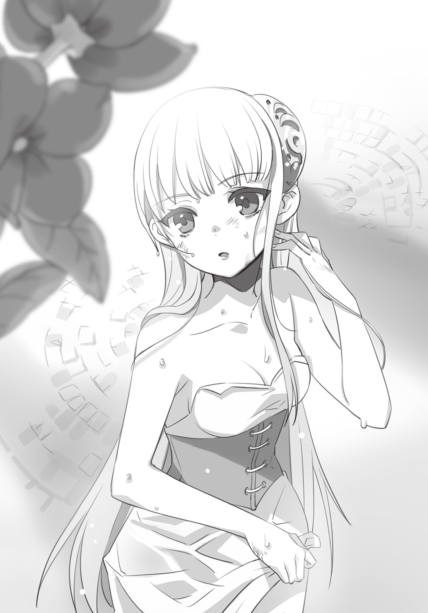
「ええ。とても好きな歌だったので、私もぴんときましたの」
ジゼルの言葉に、エヴァレットは感心した素振りを見せている。
「な、なあ......その歌って何なんだ？ この場所と関係あるのか？」
さんざんエヴァレットの屋敷で勉強させられたというのに、俺は二人の会話に出てくる大帝国史とやらがさっぱりわからない。だが、ジゼルは俺に呆れもせず優しく語ってくれた。
「何百年も前の――かつて大陸のほとんどを支配下に置いていたと言われる大帝国のお話ですわ。その頃はハイドランドもその大帝国の領地の一つでしたのよ。そんな強大な国の皇帝が新たな領土を求めて旅をしていた時、見つけたのです」
ジゼルがぐるりと地下庭園を見渡す。
「世界の果てにある砂漠、四方のどこを見ても広がる空と砂の世界にぽつんとあったオアシスで、この花が咲いていた。皇帝はその光景をいたく気に入り、千人もの兵士に砂を持ち帰らせ、自分の宮殿の中に砂漠を模した庭を作らせた......そんな古い歌がありますの」
「砂漠......だから砂が敷き詰められているのか」
果てしなく広がる砂の世界の中に、湧き出る泉。
そんな幻のような情景が、『アンブレイカブル・ガーデン』の地下にあるなんて、夢を見ているようだった。
「ハイドランドは海運の国ですもの、この花もずいぶん昔にどこかから献上されたのかもしれませんわね。誰にも見つからないように地下庭園を作り、砂の上でしか生きられない花を何代も守るだなんて......素敵ですわ」
「博識ですね」
「まあ、エヴァレットに褒めてもらえるなんて......」
ジゼルが微笑んだ時、噴水の水面が大きく波打った。
水路に繫がる排水口の一つが泡立ち、人影が揺れ――小さな白い手が現れた。
「ぷはあっ！ はあはあ。いっちばーん......じゃなかったか」
トランクを抱えたリリィが、水の中から立ち上がった。
俺たちの顔を見て、ちょっとしょんぼりしている様子だったが、すぐさま噴水中央のオブジェの周りに咲く花へと興味が移ったようだ。
「わわ、すごおい！ これ、何の種類!? ちょっと切り取って持って帰ったら怒られるかな」
「ふふ、あまり傷つけるのは止めてあげてくださいね。そこから腐ってしまうことだってありますから」
「そっかあ。困ったなあ。でも欲しいなあ」
ざばん、と再び大きな水音が響く。
リリィの後ろで、ティーダが立ち上がった。
乱れてしまった髪をひとまとめにしながら、眉を歪めている。
「はあ......水責めは止めてほしかったな......あたし、耳ん中に水が入るのが一番嫌いなんだよね」
ティーダもとくに目立った怪我はなく、無事な様子だ。
（あとは、エミリアとロゼか）
俺もエヴァレットも噴水の中から踏み出し、砂の上に立った。
乾いた砂はあっという間に水を吸いこんでゆき、俺は初めて触れる砂漠に驚くばかりだった。
「エヴァレットは、砂漠ってどんな場所か知ってたんだろう？ すごく暑いんだろうな」
「......シオン、見て」
「えっ？」
エヴァレットが噴水を指さした。
水面がまた揺れている。だがさっきとは違い、水がどんどん引いていくのだ。よく目を凝らして見ると、俺たちが出て来た水路に流れ込んでいるようだ。
「逆流してる......この噴水、ずっと水が溢れ出ているわけじゃないんだ」
「試練が終了して、迷宮を満たしていた水が引いているからだと思うわ」
「待てよ、まだエミリアとロゼが戻って来ていない......エヴァレット、あの水路以外に脱出する術ってあると思うか？」
エヴァレットが言葉を呑み込む。
それは今まで見たことがない仕草で――一番聞きたくない答えだった。
「......シオン！」
止められるより先に、体が動いていた。
俺は水の引いた噴水の底に手をつき、排水口へと乗り込んだ。這うようにすればなんとか進めそうだ。
まだ湿り気があるせいか、水路に生い茂る蔦の棘は柔らかい。
（エミリア......ロゼ......どうか他の道を見つけて、無事でいてくれ）
祈りながら、俺は這い進んだ。
来た時の何倍も時間がかかった気がする。
しかし、俺は見てしまった。水路の幅が狭まった先に細い足首が横たわっている。
美しい装飾の靴を履いた――エミリアの足だ。
（噓だって言ってくれ。今すぐ起き上がってくれ）
腕を伸ばし、エミリアの足首を摑んだ。
思いっきり蹴り飛ばされてもいいと思った。
だがエミリアの反応はなかった。
「エミリア、エミリア!!」
俺は大声でエミリアの名を叫び続けながら、彼女の体を引き寄せた。
それからどうやって水路を這いずり、再び地下庭園まで戻ったのかは記憶から抜け落ちてしまった。
気がついた時、俺は再び水路のほうへ向かおうとして――足に力が入らず、床に手を突き蹲っていた。
「シオン、あなたはここにいて。ロゼはわたしが捜すわ」
俺の肩を摑んだエヴァレットの指先は熱かった。
エヴァレットは俺に小さく頷いてから、水路の中へと入っていった。
＊＊＊
「エミリア、おい！ 目を覚ませ、返事しろよ!!」
何度肩を揺らしても、エミリアの頭は力なく垂れてしまう。
あっという間に唇が紫色に変わっていき、エミリアから命が零れ落ちていくのを俺は目の当たりにした。
「どいてっ！ あたしがやってみる」
ティーダがエミリアの胸元を力いっぱい叩きつけるように押す。
何度も何度も、反動でエミリアの体が跳ねるほどの強さだった。
ティーダがエミリアの胸を押し続けるすぐそばで、リリィがトランクを開いた。真剣な眼差しでいくつかの小さな薬瓶の蓋を開き、混ぜ合わせている。
「リリィ、できるよな」
「うん、トランクの中に水は入ってなかった。エミリアは強いもん、きっと大丈夫。信じてる」
リリィが手にしたのは、金属製の注射器だった。
深呼吸をしてから、リリィはそれを振り上げて勢いよくエミリアの肩のあたりに突き刺した。
びくん、と大きくエミリアの体が弓なりに反った。
「......う......くっ！」
エミリアは目を覚ますと咳き込みながら水を吐き、朦朧とした意識のまま腕を伸ばした。
「ロゼ......ロゼ、早く......わたくしの手を摑んで！ 早く......！」
（エミリアは、まだ迷宮の中にいるんだ――）
俺はエミリアの手をしっかりと摑んだ。
「ロゼは今エヴァレットが捜しに行ってくれてる。エミリア、さっきまでずっと気を失っていたんだ、だから落ち着いてくれ」
「わたくしが......？ ここは......どうして、わたくしだけが......？」
顔に生気が戻り、エミリアは自分の置かれた状況を理解し始めていた。
体が震えだしたのは、長く水中に浸かっていたからだけではない。
伸ばしていた手の向こうに親友の姿がない理由が、聡明なエミリアにはすぐわかったからだ。
どう、声をかければいいのかわからなかった。
俺も、ティーダもリリィも、ジゼルも――言葉もなく立ち尽くしていた。
その時、噴水のほうから水滴の音が響いた。
「ロゼ！」
エミリアが起き上がり叫んだ。だが視線の先に現れたのはエヴァレットの姿だった。
水の出ていない噴水の縁に足をかけ、エヴァレットがすっと立ち上がる。
あの狭い水路を通り抜け戻ってきたのだ。
「......ロゼの姿は、ありませんでした」
「噓、そんなわけないわ、だってロゼはわたくしなんかより、ずっとずっと......どうして」
「エミリア、恐怖や焦りは記憶を歪めます。真実だけを思い出して......あなたの目に映ったそのままを」
「わたくし、ロゼを置いてきてしまったの？ 手を取り損ねてしまったから......？」
「いいえ。ロゼはいない――ただそれだけ。息絶えた姿すらなかった」
エヴァレットはエミリアの顔を両手で挟み、その目をまっすぐ見据えた。
「わたしは、あなたがこの『試練』で失敗を犯し、命を危険にさらすような愚かな人だとは思っていないわ」
エヴァレットの声が、エミリアの心の奥底まで滴り落ちてゆく。
苦しげな嗚咽を漏らしてから、エミリアは目の前の悲しみを追い払うように頭を振った。
「ええ。あの水路を見つけたのは、ちょうど腰のあたりまで浸水してきた時でしたわ。わたくしはあの植物の特性に気づき、蔦を払うためにドレスを水に浸して進みましたの」
「なるほど、賢い方法だわ。わたしたちよりも早くここへと辿りつけたはず」
「ロゼが――最初はロゼが行くと言ってくれたのをわたくしが止めたのです。だってあの子、刺繡をしていたから......お姉さまのためにと......」
俺は、見た。
唇を嚙み俯くエミリアの指先に、いくつもの切り傷ができている。
（エミリア、ロゼの指を守るために......自分から先に行くって言ったのか）
「あの時、わたくしが先に行くと言ったことをロゼは怒っていたのでしょうか」
エヴァレットは静かに首を横に振り、囁いた。
「思い出して、ただあったことだけを。それだけがロゼが消えた理由を知る鍵だから」
「ロゼはわたくしのすぐ後に続いて来ると思っていましたわ。でも、いなかった。わたくしが一度戻って水路の口から顔を出した時には、すでに迷宮内の水が上に来ていて......」
エミリアは目を閉じ、言葉を呑み込んだ。
その瞼の裏側に浮かぶ光景は、エミリアにとって絶望に似たものだったのだろう。
「わたくしはロゼが水の中に沈む瞬間を見ました。わたくしが手を伸ばした時――そう、そうだわ！」
「......エミリア」
「あれは一体、誰？ そう、あの時、水しぶきが立ちわたくしの顔にかかったわ。何も見えなくなって、そのまま......」
エミリアの記憶はそこで途絶えたようだ。
エミリアはその後、水に押し流され気を失い、俺が見つけるまでずっと水路の中に閉じ込められていたのだろう。
「エミリアの話がほんとだったら、ロゼは誰かに連れていかれちゃったの？」
「あのさ、何かワケあって――例えばロゼだけが失格ってなって、学園側の誰かが連れていったとかさ！」
「でも、それならばエミリアがこのような状態になるのは納得できません。〝薔薇の季節〟の『試練』は苛酷といえど、死者を出しては意味がありませんもの」
ジゼルもエミリアに寄り添い、濡れた髪を優しく撫でながら頭を垂れた。
きっとここにいる皆の頭の中に、その予感が訪れていたはずだ。
それを口にしたのは、エヴァレットだった。
「〝青い薔薇〟を蕾のうちに刈り取ろうとする者がいるのかもしれない」
「どういうことだよ、それって......」
「あってはならない何かが、この〝薔薇の季節〟に起きているという意味よ」
俺の問いに、エヴァレットは静かにそう答えた。
＊＊＊
これからどうなるのか――。
誰もがそう思いながら、〈試練の間〉に戻ってきた。
『第二の試練』を乗り越えた候補生たちがずぶ濡れであることがわかっていたのか、侍女たちが着替えやタオル、湯の入った器を運んできた。
もしもここに全員が揃っていたら、いつものようにティーダが冗談を言ったりして、笑いながら夜を迎えられただろう。
だけど、今は違う。
「......俺は、自分でするから」
手伝ってくれようとした侍女に断りを入れ、俺はベッドの脇に隠れて着替えた。
（俺はたぶん、何もできない。彼女らと違って本当の〝青い薔薇候補生〟なんかじゃないから）
だとしたら、俺は何をするべきなのか。頭の中でずっと同じ考えがぐるぐると回っている。
今の俺にできることは、たった一つで、それはあまりにも小さなことだ。
俺は立ち上がり、着替えを終えたエミリアの座るベッドのほうに向かった。
「......エミリア」
はっと顔を上げたエミリアは、俺に向かって微笑もうとして......苦しげだった。
いつも輝いている彼女の魂の色が抜け落ちてしまっている。
叫び出してしまいたい衝動も、自分を責める気持ちも、必死に押し殺しているのだ。
「いつものエミリアじゃなくて、いいだろ」
「......っ」
「ここにいるのは、俺たちだけだ。エミリアみたいになりたいって憧れたり、頼ったりしている子はいない。初めて会った時、俺に言ってくれただろ――同じ立場だって」
エミリアの瞳から、ぽろぽろと涙が零れた。
俺の前に立っているのは誇り高き令嬢ではない、ただの女の子だった。
「全部、ちゃんと言ってほしい。それから、次のことを決めよう。そうじゃなきゃダメだ」
「......わたくしは」
エミリアは震える声で続けた。
「ずっとずっと、子供の頃から〝青い薔薇〟になりたくて、絶対なると決めて、今日まで生きてまいりました......でも......ロゼを......かけがえのない友を......大切な試験で見失ったわたくしに......そんな資格は、ありません......っ」
涙は次から次へと溢れ、エミリアの頰を伝い流れ落ちてゆく。
「どうすればいいの......こんなわたくしに......ロゼを見つける術など......これ以上『試練』を受けることなど......できない」
「エミリア、あなたは『試練』を続けるべきよ」
「......エヴァレット」
「あなたはロゼを見つけたい。そうでしょう」
「......ええ」
「『試練』を続けましょう。なぜこんなことが起こったのかを解き明かすには、ロゼを見つけるには......きっと〝薔薇の季節〟から降りてはならないと思うから」
「けれど......候補生たちの命が狙われている可能性もありますわ。わたくしだけではなく、あなたも、皆さんも......」
「もとよりわたしたちは、女王陛下をお守りするために、命を賭ける存在のはず」
エヴァレットの言葉は、小さな炎となって全員の胸に宿った。
〝青い薔薇〟とは何なのかを、俺に教えてくれたエミリアは、涙をぬぐい顔を上げた。
「そうね。〝薔薇の季節〟を続けることこそが、ロゼを救うための一番の近道になるのかもしれないわ」
「答えは必ず見つかるはず、全てに意味はあるとわたしはっ――!?」
「......エヴァレット」
エミリアが、エヴァレットの体を抱き寄せた。
これは予想できなかったようで、エヴァレットも思わず口を開いたまま、行き場のない指先を躍らせていた。
「ありがとう。本当は......あなたはずっと、ずっとわたくしのことなど見てはいないと思っていたの」
「そ、それは、見ていないわけ、ないでしょう!?」
「いいえ、だっていつも遠くを見ていらっしゃったもの。どうか、エヴァレット......わたくしに力を貸してください。同じ候補生として......」
「......わかってます！ 言われなくとも、わたしはそうすると決めていましたから」
エミリアの腕が解かれ、エヴァレットは顔を真っ赤にしながら何故か俺のほうを見た。
（いや、お、俺を今見られても――）
と、いうのは伝わったようだ。
エヴァレットは姿勢を正し、頰を赤く染めている熱を振り払うように大きく息を吸った。
「エミリア、あたしたちも絶対ロゼを見つけるぞって気持ちでいっぱいだよ」
「リリィも！ 悪いヤツを見つけたら、いっちばんひどい目にあう毒をつけて引っかくって決めた！」
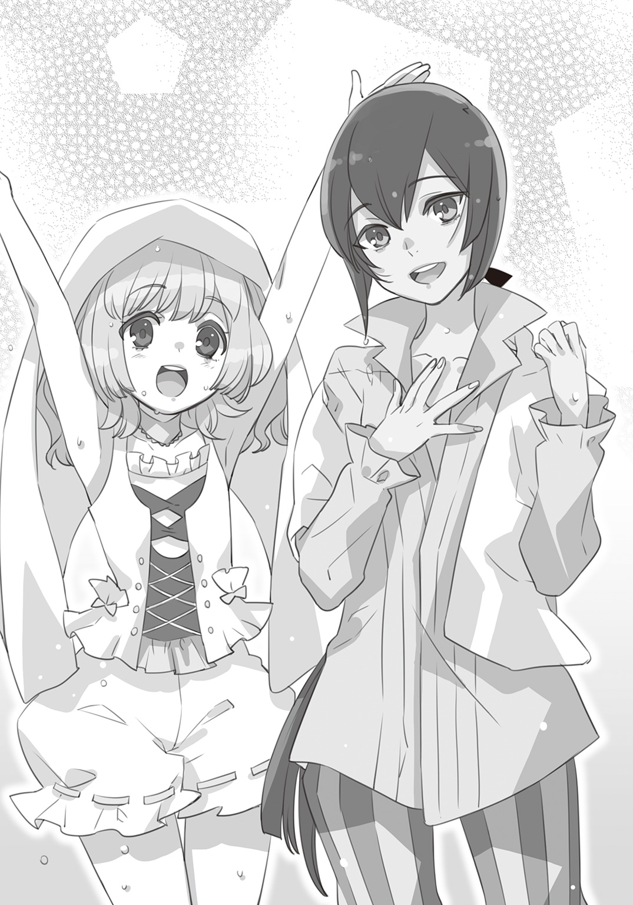
ティーダが張りのある大声を響かせる横で、リリィが爪を立てるようなポーズをとる。
「ありがとう......皆さん......」
そんな仲間の励ましや仕草を見て、エミリアの表情がやっと緩んだ。
「後は、学園側が......この事態にどう対応するかですね」
ジゼルがそう言ったのと同時に、ぎい、と床が軋む音がした。
全員に緊張が走る。
候補生たちは一瞬にして獲物を狙う狩人のような空気を纏い、音のしたほうを見つめた。
「――学園長」
侍女を一人もつけずに学園長が現れたことに、全員が驚きを隠せなかった。
その表情は硬く、やはりこの『アンブレイカブル・ガーデン』に何かが降りかかっていると予感させた。
「そのまま。休んだままで結構です。ロゼ・ギュールズのことは報告がありました。
「学園長、ロゼは......ロゼは見つかったのですか？」
「いいえ、残念ながら何者かが関与したかどうかですら、まだわかっていません」
「......そんな」
エミリアが肩を落とす横で、エヴァレットが言った。
「学園長も〝薔薇の季節〟に異変が起きたとお思いなのですね」
「この『試練』が行われていることを知る者は『アンブレイカブル・ガーデン』の少女たちと極わずかな者のみ。それにも拘わらず女王陛下直属の機関から〝青い薔薇候補生〟が行方知れずになったのです」
学園長はこの場にいる全員をぐるりと見渡した。
「これは、あなたがただけではない。女王陛下、ひいてはハイドランド王国に起きた異変の種とも言えるでしょう」
「じゃあ、〝薔薇の季節〟はやめないって......ことなんだな」
俺は学園長に向かって、初めて言葉を投げかけた。
それは俺にとって、覚悟を決めることに等しかった。
何の力もない、役立たずな奇術師見習いの俺にとって、ここにいる意味を自分に問いかけているような――。
「その通りです。言葉を濁さずに言うならば、あなたがた候補生はこの異変の種を摘むための囮となるのです」
しんと空気が静まり返った。
だがここに恐れを抱く者はいない。皆が、前を向いていた。
「『第三の試練』はハイドランドの城下で行われる夏至祭と共に始まります。これが最後の『試練』となり、〝青い薔薇〟にとって最も大切なものが問われるのです――それは、決して裏切らないこと」
候補生たちは頷いた。
〝盾〟という特別な関係は、女王のもとに参じた後も変わらないという。
互いを裏切らず、互いのために命を賭けられるかどうか。
そして、どこかで根付き、咲こうとしている異変の種を刈り取ること。
それが俺たちに課せられた、三つ目の『試練』だった。
第５章
14．候補生に課せられしもの
『第二の試練』での騒動を受けて、異例のことながら候補生は数日間体を休めるようにと言い渡された。水路からの脱出で負った傷はすぐに癒えたが、心の奥に生まれた小さなひびの痛みは、ただ呑み込むようにしてやりすごすしかない。
そして、『夏至祭』が行われる日が明日に迫っていた。
そんな日の昼下がり、俺は〈試練の間〉の自分のベッドに寝そべり、本を読んでいた。
「......ねえ、シオンは夏至祭の『清らかな乙女』の儀式は見たことがある？ リリィ、人がいっぱいの所が苦手だから一度もないの」
いつの間に近づいてきたのか、リリィがベッドの脇からひょっこり顔を出した。
「ああ、見たことあるよ。すごくきれいな子が馬車でやってきて、頭の上に乗せた花冠やら花びらを投げるんだ」
「わあ、そんななんだあ。でも、投げてどうするの？」
「川に流して占ったり......あと、花びらは拾ってお守りにしてる子もいたな」
「それ、あたしやったことあるよ。『清らかな乙女』ってやつ」
ちょうど後ろを通りかかったティーダの言葉に、俺もリリィもぽかんと口を開いた。
「なんでそんな顔するかな。まだリリィがここに来る前の夏至祭で、熱を出した子の代わりであたしがやったの！ 『清らかな乙女』はこの学園の令嬢が務めるものなんだからね」
「ほんとに!? リリィも馬車に乗るほうならやってみたいなあ」
「あたしたちは、無理だよ。だって候補生だもの。候補生はだいたい『夏至祭』で乙女の役になった子を守るんだ」
「そうなの？ そんなの知らなかった......乙女じゃなくて王子様みたいだね」
「いつもなら乙女の警護ってだけだろうけど......今年は違うんだ、しっかり気を引き締めなよ」
ティーダの言葉に、リリィはしゅんとなる。そんな俺たちの話がちょうど途切れた時、エヴァレットとエミリアが練習場から戻ってきた。二人は剣を持っているほうが落ち着くという点では共通していて、ここ数日は一緒に稽古をして気を紛らわしているようだった。
「エミリア！ 足首の痛いのは治った？」
リリィがエミリアに駆け寄る。
「ええ、リリィのお薬がとてもよく効きましたわ。もうすっかり良くなって、エヴァレットとも十分稽古ができるようになりました」
「......そうですね。わたしも腕が鈍らずに助かっています」
エミリアの稽古に付き合っているのは、人付き合いが苦手なエヴァレットなりの慰め方なのだろう。あるいは正反対の性格だから、意外と気が合うのかもしれないけれど。
「皆さん、お集まりかしら......？」
ジゼルが〈試練の間〉の戸口に姿を現した。
「もうすぐ学園長がいらっしゃるそうです。支度を整えたら食堂で待つようにとのことですわ」
その言葉の意味するところは、全員がわかっていた。
ついに『第三の試練』が始まるのだ。
＊＊＊
「皆さん、揃いましたね」
食堂に集まった候補生の顔を見渡し、学園長は話し始めた。
「夏至祭は皆さんも知ってのとおり、国民がこの一年の豊穣を願う大切な一日です。そして女王陛下が国民の前にお出ましになる数少ない機会でもあります」
学園長の言う通り、夏至祭は一般市民にとって心躍る祭りだった。商人はこぞって市場を盛り上げ、普段は目にしない珍しい菓子や食べ物が並ぶ。郊外で農地を耕す人々もこの日ばかりは城下を訪れ、踊り歌いながら練り歩くのだ。
俺自身も子供の時から夏至祭を楽しみにしている一人だったし、花火の包みを手に通りを走り回り、『清らかな乙女』の占いに目を奪われていた。
（だけど、俺たちにとって、今年の夏至祭は......決して楽しい日にはならない）
そんな俺の予感を反映したように、学園長の声が低くなる。
「先日、あなたがたには『異変の種』という言葉を使いましたが、本当はもっと根深い......この国を揺るがそうとしている異分子が存在します。その中でも『反女王派』と呼ばれる過激派が十年前から台頭してきました」
（十年前......？）
それはちょうど父が姿を消した頃だ。だが少なくとも俺の知る限りでは、内乱だの異分子だのといった物騒な問題がハイドランドに起きていたとは思えない。
「ふふ、信じられないような顔をするのは当たり前ですよ？」
「あ......す、すみません......」
俺の疑問など、学園長にはお見通しのようだった。
「十年前のことを知る者はほとんどおりません。女王陛下の身に起きたある出来事を嗅ぎつけた『反女王派』による反逆事件です。全ては闇に葬られ、今では覚えている者もいないでしょう。だが、それは確かに起こりました」
学園長はステッキを置き、長いスカートの端を上げた。足首までのショートブーツの上に見えたのは黒光りする木の表面――学園長の右足は義足だった。
「先々代から女王にお仕えしていた私の、〝青い薔薇〟としての最後の事件となりました」
長く続く平穏な時代の裏で、その光を守ろうとする影があったのだ。
秘められた大きな事件の爪痕に触れて、俺たちはただ言葉を失うばかりだった。
「今、その時とよく似た状況が起きているのです。十年間沈黙していた『反女王派』が動き出し、静かに内乱を起こそうとしています。まさか候補生が狙われるとは、私も思ってはいませんでした」
『第三の試練』として、候補生はどんな役目を担わされるのか。静かに流れる緊張した空気の中で学園長は一枚の大きな紙を広げた。それはハイドランド城下の地図だった。
「まず、『清らかな乙女』の儀式。これは毎年、『アンブレイカブル・ガーデン』の一般生徒が乙女の役目を務めます。ティーダ、あなたは一度やったことがありますね？」
「は、はい......代理、ですけど」
「この儀式は、数名の乙女を乗せた馬車で城下を回り、民衆の前で花冠の占いを見せるというもの。今年は三台の馬車を出すことになりました。あなたがた候補生は、その馬車に付き添い護衛をする役目を果たしてもらいます」
学園長は地図をなぞり馬車の進路を示した。『アンブレイカブル・ガーデン』から出て、森を抜け城下街に入り、三方に分かれる。行きつく先は大通り沿いの広場だった。
「そしてもう一つ......今年は『女王の花冠の儀式』で、女王陛下の身代わりを務めること」
（えっ......今、女王の身代わりって......？）
俺を含めた全員が、地図から視線を上げ、学園長を凝視した。
夏至祭で最も重要とされている『女王の花冠の儀式』は昼と夜の狭間、日没の時間に行われる。城下の一番広い庭園に立つ塔から、花冠を放つという儀式だ。何千もの人の前で行われる儀式で、女王の身代わりを務めろと――学園長が言った。
「『反女王派』の手がどのように迫ってきているのか、まだ定かではないのです。女王陛下に降りかかる危険は最大限避けなければなりません」
「でも、それって......もしかしたら身代わりになって死んで......」
「――シオン」
エヴァレットが制するように、俺の膝の上に手を置いた。
「それが〝青い薔薇〟の役目。候補生がその役目を果たせるのは、光栄なことなのです」
皆、ゆっくりと頷いた。覚悟の上で、誰かが挑まなければならない役目だった。
「ここに儀式の際の、女王陛下のお召し物があります。女王陛下に近い背格好の者がこれを纏い、護衛を一名......その二人は明朝、〈試練の間〉で私の迎えを待ちなさい。残りの四名は正装し、大庭園に来ること。そこに馬車が用意されています」
学園長は全員の目を見据え、食堂を後にした。
しばらく続いた沈黙の後、ジゼルが儀式に使われる女王のドレスをトランクから取り出した。床まで届く長い裾のドレスは、華美な装飾はないが高貴な佇まいを思わせる仕立てだ。
「これ、女王陛下の体に合わせて作ってあるのか......あたし、ちょっと丈が足りないな」
ティーダが自分の体にドレスを当ててみたが、裾から足首が出てしまっていた。
「リリィも無理だよう......ぶかぶか」
ジゼルとエミリアも同じく体に当て始めた。どちらも背丈は問題ないようだが、二人して何故か俯いている。
「どうしたんだ？」
「いえ......その......」
曖昧に微笑むジゼルの横で、エミリアが真っ赤になっていた。
「あ――ごめん。ドレスが入るかどうかなんて、あんまり聞くもんじゃないよな」
「ち、違いますの！ ちょ、ちょっとお胸が苦しそうで......」
俺はそこまで言われて、ようやくエミリアが顔を赤らめた理由に気づいた。
「次は、わたしですね」
エヴァレットは女王のドレスを身に当てた後、小さくため息をついて呟いた。
「わたしには、ちょうど良いようです」
ふと顔を上げたエヴァレットが、もどかしそうに俺を見ていた。
＊＊＊
その夜、〈試練の間〉の明かりが落とされた後――寝ていた俺の肩を、誰かがそっと叩いた。
「......エヴァ――」
「しっ」
「声は控えて、見回りが来ないとも限らないから」
「な、何かあったのか？」
エヴァレットは俺をロビーに連れて来た。すでにランプは消され、天井付近にいくつも並ぶ小さな明かり取りからこぼれる月光だけが頼りだった。
「シオン、あなたがもし生きることを望むなら......今すぐここを出なさい。お父様のことはわたしがなんとかします」
「何言ってるんだよ！ 俺も一緒に行く。ロゼも見つけなきゃいけないし、夏至祭だって......」
「今までの『試練』とは違う。何者かが候補生の命を狙っています。あなたはわたしたちのように訓練を受けていないわ」
エヴァレットの声は、俺を煩わしいと思ってのものではなかった。
俺をまっすぐ見つめる瞳にも、心の底から俺の身を案じる気持ちがこもっている。
「シオンが最も『死』に近い......その意味がわかっている？」
「......そうだな」
「なら、出ていくのは今しかないわ。明日は夏至祭で国中が騒ぎに包まれているから......」
「出て行かない、一緒に行くよ」
「シオン！」
「俺は俺なりに戦うつもりだよ」
エヴァレットは俺の言葉に何も言い返せず、唇を真一文字に結び思いあぐねていた。
「あの月を消してごらんなさい。それほどまでに、シオンがやろうとしていることは無茶なの」
「......消すよ、やってみる」
もちろん、今の俺には種も仕掛けも用意する時間がない。俺はポケットに入れたままだったスカーフを取り出し、きょとんとしているエヴァレットの頭に被せた。
「な、何をするの!? シオン、ふざけている場合じゃないの！」
驚きや怒りは注意力を逸らす。俺はスカーフを払おうとしているエヴァレットの肩をとんと押して体の向きを変えた。そして最後に、エヴァレットの瞳を正面から覗きこむ。
「あの窓を、見てくれ」
俺が窓に目をやると、エヴァレットの視線も同じように動く。
「――っ！」
エヴァレットが息を呑む。
しかしすぐさま平常心を取り戻し、冷ややかな視線を向けながらため息をついた。
「シオン。見ている方角を変えたのね」
言葉とタイミング、視線の誘導。俺はたったそれだけで魔法のように月を消した......が、それは一瞬で解けてしまった。
「やっぱり、スカーフだけじゃダメだな。時間と装置さえあればもう少しは......」
「装置って、本当に月を消す仕掛けがあるの？」
「今やったのと同じことだよ。例えば小屋や客席自体をゆっくり回転させて、見ている方角を変える方法ってのがある。夜の森でやったら、案外見破られないもんなんだってさ」
「......本当、あなたって人は」
エヴァレットが深いため息をつく。だがその顔から、さっきまでの緊張感が消え去っていた。
「エヴァレット、俺は一緒に行くよ」
「わかりました。ですがくれぐれも――気をつけて頂戴」
もちろん、と俺は強く頷き返した。
15．第三の試練――〈夏至祭〉
一夜明けて、ついに『夏至祭』が始まった。
その日の朝、エヴァレットは早くから起き、女王のドレスに着替えていた。普段とは全く違う装いで〈試練の塔〉の前に立つ姿に、俺は思わず息を呑んだ。だが、その姿をきれいだと軽々しく口にはできなかった。
「エヴァレット、『第三の試練』が無事に終わることを、祈ってる」
「――ええ」
月の光を宿した銀の髪の狭間から見える瞳には、炎が宿っている。この大役を前にしても重圧を撥ね除ける強さ――エヴァレットの佇まいは、まるで戦の女神だった。
「私も、全身全霊をかけてエヴァレットを守りますわ」
「うん......どうか、頼む」
女王の身代わりを務めるエヴァレットの護衛には、ジゼルがつくことになった。儀式の間、塔には男性が立ち入ることが禁じられている。男装という設定の俺は避けるべきだろうと、ジゼルが割り当てられたのだ。
残った俺とエミリア、ティーダ、リリィが『清らかな乙女』たちの乗る馬車を警護する。
「シオン、あんたも早く着替えろよ！ 候補生のマントも忘れるんじゃないよ」
「うんうん、今日はこれが一番重要なんだよお」
候補生の証のマント――初めてここに来た日以来、一度も着けていなかった。
（これを纏う意味が、やっと少しわかったかもしれないな）
首元で留める小さなボタンにはまだ慣れていない。
ただほんの少し、気持ちが引き締まる気がした。
＊＊＊
数日ぶりに、俺たちは〈試練の塔〉から外へ出た。
大庭園に停められていたのは、小舟に車輪がつけられたような、屋根のない飾り馬車だった。
馬車の座席には『清らかな乙女』に選ばれた令嬢たちが、緊張した面持ちで向かい合わせに座り、俺とエミリアの二人、そしてティーダとリリィが一人ずつ、三台の馬車に分かれた。
「......ねえ、このお方、エヴァレット様の」
「こんなに近くでお顔拝見するの、わたし初めてです......！」
「あら、それならエミリア様だって、今日も麗しいわ」
令嬢たちの囁きは相変わらずだが、さすがに今日はこそばゆさを感じる余裕はない。
『アンブレイカブル・ガーデン』から出発した馬車は、学園長が言っていた通り〈王の禁区〉を抜け、城下街を目指す。しばらく並走して走っていた三台が、分かれ道に差しかかりそれぞれ儀式が行われる場所へと向かい始めた時――
がくん、と馬車が左右に大きく揺れ、令嬢たちは悲鳴をあげた。
「慌ててはいけません！ 身を屈めてしっかり椅子を摑んで！」
エミリアの声で、なんとか令嬢たちは動揺を抑えた。
（今のは......ただの事故なのか!?）
俺が前のめりになり、御者のほうを見たその時――
「ぐあああっ！」
突然、大きな破裂音が鳴り響き、御者が振り落とされた。
耳鳴りがするほどの激しい音の連続に、馬車を引いていた馬がいななき、前足を振り上げた。
「――いけないっ!!」
エミリアがとっさの判断で、空になった御者の席へ飛び移る。
なんとか手綱を手にしたものの、暴れ出した馬はそのまま走り続けた。
「シオン！ 彼女たちが振り落とされないよう、守って！」
「......ああ！」
今にも車輪が吹き飛びそうなほどのスピードで、馬車は右へ左へと激しく揺れた。転倒しなかったのはエミリアの手綱さばきが優れているからだろう。
「このまま街へ行っては......大きな事故になるわ......」
馬車は大きく揺れながら方向転換し、〈王の禁区〉へと進路を切る。
もはや悲鳴すら出せないほど震えあがる令嬢たちを守りながら、俺は森の奥を見つめていた。
（さっき花火を投げ入れた奴は、どこに行った？）
その時、遠くから不思議な音がし煙が見えた。笛に似た音を立て、空に何かが放たれたのだ。
「シオン......大変だわ......あれはティーダが使う矢で......非常事態を知らせるもの......」
「それじゃあ、こんな目にあってるのは俺たちだけじゃない!?」
「――危ないっ！」
エミリアが悲鳴に近い叫び声をあげた瞬間、何かが耳元をかすった。少し遅れて、きんと耳鳴りがやってくる。
「みんな、絶対に頭を上げちゃだめだ！」
俺の目に映ったのは、短銃を持った二つの黒い影――仮面と真っ黒なローブで全身を覆い隠した賊が馬に乗り、俺たちの馬車を挟んで並走していた。
パン、と再び破裂音がする。
エミリアもそれに気づき、馬車をわざと蛇行させて攻撃を振り払おうとした。だが相手も手練れなのか、巧みに近づいては弾丸を放つ。
（このままじゃ、馬車がもたない!!）
俺は覚悟を決め、立ち上がり――飛んだ。
「――シオン!!」
エミリアの叫び声が一瞬にして離れてゆく。
俺は賊のうちの一人の馬に飛びかかった。振り落とされそうになるのを必死に耐え、もみ合ううちに馬車は別の方向へと走り去る。
（待て、なんだろう......この匂い）
必死にしがみついた相手から、かすかに覚えのある匂いがした。
胸がすっとするような柑橘系の匂いだ。
（......ベルガモット？）
俺はどこでその言葉を覚えた？ どこでこの匂いを記憶したんだ？
しかし逡巡する間もなく、俺の体はいきなり空中に投げ出された。
「わ、あああ!!」
「――っ」
土埃を立てながら、俺たちを乗せていた馬が倒れた。
幸い、森の柔らかな土の上に落ちたことで大きな怪我はなかった。
地面に手を突き起き上がった俺の目の前に、あの黒いローブの賊が倒れている。
（まだ、気を失っているのか）
そっと近づき、俺は賊の仮面に手をかける。
その下にあったのは――ロゼの顔だった。
「どうして......何故ロゼがここにいるんだ......!?」
俺の声に気づきロゼが目を覚ました。倒れたままじろりと俺を睨みつける目は、ガラス玉のように虚ろだった。
「ロゼ、俺だよ......シオンだ！」
答えはない。ロゼは心を失っているようで何も反応を示してはくれなかった。
「......一体誰がこんな......ロゼ......」
ロゼの頰に手を伸ばそうとした時、一発の弾丸が俺たちを引き離した。
「――っ！」
もう一人の賊が追いつき、俺とロゼを見つけたのだ。そして馬から降りると同時に声をあげた。
「――行けっ！」
仮面の下から聞こえてきたのは、予想に反して若い女の声だった。
ロゼは命ぜられるがまま、仮面の女が乗っていた馬にまたがった。
「ロゼ、行くな！ 皆ロゼを捜してたんだ！」
俺の声が届くよりも早く、ロゼは木々の間に吸い込まれるように馬を走らせていた。
「無理だよ、あの子にお前の声は届かない」
「......あんたは誰だ......ロゼに何をした!?」
「さすが、あのエヴァレットにまとわりついているだけあって賢い奴だ。ロゼの様子がおかしいことに気づくとはね」
（今――この女、エヴァレットの名前を口にした。俺たちのことを知っているのか!?）
「残念だがどうあがこうとお前にあの子は救えない。あの子の暗示が解けるのは、命を失う時だけだ」
「......っ!!」
女はゆっくりと仮面を脱ぎ捨てた。
恐ろしく冷たい眼差しをしているが、口元は柔らかな微笑みを浮かべていた。
（この微笑み、この声、俺はどこかで会ったことが......）
頭の中で記憶が逆回転していき、ふとある一点で止まった。
（そうだ、あの時ロゼと一緒にいた――）
ロゼが食堂で刺繡をしていた時、妹を見守るように微笑みを浮かべていた侍女。
（いつからなんだ？ あの日の夜だけじゃない、この女は侍女のふりをしてずっと学園内に潜んでいたのか？）
「ずっと......侍女の姿に化けて学園の中にいたのか」
「ははは、ご名答だ。お前がいたおかげで計画もうまく運んだよ」
「......何？」
「いくら暗示をかけようとしても、隙がなければ無理だ。強靭な精神力を持つ候補生の心に入り込むのは簡単じゃない。だが、あの子がお前に心を乱してくれたおかげで、命すら懸けてくれる深い暗示をかけられたのだ」
「――ロゼはそんなに弱くない！」
「いいや、弱いさ。大事な大事な親友に想い人ができたせいで......心が砕けるぐらいにね」
女の言葉に、俺は頭を殴られたような衝撃を受けた。
「......そこまでして」
抑えきれない怒りが体の奥から湧き出して、今にも涙が零れそうだった。
ロゼやエヴァレットたちがどんな思いをして候補生になったのか、俺は知っている。
何年も鍛錬を積み、他の誰より強さと賢さを手に入れた者だけが辿りつける場所を目指して、彼女たちは苦しみや痛みを乗り越えてきたのだ。
そんな彼女たちを濁らせる者を、許せるはずがない。
「何でそこまでして、候補生たちをむちゃくちゃにしたいんだっ！」
「つまらない女王の茶番を、終わらせるためさ」
きっと女は俺の怒りを増幅させようと、女王を貶めるような言葉を吐いたのだろう。
だがこの〝薔薇の季節〟を『茶番』と呼び、候補生を陥れるのが目的ならば、もっと残酷な終幕を用意できるはずだ――例えばロゼと、俺や他の候補生を殺し合わせるというような。
（この女は最初から候補生を狙っていた。でもそれは目的じゃなく、手段だ）
「ロゼをどこへやった」
いつの間にか俺の怒りは消え去り、代わりに頭の中で次々とたくさんの言葉が浮かび上がる。
学園長の言っていた、女王制度を潰そうとする『反女王派』。
『アンブレイカブル・ガーデン』に侵入し侍女に化けていたその一派の女。
暗示をかけられ操られてしまった候補生。そして、〝薔薇の季節〟の最中に行われる夏至祭。
（そうか......！ 女王制度を覆すには一番手っ取り早く、そして国中の者が納得するような方法があるじゃないか）
それは、候補生たちによる女王暗殺。
女王を支え、いずれこの国の新たな女王ともなるべき存在の〝青い薔薇〟。
その教育機関である『アンブレイカブル・ガーデン』の生徒が、女王に危害を与えるところを民衆が目にすればどう思うだろうか。たとえ暗殺が未遂に終わろうとも、現在の女王制度を覆す大きな要因になるだろう。
「あんたの本当の狙いは、俺たちを......候補生を使って女王制度を覆すことなんだな」
女の顔から笑みが消えた。言葉もなく俺をまっすぐ見据え、女は黒いローブの内側から手を出した。その手には弓なりに湾曲した鋭いナイフが握られている。
女から湧き立つ殺気が、俺の推測が真実なのだと教えてくれた。
俺が間合いを取ろうとじりじりと下がるよりも早く、女が瞬時に距離を詰めてきた。瞬きする間もなく、女は身を屈め素早く回し蹴りを繰り出してくる。
「......くっ」
まともに側頭部を蹴られ、俺はそのまま地面へ仰向けに倒れ込んだ。すかさず俺の上に馬乗りになった女が、ナイフを逆手に持ちかえた。
「ロゼは便利な手駒になってくれたよ」
「――黙れ」
振り上げられたナイフが、ぶん、と風切り音をたてる。その切っ先は寸分の狂いもなく俺の喉元を狙っていた。
（死にたくない、ここで俺が死んだら、ロゼもエヴァレットも......救われない）
「......シオンッ！」
短い叫びが聞こえた――エミリアだ。
次の瞬間、俺の体の上にあった女の重みが消えた。気配を殺し疾風のように現れたエミリアに体当たりされ、女はごろりと地面に転がっている。だが女も素早く体を起こし、エミリアに向かい合う。
（速い――！）
エミリアの細くしなった剣と、女の鋭利なナイフが何度も鋭い音を立て交じり合う。
互いに身を翻し、押しては引いてが繰り返される。女のナイフが煌めきながらエミリアの喉に狙いをつけた。エミリアは一歩も退かず、むしろ女に飛び込むような形で剣を突き出した。
「わたくしは......負けません......っ」
エミリアの肩にかかる髪が一房、血とともに空に舞い飛んだ。同時に、女がうめき声を漏らしながら前のめりに倒れてゆく。
「エミリア、怪我を――」
エミリアのドレスが、首から滴り落ちる血に染まっている。
「もうすぐ止まりますわ」
俺を安心させるように微笑んだ後、エミリアは倒れ込んだ女に近寄った。女はエミリアの剣で腹部を切られ、もう立ち上がることもできないようだった。
「傷は深い......声すら出せないでしょうね。でも、急所は外しましたわ。あなたや仲間の企みをしっかりと聞かせてもらうために」
「......」
エミリアを睨みつけてから、女は一度強く目を瞑った。
そして再び開かれた時には――どこも見ていない、虚ろな眼差しに変わっていた。
（何かおかしい......この目......そうだ、さっき見たロゼと同じだ......！）
まるで嫌だと拒否するような素振りで、女の頭がわずかに左右に振れた。
女は痛みで震える手をローブの内側に入れ、何かを取り出した。
「待て!!」
小指の先ほどの小さなガラス瓶の中身を、女は一瞬で呑み込んだ。
「なんてこと！ シオン、体を押さえて！」
「あ、ああ！」
エミリアが女の頭を抱きかかえ、唇の中に指を押し込んだ。
「......ぐ、ぐうう、あ......」
苦悶の声をあげる女の体は、信じられないほど強い力で反り返る。
エミリアは唇をこじあけると、持っていた水を飲ませ、毒を吐き出させようとした。
「お願い......間に合ってちょうだい......！」
「......う......う......っ」
押さえつけていた女の手足から、次第に力が抜けていく。
最期にか細く空気を吸い込む音を立てて、女は事切れた。
（......死んでしまった......）
目の前で一人の女の命が消えたことへの恐怖以上に、俺には気にかかることがあった。
（毒を飲むほんの少し前に見せたあの眼差しは、なんだったんだ？ あれはロゼと同じ、暗示をかけられた人の目にしか見えなかった）
女は自ら毒を飲んだ。だがそれを望んでいたのだろうか。
もし反女王派の切り札が『暗示』だったとしたら。
もし自分たちの犯した罪の証拠を隠すために暗示を使っていたとしたなら。
（あの女は自分でも気づかないうちに、任務に失敗したら毒を飲むよう暗示をかけられていたのかもしれない......だとしたら、ロゼが危ない！）
俺は立ち上がり、エミリアの顔を見た。
「エミリア、俺たちが乗っていた馬車の子たちは、もう大丈夫か？」
「ええ。気を失っている子もいますが、幸いなことに全員無事です。救援を求める狼煙をあげたので、すぐに王城の警護隊がやってくるでしょう」
「そうか......本当に良かったよ」
「ですが、ティーダとリリィの方角で新たな動きがありません。おそらくまだ賊を倒しきれていないのでしょう。一刻も早く加勢しなければ......！」
「エミリア、聞いてくれるか？」
エミリアは少し不思議そうな表情で俺を見つめ返した。
「ロゼは生きている」
「あの女が、何か言っていたのですか!? ロゼは今、どこに......っ」
「俺が必ずロゼを連れ戻す。だからティーダたちを助けるのは、エミリアに任せていいか？」
「わたくしも一緒に、ロゼを助けに行きます！」
「エミリアならきっとそう言うと思った......だけど、聞いてほしい。俺はまだエミリアに噓をついているんだ」
「......噓？」
「俺はエヴァレットの〝盾〟だけど、本当は剣術なんてやったことがないんだ。それに記憶がないってのも違う......『アンブレイカブル・ガーデン』のことも、〝青い薔薇〟も、エミリアが教えてくれるまで全然知らなかった」
「そんな......！ 確かに剣術は苦手そうなお方だと思っていましたけれど......まさか今までなにも習っていらっしゃらなかったの？」
エミリアも、俺からこんな告白をされるとは思っていなかったのだろう。茫然と目を丸くしていた。
「俺はエミリアみたいに戦えない。ティーダたちを救える術を持ってないんだ。でも、走ることはできる。だからエミリア、信じてくれ......俺はロゼを助けるために、女王の儀式の塔へ、向かう」
「そこに、ロゼがいるのですね」
俺はロゼが暗示にかけられ、敵の手に落ちたことをエミリアに告げることができなかった。そんな俺を信じてくれと言うほうがおこがましいともわかっていた。
だがエミリアは、頷いてくれた。
「わたくしは、ティーダたちと残りの令嬢を必ず救い出しますわ」
「......エミリア」
「シオン。もしもロゼに命の危機が迫るようでしたら、伝えてほしい言葉がありますの」
エミリアが俺の手を取り、ぎゅっと握りしめる。
先ほどまでの戦いで傷つき汚れていたが、エミリアの指先は美しく力強かった。
「ロゼ、あなたを信じています......と。わたくしがロゼと〝盾〟の約束を交わした時に宣言した言葉です」
「......わかった」
「儀式の塔への入り口は一つ......塔の裏手ですわ。衛士がいるはずですからマントを見せてください。塔の中へ入るには、候補生の証が必要ですから」
「エミリア、ありがとう......必ずロゼを助けるよ」
「シオン、お戻りになったら、今度はちゃんとハイドランドの歴史と誇り高き〝青い薔薇〟について、しっかりお教えいたしますわ！」
エミリアは俺の手を離すとそのまま身を翻し、ティーダたちのいる方角を目指して森の中を駆け抜けていった。
そして俺は、ロゼが向かうはずの場所――女王の花冠の儀式が行われる塔へと向かって走り出した。
＊＊＊
俺には救わなければならないものが、二つあった。
一つはロゼの標的である、女王の身代わりを務めるエヴァレット。
そしてもう一つは、暗示をかけられ反女王派の手駒となってしまったロゼだ。
（たとえ反女王派の思惑を阻止できたとしても、暗示を解かなければロゼは死んでしまう）
――どうすればいい。どうすれば二人を助けられる。
森を抜け、街中へと入り城下の広場へと続く道を疾走した。
街の大通りは夏至祭を楽しむ人々が溢れ、市場で売られている菓子や花火の包みを手に練り歩いていた。なんとかこの混雑を避けて、一刻も早く塔のある広場へ行かなければならない。
回り道にはなるが、俺は裏通りに飛び込み走り続けた。
「......あっ」
俺が足を踏み入れた路地は、見覚えのある場所へと繫がっていた。
エヴァレットと出会う前の俺が、何事もない平穏な毎日を過ごしていた家だ。
ここを離れて数カ月。懐かしいという気持ちが溢れる。
「あら、どうしたの？」
開いたままの戸口から、母が顔を出した。
母は俺の顔を見て少し驚いたように目を見開いた後、にこりと微笑む。だが俺はそれが息子に向けられた表情ではないと知っていた。どこかよその子供がたまたま路地に迷い込んできたと、母の目にはそう映っているのだ。
母の記憶から、シオンという息子の記憶が失われていることはわかっていた。それでも今は、悲しみを胸の奥にしまっておくことにした。
「......ただいま」
俺が無意識にそう呟いた時、母の目から一筋の涙が流れた。
「あら......どうしたのかしら......変ねえ」
母自身も驚いた様子で涙をぬぐっている。
俺の存在を忘れるという暗示は、解けていない。しかし『ただいま』と呟いた言葉が、母の心にかけられた鎖を揺るがしたのは確かだった。
（......これかもしれない）
今も頭の片隅に刻まれている、父の遺してくれた本の一文がふいに思い浮かんだ。
誰かに何度も何度も聞かされた声、自分の心の中で繰り返した言葉は、その人の人生の『鍵』となる――と。
「母さん、ありがとう」
路地の向こうで、子供たちの打ち上げた花火がけたたましい音を立てた。
きっと俺の声は母に届いていないだろう。それでもいい。
俺は生まれ育った家に背を向け、再び裏通りを走り出した。
16．女王の花冠の儀式
『女王の花冠の儀式』が行われる広場は、城下街の中心にあり、王城を正面に眺めながら人々が憩う場所でもあった。その広場の中央に立つ塔は、山脈地帯から流れてくる川の水を引き込んだ堀にぐるりと囲まれている。普段はその堀に子供たちが釣り糸を垂らす姿も見られるが、今日は女王が直々に姿を現すとあってそうした者は一人もおらず、警護は厳重だ。
集まった人々は衛士の並ぶ堀の手前から、塔の上のバルコニーを見上げていた。
（やっぱり塔の入り口は裏手側に一つだけか）
女王が立つバルコニーを見ることができない塔の裏手側は、さすがに人影もまばらで、屈強な衛士の姿のほうが目立っている。
（エミリアの言う通りなら、俺は正々堂々と塔の中に入れるはず......だよな）
俺は肩から垂れるマントの端に手を添えた。この〝青い薔薇候補生〟の証を身に着けている者だけが、塔に近づくことを許される。
（ただ、どう見ても男の俺を――通してくれるかだな）
俺は息を呑み、塔の入り口を守る衛士に近づいた。
「何者だ！ ここは女王陛下の儀式が終わるまで立入禁止だ、立ち去れっ！」
「......」
声を出せばいっそう怪しまれそうなので、俺は無言のままマントを衛士に見せた。
「候補生の印!? お前が......か？」
衛士はいぶかしげに俺を頭からつま先までじろりと睨みつけた。
（やっぱりそうだよな、どう見たって俺は令嬢には見えないんだから）
残された時間はあとわずかだ。もしここで衛士に追い返されたらどうやって塔に侵入しようか――と、考えていた時だった。
「その方は間違いなく、私たちの仲間です」
「......ジゼル！」
塔の入り口に、ジゼルが立っていた。衛士は顔色を変えて後ろへ下がり、俺を塔の中へ通してくれた。
「ジゼル、無事だったのか！ ここに誰か......」
「......」
ジゼルの体が俺のほうへ傾いた。慌てて手を伸ばし抱き留めると、背中に血が滲んでいた。
「ロゼが......来たわ......なんとか足止めしたかったのだけれど......」
「もうここへ来ていたのか」
ジゼルは壁に手を突き姿勢を整えた。苦痛を押し殺すように眉を歪めながらも、自分の足で立ち、俺を見つめた。
「まだ間に合います......この塔の階段は長いから......儀式が終わる前にどうかエヴァレットのもとへ......シオン」
怪我をしたジゼルをそのままにしておくことに躊躇いはあった。だがもう時間がない。
「これ以上無茶しないようにしてくれ」
「あなたも、シオン。無事を......祈っています」
＊＊＊
儀式の塔――そこは普段めったに人が立ち入らない場所だという。
かつて戦時下では、敵の襲撃をいち早く察知するための櫓と鐘楼の役割を果たしていたと聞いている。だが今ではその名残はなく、一年に一度この『女王の花冠の儀式』のためだけに存在していた。
長い螺旋階段の先にある最上階は、古い伝統に則ってランプは灯されておらず薄暗い。
部屋の中央には女王の玉座が置かれ、その後ろに屏風が立てられている。エヴァレットは玉座に腰かけながら、ぐるりと辺りを見回した。正面に儀式の時に立つ立派なバルコニーがある。左手側の大きな出窓はかつて見張りの兵士が弓矢を撃つために作られたものだろうか。正面と左側、どちらの窓も天井から吊るされた長いカーテンで閉ざされていた。
（まるで幽閉されているみたい）
エヴァレットは玉座の右手側に掛けられたカーテンを見た。他の分厚い布地のものとは違い、向こう側がかすかに透けて見えるレースでできたものだ。そのカーテンの奥に掲げられたランプだけが、唯一の明かりだった。
（向こうにも、別の部屋があるのね......寝室？）
エヴァレットが玉座から立ち上がった時、カーテンの隙間から赤い夕陽が足元に射した。顔の半分以上を覆うヴェールの奥から、エヴァレットは緋色の空を見つめる。
（もうすぐ日没......時間だわ）
長いカーテンを開くと、塔の外へと張り出したバルコニーの下からざわめく群衆の声が聞こえてくる。その何千もの民の前に女王が立ち、花冠を放つ時まで残り時間はあとわずかだ。
（手が強張っている......どんなに心を静めても、やはり体は緊張するものね）
エヴァレットは深く息を吸い、ゆっくりと吐き出した。
体にまとわりつく緊張感や恐れといったものを追い払い、心を凪いだ湖のように鎮める。
「......」
重厚な鐘の音が王城から響いた。『女王の花冠の儀式』の始まりを告げる報せだ。
エヴァレットはゆっくりと正面のバルコニーへと歩み出す。
足の運び方、手の上げ方、指先の動きに至るまで女王になる。塔の下に集まった民衆は、夏至祭が最高潮を迎える瞬間を見逃すまいと、女王を仰ぎ見ながら息を呑んでいる。
鐘が鳴り終わると同時に、エヴァレットは頭上に戴いた花冠を、塔の上から放った。
数えきれない人々の視線が、夕陽の中を落ちていく花冠を追い――最後に地響きにも似た歓声があがる。
女王の身代わりを務めたエヴァレットは、流れるような和らかな仕草で礼をし、塔の中へと下がろうと――
「――っ！」
エヴァレットは、背中を射貫くような鋭い殺気に気づき振り向いた。
最上階の扉の前に立つのは、ロゼ。
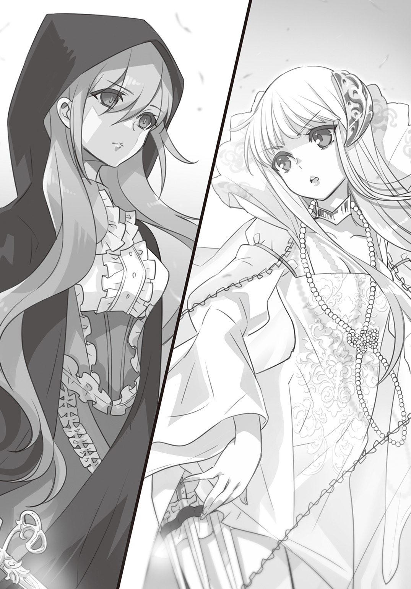
いつも美しくまとめられている長い髪が風に吹き乱されている。それすら構わない様子で、ロゼは手に持つ細い剣を構えた。
「ロゼ、あなたが――どうしてここに」
エヴァレットの問いに、ロゼは無言を貫いた。
光のない眼差しと獣じみた強烈な殺意が、ロゼがここに来て何をしようとしているのかを教えてくれる。エヴァレットは長いドレスの裾をたくし上げ、腿に縛りつけ隠し持っていたナイフを手にした。
「そう......戦うのね」
ロゼは床を蹴りつけ跳躍し、いっきに間合いを詰めた。
（速い――！）
ロゼの視線、腕の筋肉の微細な動き、呼吸。わずかな時間で全ての運動を見抜いたエヴァレットの脳裏に浮かんだのは、ロゼの一閃が自分の喉元を搔き切る光景だった。その速さと圧倒的な強さから逃れる術はない。
（......だとしても、わたしは）
暗殺者は勝利を祝われることなどない――ただ標的を狙い、その命を奪うことが定め。
迫りくる死への恐怖を薙ぎ払い、エヴァレットはナイフを構え直した。
太陽が沈み始め、一日の最後の眩しい光が塔の中に射しこんでくる。
エヴァレットは、静かな眼差しでロゼを見据えた。
＊＊＊
塔の最上階に辿りついた時、真っ赤に燃える夕陽を背に、二つの影が重なりあう姿が飛び込んできた。
それは死闘に等しく、互いの武器に命を奪い合う覚悟が込められた闘い――。
力は互角のようにも見えたがロゼの跳躍力はすさまじく、エヴァレットが次第に正面バルコニーへと追いやられている。激しい攻防が続く二人の間に飛び込む隙など、一瞬たりともない。
（それでも、ロゼの隙を突くしかない）
入り口から部屋を見渡すと、真正面には儀式のためのバルコニー、中央には玉座と屏風、左に天井まで届く大きな出窓、そして右側に薄いレースのカーテンが掛けられた部屋が目に入った。その部屋にエヴァレットと逃げ込むことができないかと考えていた時、ある違和感を覚えた。
（あのカーテン、奥へとなびかない）
俺は素早くレースのカーテンがある場所へと滑り込んだ。
（これは仕掛け鏡だ......。違和感の正体はこれか？）
鏡を通常よりも薄く仕上げると、仕掛け鏡になる――父の奇術の中にも、この鏡を使う演目があった。仕掛け鏡は暗い場所から覗くと鏡の向こう側にあるものが見え、明るい場所から見ると普通の鏡になる。明暗を応用して舞台に幽霊を作り出すこともできる装置だ。
（奥の部屋は......）
目を凝らすと、鏡を境に奥には一間にも満たない空間があり、両端にランプが掲げられていた。その明かりが小さな空間の向こうにある女王の寝室らしき部屋を照らしている。
ふと、仕掛け鏡の隅に小さく刻まれている文字が目に入った。
（女王の......戯れ？）
「ふっ......！」
（エヴァレット！）
振り向くと、エヴァレットがロゼに追い込まれ、苦し気な吐息を零していた。
何とかしてロゼの動きを止め、エヴァレットに近づく方法は――
（......やってみるしかない！）
ポーチに潜ませていた手鏡を手に取り、入り口近くにあった花瓶を割った。
花瓶が割れる大きな音に、反射的にエヴァレットとロゼの視線がこちらを向いた。
それと同時に俺は沈みゆく太陽の光を反射させ、ロゼの顔を照らす。
まともに光を受けたロゼが目を細めるのを見逃さなかった。俺はすぐさまロゼに向かってポケットに忍ばせていた小瓶の中身をぶちまけた。
「......くうっ！」
ロゼはその場で屈みこむようにして顔を覆った。
街を駆け抜けながら、何かに使えないかとかっぱらってきた蒸留酒だ。度数が高く、顔にかぶってしまったらしばらく目は開けられないだろう。
「シオン！」
エヴァレットが俺のそばへと駆け寄ってくる。
「エヴァレット、ロゼは操られている。『反女王派』は、候補生が女王を殺すのを皆に見せつけようとしてるんだ」
エヴァレットもさすがに顔を強張らせたが、すぐさま強い眼差しで俺を見つめ返した。
「なら、日が完全に沈めば、その作戦は意味をなさなくなるわ。日没後に広場のほうで大きな花火が上がるでしょう？ その時には人々の視線はそちらに集まる」
「それまでなんとかやりすごせば......」
「カーテンの向こうにある寝室......あそこに誘い込んで時間を稼ぎましょう」
「バルコニーに屏風に寝室......花火の時間までかくれんぼするしかないな」
「まるで子どもの戯れね」
（かくれんぼ......戯れ......）
すると、俺の頭の中で何かが繫がった。
「でも、それしかわたしたちの切り札がないかもしれな......」
「エヴァレット聞いてくれ、良い作戦がある！」
＊
しんと静まり返った室内に、ロゼの足音が響く。
俺は玉座の後ろの屏風に、エヴァレットは正面バルコニー側のカーテンの中に身を潜めた。
ロゼが完全に視力を取り戻す前に、俺とエヴァレットは二手に分かれた。
（最初はどっちに来る――）
ロゼは、正面バルコニーのほうを向いた。
「はぁっ！」
ロゼの構えた剣が、エヴァレットのいるカーテンを貫いた。
だが隠れたと思しき場所にその姿はない。
ロゼは自分の勘が外れたことに驚きながら何度もそこを貫き、引き裂く。
彼女の気が正面バルコニーのほうに向いているわずかな間に、俺はポーチから一巻きの真っ黒な糸を取り出し、左側の出窓のカーテンの端に糸をかけ、再び屏風の裏に隠れた。
（エヴァレット......）
エヴァレットは息を殺しバルコニーの外側に身を隠している。
ロゼの小さな舌打ちが聞こえた。
（よし、今だ！）
俺は糸を引いた。ゆらり、とカーテンが揺れる。ロゼがその動きを見逃すはずもない。
ロゼは半身をひねりながら跳躍し、出窓の前にふわりと着地する。
「――っ!!」
ロゼの刃がカーテンを突き抜け、壁に深く刺さった。
俺はギリギリのところで玉座の陰に潜り込んでいた。
二度目の攻撃も空振りに終わったロゼに焦りの表情が見え始めているのは、俺でもわかる。太陽はほとんど沈みかけている。ロゼは壁から剣を引き抜くのを諦め、胸元から短剣を取り出し、ゆらりと振り返った。
（次――ロゼはどう動く）
その瞬間、全身にぞくりと寒気が走った。
ロゼの靴音がゆっくりと、俺の隠れる玉座に近づく。
（今度は......俺のほうか）
どう動くべきか、どこに逃げるべきか、何をすべきか。だが何故か、思考も体も凍りついたように動かない。殺気だ。ロゼの恐ろしいまでの殺気が、俺を支配し始めていたのだ。
（どうか、間に合ってくれ......！）
太陽の最後の光が、山際に沈んでいった。
闇が塔の中に流れ込んだ時、バルコニーの向こうで、大きな花火が打ち上げられた。
眩い閃光。連続する破裂音。エヴァレットがロゼを倒せる、唯一の機会がやってきた。
＊
『あそこに寝室はない。これは仕掛け鏡を使った奇術だったんだ』
『......仕掛け鏡？ シオン、どういうこと？』
『部屋に見えていたのは鏡の奥の壁に描かれた巧妙なだまし絵だ。塔の中が暗いと、奥に部屋があると錯覚を起こさせるんだ』
『錯覚を起こすということは、もう一つの見え方もあるということね』
『ああ。鏡の向こうよりもこっちが明るくなれば、仕掛け鏡はただの鏡になる......それまでの時間をどう乗り切るか......』
『......まさかシオン、囮になるつもり？』
『違うよ。俺たちはどっちが狙われても、逃げ切れるように動こう』
『でも、あなたは――』
『エヴァレット、奇術の禁じ手は〝同じことを二度繰り返す〟ことなんだ。かくれんぼだって一度探された場所には隠れないだろう？ それさえできれば俺でも逃げ切れる』
『わかったわ。シオン、暗殺者は一振りの剣にならなければならないの――共に力を合わせ戦うとしてもそれは同じ、言葉も視線も交わしてはならない。わたしがどう動くか、相手がどう反応するかを観察して、信じて戦う。それが暗殺者のやり方よ』
『俺を信じてくれたことに、必ず応えるよ......エヴァレット、ありがとう』
迷いのない答えがわたしの心に響いた。
わずかな油断も許されない策を、今まさに講じようとしているのに、喜びに似た高揚感が生まれる。
クライマックスの瞬間が訪れる――
「ロゼ、わたしはここにいます！」
天井に向けたわたしの声が塔の中に響きわたる。
わたしは女王の寝室の入り口に立ち、ロゼを見据えていた。
彼女には揺れるレースのカーテンの狭間で、静かにナイフを構えているわたし――エヴァレット――が見えている。
「――ああああっ！」
明滅する光の中で、ロゼが絶叫しながら、跳躍し、わたしに刃を向けてきた。
だが、それは存在しない。
なぜなら、わたしは出窓の前にいるのだから。
花火で昼間のように明るくなった仕掛け鏡は、ほんの一瞬だけ普通の鏡の働きを取り戻し、反対側にいるわたしを映し出す。
彼女が見たのは、仕掛け鏡に映る偽者のわたし。
女王を倒すという強い暗示の支配と焦りが最後の最後で判断を鈍らせたのだろう。
超人めいた素早さが仇となり、ロゼは鏡に全身を打ちつけた。
＊
ナイフを構えたエヴァレットが、ロゼを背後から襲う。閃光のような一撃が走り、ロゼが崩れ落ちる。深手を負ってもロゼは攻撃をやめず、低い姿勢のままエヴァレットの足を狙った。入り乱れ、舞い踊るような剣技巧みな二人の攻防が続く。
「ロゼ、あなたの行いはもう意味をなさない」
「......っ！」
エヴァレットのナイフが、ロゼの腕を切りつける。ロゼの手から短剣が転がり落ちた。
「その傷ではもう武器は持てないはず」
「......」
「ロゼ、諦めなさい。青き薔薇の名に恥じぬように――！」
崩れるように、ロゼが床に膝をついた。
エヴァレットはロゼに近づき、短剣を手の届かない所へと蹴り飛ばした。そしてドレスの内側から銀色に光る糸を取り出し、ロゼの後ろ側にまわる。
「待ってくれ！ エヴァレット、ロゼは――」
エヴァレットがロゼを拘束しようとその手を取った時。
ロゼは思いきり体を反らせ、跳ねるように立ち上がった。瞬く間に動かない右腕ではなく、左手を使い――ロゼはエヴァレットが腿に隠していた投げナイフを奪った。
（ロゼにとって、これが最後の手段なんだ！）
俺は持てる力の全てをこめて、二人の間に飛び込んだ。
俺に弾き飛ばされたエヴァレットが、壁に体を激しく打ちつける音がした。
「ぐっ......」
肩に鋭い痛みが走った。本来ならエヴァレットの胸を貫くはずだったロゼのナイフが、深々と俺の肩に突き刺さっている。痛みは熱を持ち、溢れ出た血が腕を伝っている。
遠のきそうになる意識を、俺は歯を食いしばり繫ぎとめた。
「ロゼなら必ず諦めず、止めを刺しにくるだろうって思ってた......だってロゼは......誰かに頼まれたこと......放り出せないもんな......」
俺にナイフを突き立てたまま、ロゼは止まっていた。
ロゼの虚ろな瞳が、すぐ傍にある。そこには憎しみも怒りもなく、光のない瞳孔の中に俺だけが映っていた。
「......」
武器を失い、獲物を仕留め損ねたと、ロゼの本能が感じたのだろう。
ロゼの唇が何かを訴えるように、かすかに動くのが見えた。それはあの女が――俺とエミリアの馬車を襲った女が最期に見せた仕草に似ていた。
「ロゼ、こっちを見てくれ」
ロゼを救うために、たった一度しかできない大きな賭け。
もしもその賭けと引き換えに、指先を失い奇術ができなくなると言われたとしても、俺は引かないだろう。
（この一度だけでいい、どうか、俺の言葉が届きますように）
虚ろな瞳の中に、俺が映りこんでいる。だけど、本当にここにいなきゃいけないのは、俺じゃない。ロゼの大事な、一番大事な親友のエミリアなのだ。
「......ロゼ」
俺はまっすぐロゼを見つめた。
「――ロゼ、あなたを信じています」
ロゼの心を闇の中から取り戻すたった一つの鍵――
きっと誰もが持っているはずの、宝物のような言葉。俺はそれをエミリアから預かった。
何としてでもそれをロゼに届けなければならなかった。
「......エミ......リア......」
かすかに瞳孔が揺れるのが見えた。ロゼの心に一筋光が差したのだろう。
しかし同時に、俺はあの女の言葉を思い出していた。
あの子の暗示が解けるのは、命を失う時だけだ......と。
「......ご......めん......なさ......い」
ロゼは虚ろな声で謝りながら、懐から薬瓶を取り出した。
「ダメだ!!」
俺が薙ぎ払った薬瓶は、床に落ちて砕け散った。
ロゼがバルコニーの外を見つめている。
（死ななければ解けない暗示――それは最後まで『死』を求め続けるものなのか？）
暗示を解く方法が、『死』であるのなら。
それを叶えた時、ロゼの心は暗示から解き放たれる。
（エヴァレット、俺も切り札を、見つけたかもしれない）
「わ......たし......」
ロゼがふらふらとバルコニーに歩み出た。
俺は意識が遠のきそうになる痛みを押し殺し、その後を追う。
日が沈んだ薄暗闇の中で、ロゼは自ら命を絶とうと欄干に足をかけた。ぐらりと傾くその体を、俺はなんとか抱き留めた。
ロゼをバルコニー側に引き寄せるためではない。
一緒に落ちて、ロゼの命を守るためにだ。
「――シオン!!」
後ろから聞こえてきたのは、エヴァレットの声――
俺の背中を必死に摑もうとして――共に闇の中へと落ちていった。
＊＊＊
ごぼごぼと、水底から湧き上がる泡沫の音だけが聞こえた。
真っ暗な水の中で沈んでいるのか浮いているのか、体の上下すらわからない。不思議と痛みは消え去っていて、瞼を閉じてこのままずっと漂っていようかという気持ちになる。
（......オ......ン......シオ......ン）
遠くから、誰かの声が聞こえた。
（......ン、シオン......）
俺の名を呼んでいる、この声は......エヴァレット？
（シオン......！）
でも、何かがちょっとだけ違う。
そう。エヴァレットはこんな声を出すはずがない。
こんな、今にも壊れそうな震えた声なんて――
「シオン、目を開けなさいっ！」
「......痛ってえ！」
バチン、という派手な音とともに、頰に痛みが走った。
「早く目を――」
「お。起きた！ 起きたから！」
もう一度振り上げられた平手を遮ろうと体を起こした途端、俺は肩に走った激痛にうめき声をあげた。
「まだ止血ができていないから、動いてはいけないわ」
確かに、肩から腕にかけて生温かい血が流れ落ちるのを感じた。
エヴァレットは地面に膝をつき、俺の体を抱きかかえている。銀色の髪もドレスもずぶ濡れだった。一緒に塔から落ちた後、エヴァレットは俺をなんとかこうして地上に引き上げてくれたのだろう。すでに陽は落ち警護の衛士や見物客の気配も感じられない。
俺はエヴァレットの顔を見上げながら尋ねた。
「エヴァレットは......怪我......なかった？」
「ええ。幸い上手く飛び込めましたから」
「ロゼは......どうなった？」
「大丈夫、意識は戻っていないけれど、水を飲んではいなかったわ」
エヴァレットの後ろにロゼが横たわっている。その体は力なくぐったりしていて、顔も手も一滴の血も通っていないような白さだったが、胸元は微かに上下していた。
「良かった......エヴァレット、助けてくれてありがとな」
「......っ」
突然、エヴァレットが涙を零した。青い瞳の縁から次々と透明な球体が生まれては流れ落ちている。エヴァレットは声をあげることなく泣いていた。
「や、ここで泣くとかエヴァレットらしくないっていうかさ」
「......話しては、ダメです」
「暗殺者ってもっとこう、いつでも冷静なものだと思ってたんだけどさ」
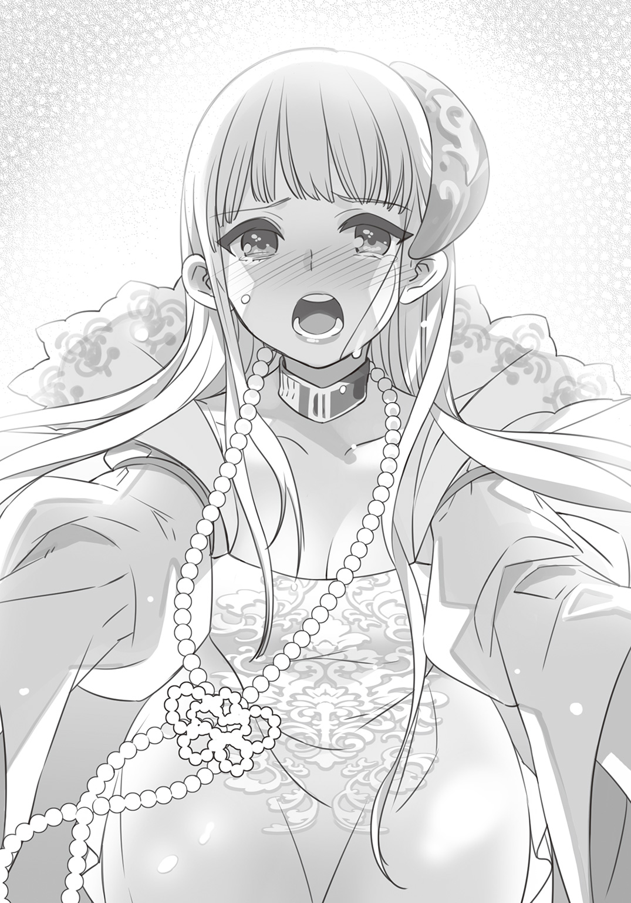
「......」
「案外普通に驚いたり、焦ったり......泣いたりするんだな」
「......黙って」
「また俺のこと殺すっていう？」
「――馬鹿なことを」
エヴァレットは首を横に振る。ああ、でも殺されるならエヴァレットがいいなと思う。瞬きもせずに涙を流す瞳を見ていたら、本当にそう思えてならない。
「どうしてあんな無茶を――」
「俺の命賭けただけじゃ、〝盾〟としては不十分だったかもしれないけどさ」
「そんなことは、ない......」
「エヴァレットが一人で戦うの、やっぱり嫌だったんだ......たとえ何の力になれなくても、他の皆みたいに、エヴァレットの〝盾〟ってやつになりたかったんだ」
「いいえ、二人で戦ったわ、シオン。わたしとあなたで――」
エヴァレットの涙が、俺の肩や手の上に落ちてくる。
俺はそれにそっと触れた。命の通った温かさがそこにあった。
「エヴァレット......俺、誤解していたかもしれない」
「......なに？」
エヴァレットの隠し部屋に足を踏み入れた時、俺はそこに積もっていた暗殺者が持つべき覚悟――死の匂いに恐れを抱いてしまった。そしてエヴァレットはそれこそが自分を作り上げている要素だと言った。
だけど、エヴァレットの魂の奥にあったのは、美しく気高い優しさだった。
「思っていたよりも......本当、優しいんだな」
「......！」
唇が真一文字にきゅっと結ばれる。
そうだ、忘れていた。エヴァレットはこんな風に言われると怒るんだった。
でも、どんなに怒られても、俺はエヴァレットにそう伝えたかった。
「あなたが大怪我をしているから遠慮しますけど、本当なら平手でその顔を打ちますわ」
「さっきやってたじゃないか」
「あれは、あなたがなかなか目を覚まさなかったから！」
ぷいとエヴァレットが横を向いた時、背後から人の気配がした。
「ジゼル......！ 大丈夫......なのか？」
草むらの向こうから姿を現したジゼルは、顔色は悪かったものの自分で立ち歩いている。
ジゼルは俺を安心させるように微笑み、一歩横へと身を退いた。
「――っ！」
エヴァレットがごくりと息を呑んだ。
ジゼルの後ろに侍女ともう一人、足元まで隠れる長いローブを着た女が立っていた。
女は目深にかぶっていたフードを上げると、俺たちをまっすぐ見据えた。
豊かな髪と涼し気な瞳は、どちらも澄んだ金色をしていた。幾つなのかもわからない佇まいは神聖でぞくりとするような厳かさを纏っている。
「女王陛下......？」
「えっ？ エヴァレット、今、女王陛下って......この人が!?」
エヴァレットが小さく頷いた。
「エヴァレット、女王の装束でいるのはさぞ窮屈だったことでしょう。よく戦い抜いてくれました。ここからは身代わりの任を解きます。すぐにシオンの傷の手当てをしてあげなさい」
ローブを脱ぎ去った女王は、エヴァレットが着ているのと全く同じ『花冠の儀式』のためのドレスに身を包んでいた。
「わたくしの身代わりという役目を、立派にやり通してくれたことに感謝します。ジゼルを通して、あなたがたの活躍はいつも見ていましたよ」
「ジゼルの......？ え、じゃあ、ジゼルって......」
俺の眼差しを受けて、ジゼルは申し訳なさそうに少し目を伏せながら答えた。
「私は、女王陛下の〝青い薔薇〟の一人です。候補生の実力を測るようにと言われ『アンブレイカブル・ガーデン』にやってきましたの」
「全てはわたくしの命じたこと――それも〝青い薔薇〟の重要な役目なのです。ジゼル、後は頼みましたよ」
恭しく礼をするジゼルに背を向け、女王は俺たちの前から立ち去っていった。
緊張から解かれ、俺はほっと息を吐きだした。
「あのさ......ジゼルは......ロゼがあんな風に暗示をかけられていたの、知っていたのか......？」
「いいえ。『反女王派』の手がどこまで深く入り込んでいるのか、残念ながら私たちは見抜けませんでした。まさかここまで力をつけていたとは......」
ジゼルは自分を責めるように悔しげに唇を嚙み、横たわるロゼを見つめていた。
（ジゼル......どうしてそんな顔するんだ？）
胸の奥から、言いようのない不安が溢れてきた。だが俺がそれを口にするより前に、いくつかの足音がこちらに向かってきた。
「――皆、無事だったのか！」
最初に見えたのはティーダだった。土埃をかぶって汚れた顔にぱっと笑顔が浮かぶ。ティーダの後ろから飛び出してきたリリィは、いつものような軽口ではなく真剣な眼差しを俺たちに向け、背負っていたトランクを下ろした。
「大丈夫。いろんなお薬があるから、絶対すぐ治すから」
「......ありがと、リリィ」
「ねえ、ロゼはどこで見つけた？ どんな状況だったかで、目を覚まさせる方法が変わるの。わかっていることだけでいいから、教えて！」
リリィの言葉に、俺もエヴァレットも返事ができなかった。
「――ロゼ!!」
最後に顔を見せたエミリアは、ロゼの体に覆いかぶさるようにしがみついた。
「良かった......息をしているわ......気を失っているだけなのね」
エミリアの頰は、溢れる涙で濡れていた。
「シオン、約束を守ってくれてありがとう......ちゃんと、ロゼを助けてくださったのね」
「あ......ああ」
胸に迫りくる不安を形にしたのは、ジゼルだった。
女王の〝青い薔薇〟の役目を、ジゼルは最後まで果たさなければならないのだ。ジゼルは横たわるロゼの前に立ち、抑揚のない声で告げた。
「ロゼは、『反女王派』による暗示によって、女王陛下の暗殺を実行しようとしました」
エミリアは、言葉をなくしていた。塔での出来事を知らないティーダとリリィも同様だ。無言の時間は永遠に続くかと思われるほど、重苦しかった。
「どのような経緯であれ、『反女王派』の手に落ちた者は生かしておくわけにはまいりません。彼の者どもが人の心を操る術の強さは、想像を絶するものがあります。彼女が自ら進んで落ちたのではないとわかっています。だからせめて――」
「いやっ......！」
エミリアがロゼを守るように両手を広げた。
「どうか、殺さないで......お願いします......わたくしが......もしも一生ロゼを監視せよというのなら、わたくしがいたしますっ！」
「エミリア、そこをどきなさい。目覚めてからでは、より彼女を苦しめることになる」
エミリアは激しく頭を振り、決してその場を離れない。
「ジゼル......待ってくれ......俺の話を聞いてくれ」
しっかりと息が吸い込めず、俺の声はかすれていた。
「ロゼの暗示は『死』によって解かれるものだったんだ......だから俺は......ロゼに自分が死んだと思わせるために......飛び降りた......」
「......」
「暗示は解けた、もうロゼは誰にも操られていないはずだ......」
俺の言葉に、ジゼルは少し驚いていたようだ。
「だけど......今の俺の力では不完全だから......ちゃんと目を覚まさせることはできないかもしれない......でもきっと、その方法を見つけるから、どうか......」
ジゼルがほんの一瞬、微笑んだように見えた。
「わかりました」
ゆっくりと俺のほうに歩み寄ってきたジゼルは、しゃがみこみ俺の耳元で小さく囁いた。
「シオン、女王が仰ったのです。あなたがもしお父様と似ていらしたなら、その言葉を信じましょうと」
だんだんと意識が揺らぐなかで、ジゼルの声は遠くに聞こえた。
エヴァレットが、エミリアが、ティーダもリリィも俺の名を呼んでくれていたように思う。
暖かな毛布にくるまれているような安心感のなかで、俺は意識を失った。
エピローグ 帰るべき場所
長い夢を見ていた。
俺は懐かしい家――それもずいぶん昔の記憶の中の家にいた。
今よりもっと背が低く、好奇心の固まりだった俺が父と過ごした十年前の最後の日。
（いや、違う。最後は丘で過ごしたはず。じゃあ、どうして今、俺は......）
誰もいない父の部屋に忍び込み、机の上に広げてあった紙に目をやった。幼い俺にはわからない何かの設計図――だが、今はわかる。
それは円錐形の投げナイフ。暗殺に使うための武器の設計図だ。その横には、武器を手にした人物の図や有効な使い方を記した手書きのメモがある。見覚えのある父の文字で書かれたそれは【暗殺伎】の指南書だったんだ。
「シオン、まだ起きていたのかい？」
振り返ると父がいた。扉の向こう、いつものように台所にいる母は椅子に座ったまま、眠っている。
「母さん、座ったまま寝てる」
「心配しなくてもいい、すぐ起きる。シオン、一つ聞いてもいいかい？」
「うん」
「もし父さんがいなくなったら、どうする？」
「捜す！ 見つかるまで捜すよ！」
父は大きな手で、俺を抱き寄せる。
「ああ。お前ならそう言うだろうと思ったよ。かけがえのない宝物だ......だからこそ、私を追ってはいけない」
父は俺の目の前に一枚のハンカチを差し出した。
甘い匂いが鼻の奥につんと飛び込んできた。
「私を嫌いなさい。二度と顔を見たくないと思いなさい。もしも追うと言うならば、お前は一番なりたいものになれなくなる」
一番なりたいもの。それは父のような、誰にでも愛される奇術師だった。
「役立たずな奇術師にはなりたくないだろう？」
父が指をパチンと鳴らした。たった一度鳴らされたその音が、何度も頭の中で反響する。
「お前たちは、父に捨てられたのだ。二度と顔も見たくないと憎み、いつか忘れるんだ」
「......父さん」
視界が大きく揺れた。目の前にあるはずの父の顔が左右にぶれ、やがて見えなくなっていく。
――父は、俺と母に暗示をかけたのだ。母は父の思惑通り、行方をくらました父を憎み、父に関するもの全てを捨て去った。だけど俺は......違った。
（きっと、暗示よりも強い言葉を、宝物のように心にしまっていたからだろう）
――どこにでも行ける。
残された書物を読み、奇術の練習をし、突然現れた運命の転換によって出会った仲間たちとの時間の先に、俺はやっと知ることができた。
父は、女王や〝青い薔薇〟のために【暗殺伎】を編み出す務めに就いていたのだ。
十年前に起きた反逆事件の余波を受け、父は家族に害が及ばぬよう行方をくらましたのだろう。決して自分の行方を追ったりせず、忘れてしまえと暗示をかけて――。
（父さんがどんな思いで姿を消したのか、やっとわかった。その答えにようやく辿りついたんだ）
＊＊＊
「――っ」
突然、肺の奥まで冷たい空気が入り込んできた。
目を開けると、俺は〈試練の間〉のベッドの上に横たわっていた。体を動かそうとすると、まだ肩から先が痺れている。だが傷口は手厚く治療されているようで、痛みはずいぶんましになっていた。
「......シオン」
エヴァレットが、静かに俺を呼んだ。
「良かった。やっと起きたのね」
「俺、何日ぐらい眠ってたんだ？」
「三日三晩、一度も目を覚まさなかったのよ」
エヴァレットの目は薄らと赤く染まり、まぶたにも陰りが見えた。
俺が眠っている間、ずっと隣にいてくれたのだろう。
「わたしは、シオンに謝らなければいけないわ」
「......？」
「ずっと、あなたは命を賭けていない、わたしとは違うと言っていた。でもそうじゃなかった」
エヴァレットの青い瞳の色が、わずかに揺らいだ。
「ごめんなさい」
それは柔らかで、すとんと胸の奥に響く素直な声だった。
「ずっと一人で歩いていこうと思っていたの、わたしの目指す場所はあまりに遠くて、厳しい道の先にあるから」
今まで耳にした、他者を遠ざけるための言葉ではない。
エヴァレットが心にしまっていた静かな決意を、明かしてくれているのだ。
「わたしの決意が、誰かを傷つけるところなんて見たくないから......一人でよかったの。でも、シオン」
ゆっくりと、エヴァレットの手が俺のほうへと差し出される。
「命を賭けて運命に立ち向かうあなたの姿が、わたしにとって......」
エヴァレットは一瞬、目を閉じて言葉を呑み込んだ。俺は何も言わず、ためらうエヴァレットを見つめ続ける。小さな吐息の後、青い瞳がまっすぐ俺を捉えた。
「あなたはわたしにとって、なくてはならない存在よ」
差し出されたエヴァレットの手を、俺は強く握りしめた。
「ありがとう......エヴァレット」
まだまだ力は足りない。それは痛いほどわかっていたけれど、エヴァレットが俺を〝盾〟として受け入れてくれたのだ。
「あー！ シオン起きてるー!!」
「......っ！」
扉のほうから響いた声に、俺もエヴァレットも慌てて手を引っ込めた。
最初に飛び込んできたリリィに続き、ティーダとエミリアも俺のベッドの周りに集まってきた。
「あんたさ......本当に......あたしたち心配したんだよ！」
「わ、ティーダ、ちょっ......放してくれ」
ティーダが思いきり俺の体を抱きしめる。未だ俺が男装だと固く信じているティーダの行動には、相変わらずハラハラし通しだった。
「じゃーん！」
「......リリィ？」
リリィが、手製の白衣を着せられたクマのアルを目の前に掲げた。
「今日こそはリリィが直接診てあげるね？ 眠っている間はずっとエヴァレットがお世話するって言ったんだもん。これからはリリィの番！」
「だ、大丈夫！ もう大丈夫だから......なあ、エヴァレット」
エヴァレットも、リリィの提案にはさすがに慌てたのか、こくこくと首を縦に振り続けた。
「ええー、残念。いろいろ試したかったのになあ。ねえ、じゃあリリィは何したらいい？」
「そう、だな。ちょっと......お腹空いた、かな」
「ううう、お料理かあ。それならアルにお願いしようかな」
しょんぼりとしたリリィの頭を、ティーダが笑いながら撫でている。
「シオン、いきなりお食事はいけませんわ」
エミリアがゆっくりと歩み寄ってきた。なぜかその動きがぎこちなかったのは、ふわりと湯気を漂わせるティーカップが載る銀のトレイを持っているせいだった。
「さあ、どうぞ」
「ありがとう」
ティーカップの中身は温められたミルクで、俺はありがたくそれに口をつけたが――
「エ、エミリア？」
俺の顔を横目で覗くエミリアは、今にも泣きそう顔で拗ねている。
「な、なに、どうしたの？」
エミリアは俺の耳元に唇を近づけ、誰にも聞こえないような小さな声で囁いた。
「シオン。もしかしたらあなた、エヴァレットのことがお好きなのかしら......」
「いや、そういうわけでは......えっと」
「ではわたくしの気持ちはこのままでもよろしいかしら」
「た、たぶん......」
「安心しましたわ」
何をと尋ねる前に、エミリアはにこりと笑みを浮かべ、唇の前で人差し指を立てた。
騒がしい、こそばゆいような平穏が戻ってきた。
後は全てが元通りに――なればいいのに。
俺は呼吸を整えてから、一番気になっていたことを口にした。
「......ロゼは、どうなった？」
答えてくれたのはエヴァレットだった。
「今もまだ眠り続けているけれど、体は回復に向かっています。おそらく自発的に眠っているので、目を覚ます日はそう遠くないだろうと、お医者様は言っていました」
俺はほっと息を吐きだした。ジゼルは、ロゼを処分しないという約束を守ってくれたようだ。
「それからもう一つ」
「......？」
「わたしたちは、無事に〝青い薔薇〟の資格を得ることができました」
エヴァレットの顔に喜びの色が浮かぶ。
俺にはそれが、光る翅を持つ大きな蝶が高く飛ぶように見えた。
気高く美しいその姿を見ただけで、心の奥から幸せが泡沫のように湧き上がる。
「エヴァレットの夢、叶ったな。本当におめでとう」
「今日この日からが、また始まりの一日よ」
「俺も一緒に......エヴァレットの隣にいて、いいか？」
エヴァレットは俺をまっすぐ見つめながら、頷いた。
＊＊＊
「どうやら、あの少年は無事に目を覚ましたようだね」
「ええ、出血も多く傷が深かったので一時は命が危ぶまれましたが、助かりました」
「よかった。強い少年だ」
隠し部屋に身を潜め、〈試練の間〉にいるシオンたちの様子を窺っているのは――ジゼルと、アージェント侯爵だった。
「侯爵、なぜここまでして、あの少年......シオンをエヴァレットと引き合わせたのですか？」
「何のことだね」
「数カ月前、シオンという名の少年が死んだという記録を見つけましたの。わざわざ墓まで建てられている......ですがこれは改竄されたものでしたわ」
「よくある名前だからな。墓守が間違えて書き込んだのかもしれない」
「その少年の母親は、毎月ある商人から花束を届けられるのを嬉しがっていたと――侯爵、あれは暗示を継続するためのものでしょう」
「......ほう」
「その花はシオンが死んだとされた日から種類が変わったことも調べがついています。暗示の内容が変わった......だからシオンは、家族から忘れ去られた」
「そんなことが私にできると、お前は思うかね」
「【暗殺伎師】ジューダ様と交流のあった、暗殺公アージェント侯爵なら。そしてそこまでシオンに肩入れする理由は――」
アージェント侯爵は、深くため息をついて声を落とした。
「さすが女王の〝青い薔薇〟だな。そうだ。私の親友ジューダの息子がシオンだ。あの男から最後に託された願い......『反女王派』が動き出したら家族に害が及ばないようにと、あの男が残した伎を継いで、暗示を続けていたのだ」
アージェント侯爵は懐かしげな眼差しでシオンを見つめていた。
「あの男には未だ頭が上がらないのさ、もう十年も会っていないというのに......だから彼の息子を守るのも私の役目だろう？」
「シオンは知っているのですか」
「......知るはずもない。動き出した『反女王派』があの男の消息を求め嗅ぎまわっているのだ。少年の身に父と同じ【暗殺伎師】の血が流れていることを知ってはならない......守り続けるには目の届く場所に彼を置く、この方法しかなかったのだ」
仲間たちと笑いあうシオンは、もうアージェント侯爵の知る親友の姿と重なり始めている。強い暗示すらも撥ね除ける力を持つ眼差しは、懐かしさすら感じるほど似ていた。
「友との約束は、守らねばならぬだろう？」
アージェント侯爵の囁きに、ジゼルは深々と頭を下げた。
＊＊＊
「......」
俺が目を覚まして一息ついた後も、エヴァレットはベッド脇の椅子に腰かけたまま、じっとこっちを覗きこんでいた。
「な、なんだよ。言いたいことがあるならはっきり言ってくれ」
「不思議だと思ったから」
「......？」
「顔が違う。わたしの記憶していたシオンの顔と、何か少し違うのよ」
「え......本当に？ な、なんでだろ」
「あなたまさか、わたしがうたた寝をした時に別人にすり替わったんじゃないでしょうね？」
「そんなことできないって......まだ！」
「まだって言いましたね？ ではいずれはそのようなことをやるかもしれないという......」
「それはわからない、かなあ」
「わたしの目はごまかせません、必ず見破りますからね？」
――大丈夫、誰かと入れ替わったりする気なんかない。
時間を戻して何もかも元通りにしてやるって言われても、俺は絶対この道を選ぶ。
あ と が き
ある日突然、胸の奥がむずむずして、私はここ十年ほど使っていた名前（市川環）を変えました。市川珠輝として、そしてオリジナルのライトノベルとしては初の一冊となります。
そしてこのむずむずは、自分の物語をなんとか形にしたいという思いでした。時々、自分には何ができるのだろう、何のためにここにいるのだろうと思うことはありますでしょうか。私にはあります。そんな時、いつも物語が私の心を温めてくれました。舞台はどこでも構いません。学園の中でも、宇宙でも、遠い未来や過去であっても、何かを見つけようとして走る登場人物の心に触れたくて、本を開きます。
いろいろあって、物語を綴る側として一つのお話を書く機会をいただきました。
このお話の主人公であるエヴァレットは、『暗殺候補生』という作品に至る前に考えていた物語から存在していました。貴族の令嬢でもなく、暗殺者でもなかった彼女の物語はとても孤独で、過酷な運命に一人で立ち向かわなければならないものでした。それでも彼女はいつも前を向き運命を変えようと戦う女の子です。
その後、物語の世界観や設定自体を根本的に考え直すことになりました。それでも彼女は新たな物語のなかに連れていきたくなるほど、思い入れのある人物となっていました。
エヴァレットの根底にある孤高さは変わらず、だけど今度は彼女が本当はどんな女の子なのかもちゃんと描きたい。そのために正反対の性格を持つシオンに出会い、エミリアをはじめとする同じ目標を持つ仲間が生まれてきました。
新しく考えた世界観や設定にエヴァレットは馴染んでいき、気がつけばどんどん思ってもいなかった考え方や動きを見せてくれました。これは物語を綴る時にいつも不思議に感じる、そしてとても心地よい感覚です。
何のためにここにいるのか。凛とした彼女たちの眼差しはいつも定まった星を見上げるようにまっすぐなんだろうと思います。
エヴァレットたちの物語が、読んでくださったどなたかの心の中で走り出してくれたら、これほど嬉しいことはありません。
あなたはどうして小説を書くのかと聞かれたら、きっと過去の自分や、もしかしたら私と同じような気持ちで本を開くかもしれない誰かに向かって書いているのだと思います。
さて、ここからはこの本を作るにあたり、力強く支えてくださった皆様に謝辞を。
編集部の石川様。右往左往する私を辛抱強く支えてくださり、本当にありがとうございます。自分自身の扉を開けるために必要な鍵を、たくさんいただきました。
イラスト担当のいとうのいぢ様。凛々しくも可愛らしいデザインがやってくるたび、心躍りました。エヴァレットをはじめ、この世界で生きていく登場人物たちが浮き上がってくるのを実感しました。
認知心理学者でマジシャンの漆原正貴様。貴重なお話をお伺いできたことは、シオンというキャラクターを作るうえで大変助かりました。
デザイナーの團夢見様。出来上がったデザインを見た時、なんて素敵なんだろうとため息が出ました。エヴァレットの可憐で凛とした佇まいをより魅力的に引き出していただけたこと、本当に嬉しかったです。
渋谷のＫ姐さん。物語とはという問いかけをいくつも交わしながら、ここ数年の心の師匠と勝手に呼んでいます。明るい笑顔にいつも癒やされています。
そして、この本をお手に取って下さった読者の皆様に心より感謝いたします。
エヴァレットたちは、読んでくださった皆様のなかで駆け出していきましたでしょうか。
どうかほんの一時でも、皆様の心に何かを灯せることができたらと思います。
それでは、またお会いできる日を願って。
市 川 珠 輝
著者紹介
市川珠輝 いちかわ たまき
京都府出身、千葉県在住。
趣味はセキセイインコの匂いを嗅ぎたおすこと。
薄暗い喫茶店を求めて、日々さまよい歩いています。
illustration
いとうのいぢ
この度『暗殺候補生 蒼き薔薇のエヴァレット』のキャラクターデザイン／挿絵を担当させてもらいました、いとうのいぢと申します。
魅力的な登場人物たちが織りなす、華美な世界に酔いしれてください!
ダッシュエックス文庫DIGITAL
暗殺候補生
蒼き薔薇のエヴァレット
著者 市川珠輝
© TAMAKI ICHIKAWA 2017
２０１７年１月31日発行
この電子書籍は、ダッシュエックス文庫「暗殺候補生 蒼き薔薇のエヴァレット」
２０１６年12月27日発行の第１刷を底本としています。
発行者 鈴木晴彦
発行所 株式会社 集英社
〒１０１－８０５０
東京都千代田区一ツ橋２丁目５番10号
０３－３２３０－６０８０（読者係）
編集協力 石川知佳
制作所 株式会社ＩＣＥ
本作品の全部また一部を無断で複製、転載、改竄、インターネット上に掲載すること、および有償無償に関わらず、本データを第三者に譲渡することを禁じます。なお個人利用の目的であっても、コピーガードを解除しての複製は、法律で禁じられています。